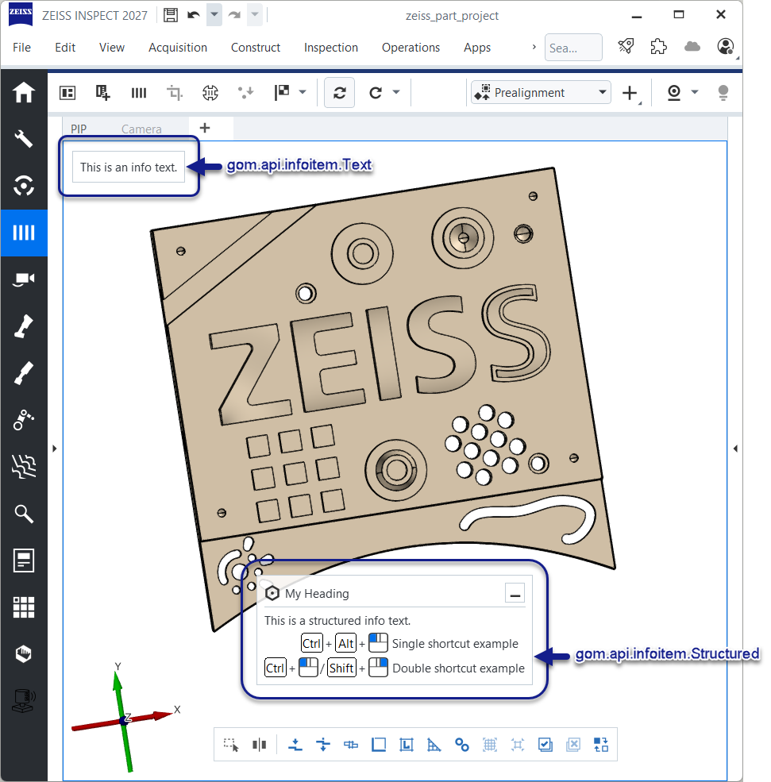
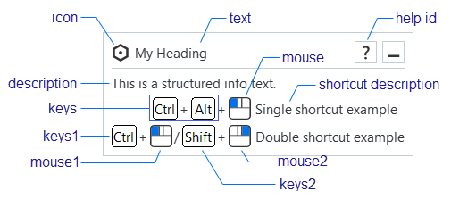
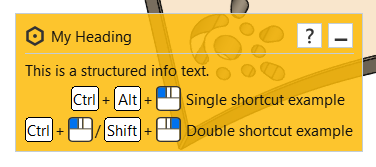
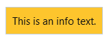
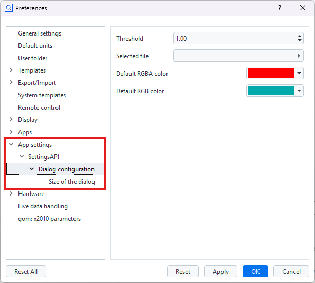
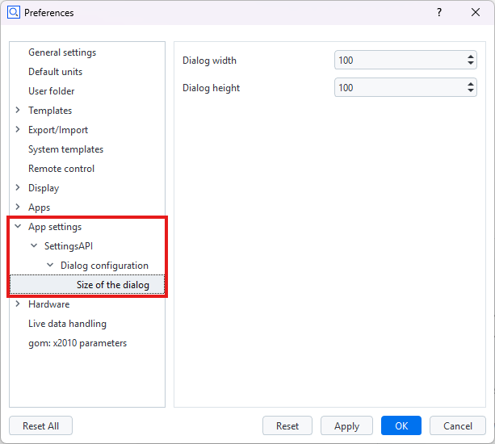

ZEISS INSPECT App Python API documentation
Welcome to the ZEISS INSPECT Python API documentation. Here you can find a detailed documentation of a subset of the App programming specification. Please bear in mind, that recording commands with the script editor can be used to add new functions to your script.
Note
The module importing behavior changed with ZEISS INSPECT 2025. Previously, the API modules could be used without proper import statements due to their internal handling. Beginning with ZEISS INSPECT 2025, each module is a full featured native Python module and
must be properly imported before use!
gom.api.addons
API for accessing the add-ons currently installed in the running software instance
This API enables access to the installed add-ons. Information about these add-ons can be queried, add-on files and resources can be read and if the calling instance is a member of one specific add-on, this specific add-on can be modified on-the-fly and during software update processes.
gom.api.addons.AddOn
Class representing a single add-on
This class represents a single add-on. Properties of that add-on can be queried from here.
gom.api.addons.AddOn.exists
- gom.api.addons.AddOn.exists(path: str): bool
Check if the given file or directory exists in an add-on
- API version:
1
- Parameters:
path (str) – File path as retrieved by ‘gom.api.addons.AddOn.get_file_list ()’
- Returns:
‘true’ if a file or directory with that name exists in the add-on
- Return type:
bool
This function checks if the given file exists in the add-on
gom.api.addons.AddOn.get_content_list
- gom.api.addons.AddOn.get_content_list(): list
Return the list of contents contained in the add-on
- API version:
1
- Returns:
List of contents in that add-on (full path)
- Return type:
list
gom.api.addons.AddOn.get_file
- gom.api.addons.AddOn.get_file(): str
Return the installed add-on file
- API version:
1
- Returns:
Add-on file path (path to the add-ons installed ZIP file) or add-on edit directory if the add-on is currently in edit mode.
- Return type:
str
This function returns the installed ZIP file representing the add-on. The file might be empty if the add-on has never been ‘completed’. If the add-on is currently in edit mode, instead the edit directory containing the unpacked add-on sources is returned. In any way, this function returns the location the application uses, too, to access add-on content.
gom.api.addons.AddOn.get_file_list
- gom.api.addons.AddOn.get_file_list(): list
Return the list of files contained in the add-on
- API version:
1
- Returns:
List of files in that add-on (full path)
- Return type:
list
This function returns the list of files and directories in an add-on. These path names can be used to read or write/modify add-on content.
Please note that the list of files can only be obtained for add-ons which are currently not
in edit mode ! An add-on in edit mode is unzipped and the get_file () function will return
the file system path to its directory in that case. That directory can then be browsed with
the standard file tools instead.
Example
for addon in gom.api.addons.get_installed_addons():
# Edited add-ons are file system based and must be accessed via file system functions
if addon.is_edited():
for root, dirs, files in os.walk(addon.get_file ()):
for file in files:
print(os.path.join(root, file))
# Finished add-ons can be accessed via this function
else:
for file in addon.get_file_list():
print (file)
gom.api.addons.AddOn.get_id
- gom.api.addons.AddOn.get_id(): UUID
Return the unique id (uuid) of this add-on
- API version:
1
- Returns:
Add-on uuid
- Return type:
UUID
This function returns the uuid associated with this add-on. The id can be used to uniquely address the add-on.
gom.api.addons.AddOn.get_level
- gom.api.addons.AddOn.get_level(): str
Return the level (system/shared/user) of the add-on
- API version:
1
- Returns:
Level of the add-on
- Return type:
str
This function returns the ‘configuration level’ of the add-on. This can be
‘system’ for pre installed add-on which are distributed together with the application
‘shared’ for add-ons in the public or shared folder configured in the application’s preferences or
‘user’ for user level add-ons installed for the current user only.
gom.api.addons.AddOn.get_name
- gom.api.addons.AddOn.get_name(): str
Return the displayable name of the add-on
- API version:
1
- Returns:
Add-on name
- Return type:
str
This function returns the displayable name of the add-on. This is the human readable name which is displayed in the add-on manager and the add-on store.
gom.api.addons.AddOn.get_required_software_version
- gom.api.addons.AddOn.get_required_software_version(): str
Return the minimum version of the ZEISS INSPECT software required to use this add-on
- API version:
1
- Returns:
Addon version in string format
- Return type:
str
By default, an add-on is compatible with the ZEISS INSPECT software version it was created in and all following software version. This is the case because it can be assumed that this add-on is tested with that specific software version, not with any prior version, leading to a minimum requirement. On the other hand, the software version where an add-on then later will break because of incompatibilities cannot be foreseen at add-on creation time. Thus, it is also assumed that a maintainer cares for an add-on and updates it to the latest software version if necessary. There cannot be a “works until” entry in the add-on itself, because this would require to modify already released version as soon as this specific version which breaks the add-on becomes known.
gom.api.addons.AddOn.get_script_list
- gom.api.addons.AddOn.get_script_list(): list
Return the list of scripts contained in the add-on
- API version:
1
- Returns:
List of scripts in that add-on (full path)
- Return type:
list
gom.api.addons.AddOn.get_version
- gom.api.addons.AddOn.get_version(): str
Return the version of the add-on
- API version:
1
- Returns:
Add-on version in string format
- Return type:
str
gom.api.addons.AddOn.has_license
- gom.api.addons.AddOn.has_license(): bool
Return if the necessary licenses to use this add-on are present
- API version:
1
This function returns if the necessary licenses to use the add-on are currently present. Add-ons can either be free and commercial. Commercial add-ons require the presence of a matching license via a license dongle or a license server.
gom.api.addons.AddOn.is_edited
- gom.api.addons.AddOn.is_edited(): bool
Return if the add-on is currently edited
- API version:
1
- Returns:
‘true’ if the add-on is currently in edit mode
- Return type:
bool
Usually, an add-on is simply a ZIP file which is included into the applications file system. When an add-on is in edit mode, it will be temporarily unzipped and is then present on disk in a directory.
gom.api.addons.AddOn.is_protected
- gom.api.addons.AddOn.is_protected(): bool
Return if the add-on is protected
- API version:
1
- Returns:
Add-on protection state
- Return type:
bool
The content of a protected add-on is encrypted. It can be listed, but not read. Protection includes both ‘IP protection’ (content cannot be read) and ‘copy protection’ (content cannot be copied, as far as possible)
gom.api.addons.AddOn.read
- gom.api.addons.AddOn.read(path: str): bytes
Read file from add-on
- API version:
1
- Parameters:
path (str) – File path as retrieved by ‘gom.api.addons.AddOn.get_file_list ()’
- Returns:
Content of that file as a byte array
- Return type:
bytes
This function reads the content of a file from the add-on. If the add-on is protected, the file can still be read but will be AES encrypted.
Example: Print all add-on ‘metainfo.json’ files
import gom
import json
for a in gom.api.addons.get_installed_addons ():
text = json.loads (a.read ('metainfo.json'))
print (json.dumps (text, indent=4))
gom.api.addons.AddOn.write
- gom.api.addons.AddOn.write(path: str, data: bytes): None
Write data into add-on file
- API version:
1
- Parameters:
path (str) – File path as retrieved by ‘gom.api.addons.AddOn.get_file_list ()’
data (bytes) – Data to be written into that file
This function writes data into a file into an add-ons file system. It can be used to update, migrate or adapt the one add-on the API call originates from. Protected add-ons cannot be modified at all.
Important
An add-on can modify only its own content ! Access to other add-ons is not permitted. Use this function with care, as the result is permanent !
gom.api.addons.add_external_folder
- gom.api.addons.add_external_folder(dir: str): bool
Register an external folder as a script source folder
- API version:
1
- Parameters:
dir (str) – Absolute path to an existing directory to register as an external folder
- Returns:
trueif the directory was found and the symbolic link was created successfully;falseif the path does not point to an existing directory or link creation failed- Return type:
bool
The folder is registered by creating a symbolic link in the user configuration directory. After registration, the content manager is updated and the folder’s App Contents are available to the application.
Example:
import gom
result = gom.api.addons.add_external_folder ('C:/my_scripts')
if result:
print ('External folder registered successfully')
else:
print ('Registration failed: directory may not exist')
gom.api.addons.get_addon
- gom.api.addons.get_addon(id: UUID): gom.api.addons.AddOn
Return the add-on with the given id
- API version:
1
- Parameters:
id (UUID) – Id of the add-on to get
- Returns:
Add-on with the given id
- Return type:
gom.api.addons.AddOn
- Throws:
Exception if there is no add-on with that id
This function returns the add-on with the given id
Example:
addon = gom.api.addons.get_addon ('1127a8be-231f-44bf-b15e-56da4b510bf1')
print (addon.get_name ())
> 'AddOn #1'
gom.api.addons.get_current_addon
- gom.api.addons.get_current_addon(): gom.api.addons.AddOn
Return the current add-on
- API version:
1
- Returns:
Add-on the caller is a member of or
Noneif there is no such add-on- Return type:
gom.api.addons.AddOn
This function returns the add-on the caller is a member of
Example:
addon = gom.api.addons.get_current_addon ()
print (addon.get_id ())
> d04a082c-093e-4bb3-8714-8c36c7252fa0
gom.api.addons.get_installed_addons
- gom.api.addons.get_installed_addons(): list[gom.api.addons.AddOn]
Return a list of the installed add-ons
- API version:
1
- Returns:
List of ‘AddOn’ objects. Each ‘AddOn’ object represents an add-on and can be used to query information about that specific add-on.
- Return type:
list[gom.api.addons.AddOn]
This function can be used to query information of the add-ons which are currently installed in the running instance.
Example:
for a in gom.api.addons.get_installed_addons ():
print (a.get_id (), a.get_name ())
gom.api.addons.remove_external_folder
- gom.api.addons.remove_external_folder(dir: str): bool
Unregister a previously registered external folder
- API version:
1
- Parameters:
dir (str) – Absolute path or base name of the external folder to unregister
- Returns:
trueif a matching symbolic link was found and removed successfully;falseif no registered folder with that name exists- Return type:
bool
Removes the symbolic link for the given folder from the user configuration directory. After removal, the content manager is updated and the folder’s App Contents are no longer available to the application.
Example:
import gom
result = gom.api.addons.remove_external_folder ('C:/my_scripts')
if result:
print ('External folder unregistered successfully')
else:
print ('Unregistration failed: folder was not registered')
gom.api.contributions
API for accessing the registered contributions (semantic extensions)
This API enables access to the registered semantic extensions, called ‘contributions’. Each contribution is a service based feature which extends an aspect of ZEISS INSPECT. The ‘scripted inspection’ contribution, for example, extends the inspection elements, while the ‘scripted views’ contribution extends the view system of ZEISS INSPECT.
gom.api.contributions.Contribution
Class representing a single semantic contribution
This class represents a semantic contribution. The properties of that contribution can be read and the contribution can be administered via that handle.
gom.api.contributions.Contribution.get_category
- gom.api.contributions.Contribution.get_category(): str
Return contribution category
- API version:
1
- Returns:
Contribution category
- Return type:
str
The contribution category determines the type of the contribution or to which semantic concept of ZEISS INSPECT the contribution belongs to. If, for example, the contribution extends the view system of ZEISS INSPECT, the category is ‘customviews’.
gom.api.contributions.Contribution.get_description
- gom.api.contributions.Contribution.get_description(): str
Return human readable contribution name, as used in the UI
- API version:
1
- Returns:
Human readable contribution name
- Return type:
str
gom.api.contributions.Contribution.get_endpoint
- gom.api.contributions.Contribution.get_endpoint(): str
Return service endpoint this contribution belongs to
- API version:
1
- Returns:
Service endpoint
- Return type:
str
As all contributions are service based, this function returns the service endpoint of the service the contribution belongs to.
gom.api.contributions.Contribution.get_id
- gom.api.contributions.Contribution.get_id(): str
unique contribution id
- API version:
1
- Returns:
Unique contribution id which can be used to identify the contribution, e.g. in script commands
- Return type:
str
gom.api.contributions.get_contributions
- gom.api.contributions.get_contributions(): [gom.api.contributions.Contribution]
Return the list of all registered contributions
- API version:
1
- Returns:
The list of all registered contributions
- Return type:
[gom.api.contributions.Contribution]
This function returns the list of registered contributions
Example:
import gom.api.contributions
for c in gom.api.contributions.get_contributions ():
print (c.get_id (), c.get_description ())
gom.api.custom_checks_util
Tool functions for custom checks
gom.api.custom_checks_util.is_curve_checkable
- gom.api.custom_checks_util.is_curve_checkable(element: gom.Object): bool
Checks if the referenced element is suitable for inspection with a curve check
- API version:
1
- Parameters:
element (gom.Object) – Element reference to check
- Returns:
‘true’ if the element is checkable like a curve
- Return type:
bool
This function checks if the given element can be inspected like a curve in the context of custom elements. Please see the custom element documentation for details about the underlying scheme.
gom.api.custom_checks_util.is_scalar_checkable
- gom.api.custom_checks_util.is_scalar_checkable(element: gom.Object): bool
Checks if the referenced element is suitable for inspection with a scalar check
- API version:
1
- Parameters:
element (gom.Object) – Element reference to check
- Returns:
‘true’ if the element is checkable like a scalar value
- Return type:
bool
This function checks if the given element can be inspected like a scalar value in the context of custom elements. Please see the custom element documentation for details about the underlying scheme.
gom.api.custom_checks_util.is_surface_checkable
- gom.api.custom_checks_util.is_surface_checkable(element: gom.Object): bool
Checks if the referenced element is suitable for inspection with a surface check
- API version:
1
- Parameters:
element (gom.Object) – Element reference to check
- Returns:
‘true’ if the element is checkable like a surface
- Return type:
bool
This function checks if the given element can be inspected like a surface in the context of custom elements. Please see the custom element documentation for details about the underlying scheme.
gom.api.customelements
API for handling custom elements
This API defines various functions for handling custom elements (actuals, inspections, nominal, diagrams, …) It is used mostly internally by the custom element framework.
gom.api.customelements.get_dimension_definition
- gom.api.customelements.get_dimension_definition(typename: str): Any
Return information about the given dimension
- Parameters:
name – Name of the dimension
- Returns:
Dictionary with relevant dimension information or an empty dictionary if the name does not refer to a dimension
- Return type:
Any
A physical dimension (or just “dimension”) refers to the fundamental nature of what is measured - like length, time, mass, temperature, angle, etc. These represent the qualitative aspect of measurement. This is different from a unit: Unit refers to the specific standard of measurement used to quantify that dimension - like meter, millimeter, inch for length; or degree, radian for angle.
gom.api.customelements.get_dimensions
- gom.api.customelements.get_dimensions(): [str]
Return available dimensions
- Returns:
List of known dimensions
- Return type:
[str]
gom.api.customelements.get_element_from_id
- gom.api.customelements.get_element_from_id(element_id: str): Any
Convert an internal id into a script element reference
- Parameters:
element_id (str) – Internal id of the element to convert, usually a uuid
- Returns:
Script element reference
- Return type:
Any
- Throws:
std::runtime_error if the element id is unknown
This function is used to convert ids which are representing elements into script element references which can be used in the scripting environment. It is used for internal purposes only and should be used with care. For example, in custom sequences, the child elements of a leading sequence element are stored by their internal ids, in principle uuids. So when the child elements of a leading element are requested, the internal framework can use this function to convert the stored ids into script element references.
gom.api.customelements.get_id_for_element
- gom.api.customelements.get_id_for_element(element: Any): str
Return internal id of the given element
- Parameters:
element (Any) – Element reference
- Returns:
Id of this element
- Return type:
str
gom.api.customelements.get_inspection_definition
- gom.api.customelements.get_inspection_definition(typename: str): Any
Return information about the given custom element type
- Parameters:
type_name – Type name of the inspection to query
- Returns:
Dictionary with relevant type information or an empty dictionary if the type is unknown
- Return type:
Any
This function queries in internal ‘scalar registry’ database for information about the inspection with the given type.
gom.api.customelements.get_instructions
- gom.api.customelements.get_instructions(element: Any): Any
Return recalculation instructions/commands for the given element
- Parameters:
element (Any) – Element to query
- Returns:
Recalculation instructions
- Return type:
Any
This function queries the recalculations instructions (commands) which are executed to recalc an element.
gom.api.diagram.get_element_data
- gom.api.diagram.get_element_data(element_property: str): dict
Collect Element render data for a set of diagram views
- Parameters:
element_properties – Optional element_property for identifying element data to be collected
- Returns:
QVariantMap containing collected element and view data
- Return type:
dict
gom.api.dialog
API for handling dialogs
This API is used to create and execute script based dialogs. The dialogs are defined in a JSON based description format and can be executed server side in the native UI style.
gom.api.dialog.create
- gom.api.dialog.create(context: Any=gom.ContributionContext('null'), url: str): Any
Create modal dialog, but do not execute it yet
- Parameters:
context (Any=gom.ContributionContext('null')) – Script execution context of the calling scripted contribution. Optional - omit it when calling from outside the custom elements framework.
url (str) – URL of the dialog definition (*.gdlg file)
- Returns:
Dialog handle which can be used to set up the dialog before executing it
- Return type:
Any
This function creates a dialog. The dialog is passed in an abstract JSON description defining its layout. The dialog is created but not executed yet. The dialog can be executed later by calling the ‘gom.api.dialog.show’ function. The purpose of this function is to create a dialog in advance and allow the user setting it up before showing it.
When called with a scripted contribution’s context (e.g. from a custom element’s ‘dialog’ function), the dialog
definition is resolved relative to that contribution’s add-on content. When called without a context (context
omitted), the dialog definition is resolved directly relative to the calling script instead.
gom.api.dialog.execute
- gom.api.dialog.execute(context: Any, url: str): Any
Create and execute a modal dialog
- Parameters:
context (Any) – Script execution context
url (str) – URL of the dialog definition (*.gdlg file)
- Returns:
Dialog input field value map. The dictionary contains one entry per dialog widget with that widgets current value.
- Return type:
Any
This function creates and executes a dialog. The dialog is passed in an abstract JSON description and will be executed modal. The script will pause until the dialog is either confirmed or cancelled.
This function is part of the scripted contribution framework. It can be used in the scripts ‘dialog’ functions to pop up user input dialogs, e.g. for creation commands. Passing of the contributions script context is mandatory for the function to work.
\attention This function is not enabled outside of the custom elements scripted contribution framework.
gom.api.dialog.show
- gom.api.dialog.show(context: Any, dialog: Any): Any
Show previously created and configured dialog
- Parameters:
context (Any) – Script execution context
dialog (Any) – Handle of the previously created dialog
- Returns:
Dialog input field value map. The dictionary contains one entry per dialog widget with that widgets current value.
- Return type:
Any
This function shows and executes previously created an configured dialog. The combination of ‘create’ and ‘show’ in effect is the same as calling ‘execute’ directly.
gom.api.experimental
API for experimental functionality
This API is experimental and can change at any time.
gom.api.experimental.create_dialog
- gom.api.experimental.create_dialog(url: str): Any
Create a dialog, but do not execute it yet
- Parameters:
url (str) – URL of the dialog definition (*.gdlg file)
- Returns:
Dialog handle which can be used to set up the dialog before executing it
- Return type:
Any
gom.api.expressions
General-purpose expression language metadata API
This module provides access to the ZEISS INSPECT expression language primitives — symbols, functions, element-level tokens, and cache management — independently of any specific UI component. It can be used from table editors, formula bars, dialog widgets, diagram views, or any other context that needs to enumerate what can be typed into an expression field.
Example:
import gom.api.expressions
# List symbols (GPS, Greek, Math, ...)
symbols = gom.api.expressions.get_symbols()
# List built-in functions (abs, sin, if, ...)
functions = gom.api.expressions.get_functions()
# List tokens available on a specific element
import gom.api.selection
selected = gom.api.selection.get_selected_elements()
tokens = gom.api.expressions.get_tokens(selected[0])
# Clear the expression evaluation cache (for debugging)
gom.api.expressions.clear_expression_cache()
gom.api.expressions.clear_expression_cache
- gom.api.expressions.clear_expression_cache(): None
Clear the expression cache
- API version:
1
This function clears the expression cache maintained by the expression system. It is meant to be for debugging purposes. The expression cache is used to speed up repeated evaluations of the same expressions in labels, tables, auto names, … and should usually be left alone, as it handles itself autonomously. For debugging tasks it can be useful to clear the cache to force re-evaluation of expressions nevertheless.
gom.api.expressions.get_functions
- gom.api.expressions.get_functions(): dict
Return all available global built-in expression functions grouped by category.
- Returns:
Dictionary with key “categories” → list of category objects, each with “name” (str) and “functions” (list).
- Return type:
dict
Returns a dictionary with a “categories” key containing an ordered list of function categories. Each category entry has a “name” (translated, human-readable) and a “functions” list. Each function entry contains:
name: the function identifier as used in expressions (e.g. “abs”)
description: a short human-readable description
template: a ready-to-insert call template (e.g. “abs (VALUE)”)
Internal, obsolete, and vendor-specific functions are excluded.
gom.api.expressions.get_symbols
- gom.api.expressions.get_symbols(): dict
Return all expression symbols grouped by category.
- Returns:
Dict with key “categories” → list of category objects, each with “name” (str) and “symbols” (list).
- Return type:
dict
Returns symbols that can be inserted into any expression field, organized into four categories:
GPS (GD&T tolerance symbols)
Greek alphabet
Mathematical symbols
Other (currency, arrows, typographic characters, etc.)
Each symbol entry contains:
“token” (str) — the expression token string, e.g. “TOM_SYMBOL_GPS_STRAIGHTNESS”
“description” (str) — translated display name
“glyph” (str) — Unicode glyph character(s) for visual rendering (empty for GPS symbols that require a proprietary font)
gom.api.expressions.get_tokens
- gom.api.expressions.get_tokens(element: Any): dict
Return all expression tokens available for the given element, grouped by category.
- Parameters:
element (Any) – Any project element reference (e.g. from the return value of
gom.api.selection.get_selected_elements()orgom.api.customelements.get_element_from_id()).- Returns:
Dict with keys “categories” and “data_array_categories”.
- Return type:
dict
Accepts any project element reference and returns the tokens that can be inserted into expression fields (formula bars, table cells, diagram captions, etc.) for that element. Two token sources are provided:
Element-level tokens (e.g. name, measurement results, tolerances)
Data-array tokens (e.g. point cloud coordinates, normals) Internal and icon tokens are excluded in both cases.
The returned dict has two keys:
“categories” — ordered list of element-level token categories (shown as “Keywords” in expression editors).
“data_array_categories” — ordered list of data-array token categories (shown as “Data arrays” in expression editors).
Each category entry has:
“name” (str) — translated category label (e.g. “Element info”, “Results”)
“tokens” (list) — list of token entries, each with:
“token” (str) — raw token expression string (e.g. “result_worst_case”)
“label” (str) — human-readable display name
“has_index” (bool) — whether the token supports [n] index notation
“sub_tokens” (list) — optional; for tokens with dot-notation sub-attributes (e.g. “application_build_information.version”). Each sub-token entry has “token”, “label”, “has_index”.
Returns empty category lists when the element is invalid or has no available tokens.
Example usage in Python:
import gom.api.expressions
import gom.api.selection
selected = gom.api.selection.get_selected_elements()
if selected:
tokens = gom.api.expressions.get_tokens(selected[0])
for category in tokens['categories']:
print(category['name'])
for t in category['tokens']:
print(' ', t['token'], '-', t['label'])
gom.api.extensions
API for script based functionality extensions
This API enables the user to define custom element types that extend the functionality of ZEISS INSPECT. Custom elements are fully user-defined: their configuration, computation, and visualization are implemented entirely in Python. They integrate seamlessly into the application’s element model, appearing in menus, the explorer, labels, reports, and the 3D view just like built-in elements.
Architecture overview
The custom element system is organized as a class hierarchy of base classes. Each category of custom element inherits from one of the base classes in this module:
CustomElement Base for all custom elements (dialog, event, visibility)
├── CustomCalculationElement Adds computation lifecycle (compute, stages)
│ ├── actuals.CustomActual Custom actual element types (Point, Surface, PointCloud, …)
│ ├── nominals.CustomNominal Custom nominal element types (Point, Surface, …)
│ └── inspections.CustomInspection Custom inspection/check types (Scalar, Surface, Curve)
└── sequence.CustomSequence Groups multiple elements into one editable sequence
CustomDiagram Transforms element data for diagram rendering
├── diagrams.SVGDiagram SVG-based interactive diagram
└── diagrams.CustomDiagramView Diagram integrated in the custom view framework
Each category has its own submodule (gom.api.extensions.actuals, gom.api.extensions.nominals, etc.)
with concrete element classes that define the expected compute() return value format for each geometry type.
Lifecycle of a custom calculation element
The lifecycle of a custom calculation element (actual, nominal, or inspection) follows these steps:
Registration — The element class is registered as a contribution using the
@apicontributiondecorator andgom.run_api(). This makes it available in the ZEISS INSPECT menus.Dialog — When the user creates or edits an element,
dialog()is called. It displays a configuration dialog and returns the user’s input as a parameter dictionary.Compute — After dialog confirmation (and during recalculation),
compute()is called for each stage. The function receives the dialog values and returns the computed result (e.g., a point coordinate, a surface mesh, or inspection deviations).Event — While the dialog is open,
event()is called on UI changes (widget value changed, dialog initialized). ReturningTruetriggers a preview recomputation.Storage — The returned result dictionary is stored in the project file. The keys are element-type specific (e.g.,
'value'for a point,'vertices'/'triangles'for a surface). An optional'data'key stores arbitrary custom data alongside the element.
Minimal example
A simple custom actual point element can be defined as follows:
```
import gom
import gom.api.extensions.actuals
from gom import apicontribution
@apicontribution
class MyPoint(gom.api.extensions.actuals.Point):
def __init__(self):
super().__init__(id='example.my_point', description='My Custom Point')
def dialog(self, context, args):
return self.show_dialog(context, args, '/dialogs/my_point.gdlg')
def compute(self, context, values):
return {
'value': (
float(values['x']),
float(values['y']),
float(values['z'])
)
}
gom.run_api()
```
The element class inherits from gom.api.extensions.actuals.Point, which sets the correct category
and element type automatically. The dialog() method uses the built-in show_dialog() helper to
display a .gdlg dialog file and return the values. The compute() method computes a 3D point
from the dialog values and returns it in the format expected by the Point type.
Element categories
The following categories are available for custom calculation elements:
Actuals (
gom.api.extensions.actuals): Computed elements based on measurement data or algorithms (Point, Distance, Circle, Cone, Cylinder, Plane, ValueElement, Curve, SurfaceCurve, Section, ProbeMeasuredCurve, PointCloud, Surface, SurfaceDefects, Volume, VolumeDefects, VolumeDefects2d, …)Nominals (
gom.api.extensions.nominals): Reference/target geometry elements (Point, Distance, Circle, Cone, Cylinder, Plane, ValueElement, Curve, SurfaceCurve, Section, PointCloud, Surface)Inspections (
gom.api.extensions.inspections): Check elements that compare actual vs. nominal (Scalar, Surface, Curve). Inspections require atarget_elementand use physical dimensions and units.Sequences (
gom.api.extensions.sequence): Grouped element creation that bundles multiple elements into one editable unit.Diagrams (
gom.api.extensions.diagrams): Custom diagram renderers for visualizing element data (SVGDiagram, CustomDiagramView).
Each concrete element class documents the expected return value format of its compute() function.
gom.api.extensions.CustomCalculationElement
This class is used to define a custom calculation element which computes its own data. It is used as a base class for custom actuals, nominals, and checks.
Custom calculation elements extend CustomElement with a computation lifecycle: the element receives input
values from the dialog and produces a result dictionary. The application stores this result in the project file
and uses it for visualization, reporting, and further calculations.
Subclasses
Do not inherit from CustomCalculationElement directly. Instead, use one of the concrete subclasses:
actuals.CustomActualand its element classes (actuals.Point,actuals.Surface, …)nominals.CustomNominaland its element classes (nominals.Point,nominals.Surface, …)inspections.CustomInspectionand its element classes (inspections.Scalar,inspections.Surface,inspections.Curve)
Each of these classes sets the correct category and element type automatically and documents the expected return value format.
Computation methods
This class provides three computation methods with different levels of control:
compute(context, values): Primary method to implement. Computes the result for a single stage. Called by the default implementation ofcompute_stage().compute_stage(context, values): The default implementation callscompute()and handles custom data error handling automatically (clearscontext.dataon failure). Override this method only if you need custom result validation or error handling. Please see function documentation for details about this.compute_stages(context, values): Computes results for all stages at once. The default implementation iterates over all stages and callscompute_stage()for each one. Override this method only if you need bulk computation across stages for performance reasons (e.g., vectorized NumPy operations).
Working with stages
Each custom element must be computed for one or more stages. In the case of a preview or for simple project setups, computation is usually done for a single stage only. In case of a recalc, computation for many stages is usually required. To support both cases and keep it simple for beginners, the custom elements are using two computation functions:
compute(): Computes the result for one single stage only. If nothing else is implemented, this function will be called for each stage one by one and return the computed value for that stage only. The stage for which the computation is performed is passed via the function’s script context, but does usually not matter as all input values are already associated with that single stage.compute_stages(): Computes the results for many (all) stages at once. The value parameters are always vectors of the same size, one entry per stage. This is the case even if there is just one stage in the project. The result is expected to be a result vector of the same size as these stage vectors. The script context passed to that function will contain a list of stages of equal size matching the value’s stage ordering.
So for a project with stages, it is usually sufficient to just implement compute(). For increased
performance or parallelization, compute_stages() can then be implemented as a second step.
Example for a simple single-stage computation:
def compute (self, context, values):
x = float(values['x'])
y = float(values['y'])
z = float(values['z'])
return {'value': (x, y, z)}
Example for a bulk multi-stage computation (advanced):
def compute_stages (self, context, values):
# 'values' contains one entry per stage for each widget.
# Process all stages at once for performance.
results = []
states = []
for stage in context.stages:
context.stage = stage
try:
results.append({'value': (float(values['x']), float(values['y']), float(values['z']))})
states.append(True)
except Exception as e:
results.append((str(e), traceback.format_exc())
states.append(False)
finally:
context.stage = None
return {'results': results, 'states': states}
Stage indexing
Stages are represented by an integer index. No item reference or other resolvable types like
gom.script.project[...].stages['Stage #1'] are used because it is assumed that reaching over stage borders
into other stages’ data domain will lead to incorrect or missing dependencies. Instead, if vectorized data or
data tensors are fetched, the stage sorting within that object will match that stages vector in the context. In
the best case, the stage vector is just a consecutive range of numbers (0, 1, 2, 3, ...) which match the
index in a staged tensor. Nevertheless, the vector can be numbered entirely different depending on
active/inactive stages, stage sorting, …
Caution
Usually, it is not possible to access arbitrary stages of other elements due to recalc restrictions !
gom.api.extensions.CustomCalculationElement.init
- gom.api.extensions.CustomCalculationElement.__init__(self: Any, id: str, category: str, description: str, element_type: str, callables: Any, properties: Any): None
- Parameters:
id (str) – Unique contribution id, like
special_pointcategory (str) – Custom element type id, like
customelement.actualdescription (str) – Human readable contribution description
element_type (str) – Type of the generated element (point, line, …)
category – Contribution category
Constructor
gom.api.extensions.CustomCalculationElement.compute
- gom.api.extensions.CustomCalculationElement.compute(self: Any, context: Any, values: Any): None
- Parameters:
context (Any) – Script context object containing execution related parameters. This includes the stage this computation call refers to.
values (Any) – Dialog widget values as a dictionary. The keys are the widget names as defined in the dialog definition.
Single-stage computation function. Implement this method to compute the element result for one stage.
This is the primary method to override in custom element classes. It is called by the default
implementation of compute_stage () for each stage. The function receives the current dialog
widget values and must return a dictionary with the element-type-specific result keys. See the
concrete element class documentation (e.g. actuals.Point, nominals.Circle) for the expected
return value format.
gom.api.extensions.CustomCalculationElement.compute_stage
- gom.api.extensions.CustomCalculationElement.compute_stage(self: Any, context: Any, values: Any): None
- Parameters:
context (Any) – Script context object containing execution related parameters. This includes the stage this computation call refers to.
values (Any) – Dialog widget values as a dictionary. The keys are the widget names as defined in the dialog definition.
Computes the result for a single stage.
The default implementation calls the elements specialized compute () function and does error handling.
It usually does not need to be overridden, but can for specialization in mainly two areas:
Custom result validation, for example of the value types. Checks can be added to force the
compute ()function into returning the expected results and raise an early error otherwise.Custom data handling in case or exceptions: The custom element data of the computed stage is cleared explicitly in the default implementation in case of an error. This ensures that stale data from a previous successful computation is never mistaken as current output. If you want to preserve or even set data on failure, override
compute_stage()and implement your own error handling instead.
Example: Custom result type validation for a 3D point result:
def compute_stage(self, context, values):
result = super().compute_stage(context, values) # calls compute() + handles errors
self.check_list(result, 'value', float, 3)
return result
Example: Custom data handling on failure:
def compute_stage(self, context, values):
try:
result = self.compute(context, values) # Calls `compute ()` directly to skip default custom data cleanup
self.check_list(result, 'value', float, 3) # Original checks are skipped, can be added here if desired
return result
except Exception as e:
# Custom data cleanup happened in the overwritten function and is skipped here.
# As a result, the previous stages data or the data already written in the failing
# compute() call is preserved. The implementation must care for correct behavior
# here now explicitly.
diagnostic = {'error_type': type(e).__name__, 'detail': str(e)}
# `context.data` is overwritten completely. So any remnants from the failing `compute ()` call
# are discarded and the custom data set will contain exception related information instead.
context.data = diagnostic
raise
gom.api.extensions.CustomCalculationElement.compute_stages
- gom.api.extensions.CustomCalculationElement.compute_stages(self: Any, context: Any, values: Any): None
- Parameters:
context (Any) – Script context object containing execution related parameters. This includes the stage this computation call refers to.
values (Any) – Dialog widget values as a dictionary.
This function is called to compute multiple stages of the custom element. The expected result is a vector of the same length as the number of stages.
The function calls compute_stage() for each stage by default. For a more efficient
implementation, it can be overwritten to bulk compute many stages at once.
gom.api.extensions.CustomElement
Base class for all custom elements
This class is the base class for all custom element types. A custom element is a user-defined element type where configuration and computation are happening entirely in a Python script, so user-defined behavior and visualization can be implemented.
Custom elements are registered as contributions using the @apicontribution decorator. Each element
is instantiated once at service startup. The ZEISS INSPECT application then calls the element’s methods
as needed: dialog() for interactive configuration, compute() for result computation, and
event() for UI state changes during dialog interaction.
Class hierarchy
CustomElement is the root of the custom element hierarchy. It provides the dialog, event handling, and
visibility infrastructure that all custom elements share. The following subclasses extend it for specific
purposes:
CustomCalculationElement: Adds a computation lifecycle with stage support. This is the base for all elements that produce computed results (actuals, nominals, inspections).sequence.CustomSequence: Groups multiple element creation commands into one editable sequence.
Concrete element types (e.g., actuals.Point, inspections.Scalar) further specialize these base
classes and define the expected compute() return value format.
Element id
Every element must have a unique id. It is left to the implementer to avoid inter app conflicts here. The
id can be hierarchical like company.topic.group.element_type. The id may only contain lower case characters,
grouping dots and underscores.
Element category
The category of an element type is used to find the application side counterpart which cares for the
functionality implementation. For example, customelement.actual links that element type the application
counterpart which cares for custom actual elements and handles its creation, editing, administration, …
Storing custom element data
In principle, each custom element type consists of functions which will get input via function parameters and
generate output by returning a value, usually a dictionary object with named entries. For example, if a custom
nominal command creates a nominal point, the compute () function could return a dictionary like this:
{
'position': (x, y, z),
'normal': (nx, ny, nz)
}
This is defined in details with the respective element type documentation. The returned values are then stored in the project file and belong to the element. The keys of the returned dictionary are the data keys which are fixed for each element type and element specific.
In addition to these fixed data keys, each custom element can also store custom data entries. These entries
are not predefined by the element type, but can be freely defined by the custom element implementation. This is not a
function result, it is more like an additional data storage which is associated with the element instance, for example
for caching intermediate results, storing additional metadata, … Thus, custom element data is accessed via the context
object passed to each function. The context custom data is staged, so each stage has its own custom data storage, and the current
stage is always the one used for data access. Also, the type written into the context.data field has to be a dictionary.
Each entry in that dictionary is then stored as a separate custom data entry for the element and can be accessed via
“element tokens” in scripts afterwards.
Example:
def compute (self, context, values):
# Compute an intermediate result and store it alongside the element.
# The type is arbitrary, as long as it is serializable. Using a dictionary here
# is usually a good choice.
intermediate_result = ... # Compute intermediate result
context.data = {'intermediate_result': intermediate_result,
'computed': True}
# Compute final result
result = ...
return result
Custom data persists across computation rounds. At the start of each compute() call,
context.data contains the data stored during the previous computation round (if any). This allows
using custom data as a cache for intermediate results that should survive across recalculations.
When a custom element has custom data set, these data entries can be accessed in scripts via element tokens.
Example:
element = gom.script.project['Parts']['Part 1'].elements['My custom element']
intermediate_result = element.intermediate_result # Token name matches custom data key
The size of the data storage is not limited, but it should be kept in mind that all data must be serialized
and stored in the project file. Therefore, large data structures should be avoided here. Also, calls to
context.data can be relatively expensive due to serialization and deserialization, so frequent access
should be avoided. Also, extremely large data structures may not be storable at all due to internal limits.
The custom data can be cleared per stage by setting an empty dictionary to context.data = {}.
For a more structured way or returning custom data, the result of the compute () function can also
contain a special data entry. This entry must be a dictionary and will be stored as custom data for
that element and stage. This is a more explicit way of returning custom data compared to using the
context.data field. Example:
def compute (self, context, values):
# Compute final result
result = ...
# Return custom data as part of the result
custom_data = {
'intermediate_result': ... # Some computed intermediate result
}
result['data'] = custom_data
return result
When a new custom data set is set, either via context.data or via the data entry in the result, all
previous custom data entries for that stage are cleared and the whole new data set is stored instead.
Reading custom element data back from scripts
Custom data stored via context.data or via the data key in the compute result can be read
back in two ways:
During
compute(), usecontext.datato read dataOutside of
compute(), in any script, access stored data as element tokens. Each key in the custom data dictionary becomes a token on the element, accessible by its key name::element = gom.app.project.actual_elements['My Custom Element'] value = element.my_metric # Reads the 'my_metric' custom data entry label = element.label # Reads the 'label' custom data entry
If a token does not exist, an
AttributeErroris raised.
Unlike the legacy UDE (User-Defined Element) system, custom element data keys do not require
any prefix (such as ude_). Any valid Python identifier can be used as a key name. Avoid
using names that conflict with built-in element attributes (e.g., name, type,
computation_status).
Data lifecycle across stages and on failure
Custom data persists across computation rounds for each stage. At the beginning of each
compute() call, context.data contains the data stored during the previous computation
of that stage (or an empty dictionary if no data was stored before). This enables using custom data
as a cache for values that should survive across recalculations.
Custom data is managed explicitly by the user, so the user is responsible for updating, clearing, or
leaving data unchanged. On failed computation of a stage (exception raised from the compute()), the
custom data of that stage is cleared by default. This behavior can be adapted by overwriting the compute_stage()
method and handling the exception explicitly - see compute_stage () API documentation for examples.
Example: General context data handling
def compute (self, context, values):
# Read previous custom data (if any)
previous_data = context.data
# Reset custom data for this stage to be sure no old data is left over from previous turns
context.data = {}
# Compute final result
result = ...
# Set new custom data for this stage. This will overwrite any previous data.
context.data = {
'intermediate_result': ... # Some computed intermediate result
}
return result
gom.api.extensions.CustomElement.Attribute
Attributes used in the dialog definition
The attributes are used to define the dialog widgets and their behavior. A selected set of these attributes are listed here as a central reference and for unified constant value access.
gom.api.extensions.CustomElement.Event
Event types passed to the event () function
DIALOG_INITIALIZE: Sent when the dialog has been initialized and made visibleDIALOG_CHANGED: A dialog widget value changedDIALOG_CLOSED: The dialog was closed (OK or Cancel)DIALOG_SYSTEM: A system event occurred (e.g., element selection changed)
gom.api.extensions.CustomElement.WidgetType
(Selected) widget types used in the dialog definition
The widget types are used to define the dialog widgets and their behavior. A selected set of these widget types are listed here as a central reference and for unified constant value access.
gom.api.extensions.CustomElement.init
- gom.api.extensions.CustomElement.__init__(self: Any, id: str, category: str, description: str, callables: Any, properties: Any): None
- Parameters:
id (str) – Unique contribution id, like
special_pointcategory (str) – Custom element category id, like
customelement.actualdescription (str) – Human readable contribution description
Constructor
gom.api.extensions.CustomElement._dialog_callable
- gom.api.extensions.CustomElement._dialog_callable(self: Any, context: Any, args: Any): None
- Parameters:
context (Any) – Script context object.
args (Any) – Dialog execution arguments (version, name, values, …).
- Returns:
The result of
dialog(), orargsunchanged whendialog()returnsNone.- Return type:
None
Internal wrapper that calls the user-defined dialog() method and handles a None
return value.
When a contribution overrides dialog() with pass (or otherwise returns None),
it signals “no interactive dialog needed — proceed with the input arguments unchanged.”
The C++ side requires a valid QVariantMap as the dialog result, so returning None
would cause a type-conversion error. This wrapper converts None transparently into
the unmodified input args, preserving the “no dialog” semantic without breaking the
C++/Python contract.
gom.api.extensions.CustomElement.add_diagram_data
- gom.api.extensions.CustomElement.add_diagram_data(self: Any, diagram_data: List, diagram_id: str, service_id: str, element_data: Dict[str, Any]): None
- Parameters:
diagram_data (List) – List that the data entry is appended to
diagram_id (str) – Id of the diagram the data is passed to (e.g. SVGDiagram). Leave empty if the contribution should decide which diagram to use.
service_id (str) – Id of the diagram contribution OR diagram function name (see above)
element_data (Dict[str, Any]) – Data that is provided to the diagram
Adds a diagram data entry to a list provided as an input parameter
Depending on the kind of diagram implementation being used, “service_id” can either be
the ID of the diagram contribution (e.g. zeiss.example.diagram.my_circles)
the name of the plot function including the service endpoint (e.g. gom.api.endpoint.my_plot).
gom.api.extensions.CustomElement.add_log_message
- gom.api.extensions.CustomElement.add_log_message(self: Any, context: Any, level: Any, message: Any): None
- Parameters:
context (Any) – Script context object containing execution related parameters.
level (Any) – Log level
message (Any) – Log message to be added
Add a log message to the service log. The message will be logged with the given level and appear in the service log file. It is used to forward errors from the C++ side to the Python side.
gom.api.extensions.CustomElement.add_view_data
- gom.api.extensions.CustomElement.add_view_data(self: Any, view_data: List, element_property: str, element_data: Dict[str, Any]): None
- Parameters:
view_data (List) – List that the data entry is appended to
element_property (str) – String that corresponds to the properties accepted by diagram view(s)
element_data (Dict[str, Any]) – Data that is provided to the diagram view(s)
Adds a diagram view data entry to a list provided as an input parameter
gom.api.extensions.CustomElement.apply_dialog
- gom.api.extensions.CustomElement.apply_dialog(self: Any, dlg: Any, result: Any): None
- Parameters:
dlg (Any) – Dialog handle as created via the
gom.api.dialog.create ()functionresult (Any) – Dialog result values as returned from the
gom.api.dialog.show ()function.
- Returns:
Resulting dialog parameters
- Return type:
None
Apply dialog values to the dialog arguments. This function is used to read the dialog values
back into the dialog arguments. See function dialog () for a format description of the arguments.
In its default implementation, the function performs the following tasks:
The dialog result contains values for all dialog widgets, including spacers, labels and other displaying only widgets. These values are not directly relevant for the dialog arguments and are removed.
The name of the created element must be treated in a dedicated way. So the dialog results are scanned for an entry named
namewhich originates from an element name widget. If this argument is present, it is assumed that it configured the dialog name, is removed from the general dialog result and passed as a specialnameresult instead.The tolerance values are also treated in a dedicated way. If a dialog tolerance widget with the name
toleranceis present, its value is extracted and included in the final result.
So the dialog result parameters can look like this:
{'list': 'one', 'list_label': None, 'threshold': 1.0, 'threshold_label': None, 'name' :'Element 1', 'name_label': None}
This will be modified into a format which can be recorded as a script element creation command parameter set:
{'name': 'Element 1', 'values': {'list': 'one', 'threshold': 1.0}}
This function can be overloaded if necessary and if the parameters must be adapted before being applied:
def apply_dialog (self, dlg, result):
params = super ().apply_dialog (dlg, result)
# ... Adapt parameters...
return params
For example, if a check should support tolerances, the dialogs tolerance widget value must be present in a parameter called
‘tolerance’. So the apply_dialog() function can be tailored like this for that purpose:
def apply_dialog (self, dlg, result):
params = super ().apply_dialog (dlg, result)
params['name'] = dlg.name.value # Read result directly from dialog object
params['tolerance'] = result['tolerance'] # Apply result from dialog result dictionary
return params
This will result in a dictionary with the parameters which are then used in the elements creation command. When recorded, this could look like this:
gom.script.customelements.create_actual (name='Element 1', values={'mode': 23, 'threshold': 1.0}, tolerance={'lower': -0.5, 'upper': +0.5})
The values part will be directly forwarded to the elements custom compute () function, which the name and tolerance parameters
are evaluated by the ZEISS INSPECT framework to apply the necessary settings automatically.
gom.api.extensions.CustomElement.check_list
- gom.api.extensions.CustomElement.check_list(self: Any, values: Dict[str, Any], key: str, expected: type, length: int): None
- Parameters:
values (Dict[str, Any]) – Dictionary of values
key (str) – Key of the value to check
value_type – Type each of the values is expected to have
length (int) – Number of values expected in the tuple or ‘None’ if any length is allowed
Check tuple result for expected properties
gom.api.extensions.CustomElement.check_target_element
- gom.api.extensions.CustomElement.check_target_element(self: Any, values: Dict[str, Any]): None
Check if a base element (an element the custom element is constructed upon) is present in the values map
gom.api.extensions.CustomElement.check_value
- gom.api.extensions.CustomElement.check_value(self: Any, values: Dict[str, Any], key: str, expected: type): None
- Parameters:
values (Dict[str, Any]) – Dictionary of values
key (str) – Key of the value to check
value_type – Type the value is expected to have
Check a single value for expected properties
gom.api.extensions.CustomElement.dialog
- gom.api.extensions.CustomElement.dialog(self: Any, context: Any, args: Any): None
- Parameters:
context (Any) – Script context object containing execution related parameters.
args (Any) – Dialog execution arguments. This is a JSON like map structure, see above for the specific format.
- Returns:
Modified arguments. The same
argsobject is returned, but must be modified to reflect the actual dialog state.- Return type:
None
This function is called to create the dialog for the custom element. The dialog is used to configure the element and to provide input values for the computation.
The dialog arguments are passed as a JSON like map structure. The format is as follows:
{
"version": 1,
"name": "Element 1",
"values": {
"widget1": value1,
"widget2": value2
...
}
}
version: Version of the dialog structure. This is used to allow for future changes in the dialog structure without breaking existing scriptsname: Human readable name of the element which is created or edited. This entry is inserted automatically from the dialog widget if two conditions are met: The name of the dialog widget is ‘name’ and its type is ‘Element name’. So in principle, the dialog must be setup to contain an ‘Element name’ widget named ‘name’ in an appropriate layout location and the rest then happens automatically.values: A map of widget names and their initial values. The widget names are the keys and the values are the initial or edited values for the widgets. This map is always present, but can be empty for newly created elements. The keys are matching the widget names in the user defined dialog, so the values can be set accordingly. As a default, use the functioninitialize_dialog (context, dlg, args)to setup all widgets from the args values.
The helper functions initialize_dialog () and apply_dialog () can be used to initialize the dialog directly
and read back the generated values. So a typical dialog function will look like this:
def dialog (self, context, args):
dlg = gom.api.dialog.create (context, '/dialogs/create_element.gdlg')
self.initialize_dialog (context, dlg, args)
args = self.apply_dialog (dlg, gom.api.dialog.show (context, dlg))
return args
The dlg object is a handle to the dialog which can be used to access the dialog widgets and their values.
For example, if a selection element with user defined filter function called element is member of the dialog,
the filter can be applied like this:
def dialog (self, context, args):
dlg = gom.api.dialog.create (context, '/dialogs/create_element.gdlg')
dlg.element.filter = self.element_filter
...
def element_filter (self, element):
return element.type == 'curve'
For default dialogs, this can be shortened to a call to show_dialog () which will handle the dialog
creation, initialization and return the dialog values in the correct format in a single call:
def dialog (self, context, args):
return self.show_dialog (context, args, '/dialogs/create_element.gdlg')
gom.api.extensions.CustomElement.event
- gom.api.extensions.CustomElement.event(self: Any, context: Any, event_type: Any, parameters: Any): bool
- Parameters:
context (Any) – Script context object containing execution related parameters. This includes the stage this computation call refers to.
event_type (Any) – Event type
parameters (Any) – Event arguments
- Returns:
Trueif the event requires a recomputation of the elements preview. Upon return, the framework will then trigger a call to thecompute ()function and use its result for a preview update. In the case ofFalse, no recomputation is triggered and the preview remains unchanged.- Return type:
bool
Contribution event handling function. This function is called when the contributions UI state changes. The function can then react to that event and update the UI state accordingly.
gom.api.extensions.CustomElement.event_handler
- gom.api.extensions.CustomElement.event_handler(self: Any, context: Any, event_type: Any, parameters: Any): bool
Wrapper function for calls to event (). This function is called from the application side
and will convert the event parameters accordingly
gom.api.extensions.CustomElement.finish
- gom.api.extensions.CustomElement.finish(self: Any, context: Any, results_states_map: Any): None
- Returns:
results_states_map
- Return type:
None
This function is called to compile diagram data. It can then later be collected by custom diagrams and displayed.
The default option is to simply pass the results and states, so this function must be overwritten to utilize other diagrams.
Example:
diagram_data = []
self.add_diagram_data(diagram_data=diagram_data, diagram_id="SVGDiagram",
service_id="gom.api.endpoint.example.py", element_data=results_states_map["results"][0])
results_states_map["diagram_data"] = diagram_data
gom.api.extensions.CustomElement.initialize_dialog
- gom.api.extensions.CustomElement.initialize_dialog(self: Any, context: Any, dlg: Any, args: Any): bool
- Parameters:
context (Any) – Script context object containing execution related parameters.
dlg (Any) – Dialog handle as created via the
gom.api.dialog.create ()functionargs (Any) – Dialog arguments as passed to the
dialog ()function with the same format as described there. Values which are not found in the dialog are ignored.
- Returns:
Trueif the dialog was successfully initialized and all values could be applied. Otherwise, the service’s log will show a warning about the missing values.- Return type:
bool
Initializes the dialog from the given arguments. This function is used to setup the dialog widgets from the given arguments. The arguments are a map of widget names and their values.
gom.api.extensions.CustomElement.is_visible
- gom.api.extensions.CustomElement.is_visible(self: Any, context: Any): bool
- Returns:
Trueif the element is visible in the menus.- Return type:
bool
This function is called to check if the custom element is visible in the menus. This is usually the case if the selections and other preconditions are setup and the user then shall be enabled to create or edit the element.
The default state is True, so this function must be overwritten to add granularity to the elements visibility.
gom.api.extensions.CustomElement.show_dialog
- gom.api.extensions.CustomElement.show_dialog(self: Any, context: Any, args: Any, url: Any): None
- Parameters:
context (Any) – Script context object containing execution related parameters.
args (Any) – Dialog execution arguments. This is a JSON like map structure, see above.
url (Any) – Dialog URL of the dialog to show
Show dialog and return the values. This function is a helper function to simplify the dialog creation and execution. It will create the dialog, initialize it with the given arguments and show it. The resulting values are then returned in the expected return format.
This function is a shortcut for the following code:
dlg = gom.api.dialog.create(context, url) # Create dialog and return a handle to it
self.initialize_dialog(context, dlg, args) # Initialize the dialog with the given arguments
result = gom.api.dialog.show(context, dlg) # Show dialog and enter the dialog loop
return self.apply_dialog(dlg, result) # Apply the final dialog values
gom.api.extensions.ScriptedCalculationElement
Deprecated alias for CustomCalculationElement. Use CustomCalculationElement instead.
gom.api.extensions.ScriptedElement
Deprecated alias for CustomElement. Use CustomElement instead.
gom.api.extensions.actuals
Custom actual elements
The classes in this module are used to define custom actual elements. These elements are used to generate actuals in the ZEISS INSPECT software and will enable the user to create script defined element types.
gom.api.extensions.actuals.Circle
Custom actual circle element
The expected parameters from the element’s compute () function is a map with the following format:
{
"center" : (x: float, y: float, z: float), // Centerpoint of the circle
"direction": (x: float, y: float, z: float), // Direction/normal of the circle
"radius" : r: float, // Radius of the circle
"data": {...} // Optional element data, stored with the element
}
gom.api.extensions.actuals.Cone
Custom actual cone element
The expected parameters from the element’s compute () function is a map with the following format:
{
"point1": (x: float, y: float, z: float), // First point of the cone (circle center)
"radius1": r1: float, // Radius of the first circle
"point2": (x: float, y: float, z: float), // Second point of the cone (circle center)
"radius2": r2: float, // Radius of the second circle
"data": {...} // Optional element data, stored with the element
}
gom.api.extensions.actuals.Curve
Custom actual curve element
The expected parameters from the element’s compute () function is a map with the following format:
{
"plane": p: Plane, // Plane of the curve (optional)
"curves": [Curve], // List of curves
"data": {...} // Optional element data, stored with the element
}
The format of the Curve object is:
{
"points": [(x: float, y: float, z: float), ...]
}
See the Plane element for the formats of the plane object.
gom.api.extensions.actuals.CustomActual
This class is the base class for all custom actuals
gom.api.extensions.actuals.CustomActual.init
- gom.api.extensions.actuals.CustomActual.__init__(self: Any, id: str, description: str, element_type: str, help_id: str): None
- Parameters:
id (str) – Custom actual id string
description (str) – Human readable name, will appear in menus
element_type (str) – Type of the generated element (point, line, …)
Constructor
gom.api.extensions.actuals.Cylinder
Custom actual cylinder element
The expected parameters from the element’s compute () function is a map with the following format:
{
"center": (x: float, y: float, z: float), // Center point of the cylinder
"direction": (x: float, y: float, z: float), // Direction of the cylinder
"radius": r: float, // Radius of the cylinder
"data": {...} // Optional element data, stored with the element
}
gom.api.extensions.actuals.Distance
Custom actual distance element
The expected parameters from the element’s compute () function is a map with the following format:
{
"point1": (x: float, y: float, z: float), // First point of the distance
"point2": (x: float, y: float, z: float), // Second point of the distance
"data": {...} // Optional element data, stored with the element
}
gom.api.extensions.actuals.Plane
Custom actual plane element
The expected parameters from the element’s compute () function is a map with the following format:
{
"normal": (x: float, y: float, z: float), // Normal direction of the plane
"point": (x: float, y: float, z: float), // One point of the plane
"data": {...} // Optional element data, stored with the element
}
or
{
"point1": (x: float, y: float, z: float), // Point 1 of the plane
"point2": (x: float, y: float, z: float), // Point 2 of the plane
"point3": (x: float, y: float, z: float), // Point 3 of the plane
"data": {...} // Optional element data, stored with the element
}
or
{
"plane": Reference, // Reference to another plane element
"data": {...} // Optional element data, stored with the element
}
gom.api.extensions.actuals.Point
Custom actual point element
The expected parameters from the element’s compute () function is a map with the following format:
{
"value": (x: float, y: float, z: float), // The point in 3D space.
"data": {...} // Optional element data, stored with the element
}
gom.api.extensions.actuals.PointCloud
Custom actual point cloud element
The expected parameters from the element’s compute () function is a map with the following format:
{
"points": [(x: float, y: float, z: float), ...], // List of points
"normals": [(x: float, y: float, z: float), ...], // List of normals for each point
"data": {...} // Optional element data, stored with the element
}
The points and normals lists must have the same length — each normal corresponds to the point at
the same index.
Example
import numpy as np
def compute (self, context, values):
# Generate a point cloud on a hemisphere
points = []
normals = []
for phi in np.linspace (0, 2 * np.pi, 36):
for theta in np.linspace (0, np.pi / 2, 10):
x = np.cos (phi) * np.sin (theta)
y = np.sin (phi) * np.sin (theta)
z = np.cos (theta)
points.append ((x * 10.0, y * 10.0, z * 10.0))
normals.append ((x, y, z))
return {
"points": points,
"normals": normals
}
gom.api.extensions.actuals.ProbeMeasuredCurve
Custom actual probe measured curve element
The expected parameters from the element’s compute () function is a map with the following format:
{
"curves": [Curve], // List of curves
"data": {...} // Optional element data, stored with the element
}
The format of the Curve object is:
{
"points": [(x: float, y: float, z: float), ...]
"radii": [r: float, ...]
}
gom.api.extensions.actuals.ScriptedActual
Deprecated alias for CustomActual. Use CustomActual instead.
gom.api.extensions.actuals.Section
Custom actual section element
The expected parameters from the element’s compute () function is a map with the following format:
{
"curves": [Curve],
"plane": Plane, // Optional
"cone": Cone, // Optional
"cylinder": Cylinder, // Optional
"data": {...} // Optional element data, stored with the element
}
The format of the Curve object is:
{
"points": [(x: float, y: float, z: float), ...] // List of points
"normals": [(x: float, y: float, z: float), ...] // List of normals for each point
}
See the Plane, Cone and Cylinder element for the formats of the plane, cone and cylinder object.
gom.api.extensions.actuals.Surface
Custom actual surface element
The expected parameters from the element’s compute () function is a map with the following format:
{
"vertices": [(x: float, y: float, z: float), ...], // List of vertices
"triangles": [(i1: int, i2: int, i3: int), ...], // List of triangles (vertex indices, 0-based)
"data": {...} // Optional element data, stored with the element
}
The triangles list contains triplets of indices into the vertices list, defining the surface mesh.
Example
def compute (self, context, values):
# A simple quad surface made of two triangles
vertices = [
(0.0, 0.0, 0.0),
(10.0, 0.0, 0.0),
(10.0, 10.0, 0.0),
(0.0, 10.0, 0.0)
]
triangles = [
(0, 1, 2),
(0, 2, 3)
]
return {
"vertices": vertices,
"triangles": triangles
}
gom.api.extensions.actuals.SurfaceCurve
Custom actual surface curve element
The expected parameters from the element’s compute () function is a map with the following format:
{
"curves": [Curve], // Curve definition
"data": {...} // Optional element data, stored with the element
}
The format of the Curve object is:
{
"points": [(x: float, y: float, z: float), ...] // List of points
"normals": [(x: float, y: float, z: float), ...] // List of normals for each point
}
gom.api.extensions.actuals.SurfaceDefects
Custom actual surface defects element
A surface defects element represents a set of defect regions on a surface mesh. The defects are described as triangle meshes, where each defect is a separate mesh consisting of vertices and triangles. An optional outer hull mesh can be provided as a reference surface for the defect computation.
The expected parameters from the element’s compute () function is a map with the following format:
{
"vertices": [ # List of vertex arrays, one per defect
[(x: float, y: float, z: float), ...], # Vertices of defect 1
[(x: float, y: float, z: float), ...], # Vertices of defect 2
...
],
"triangles": [ # List of triangle arrays, one per defect
[(i0: int, i1: int, i2: int), ...], # Triangles of defect 1 (vertex indices)
[(i0: int, i1: int, i2: int), ...], # Triangles of defect 2 (vertex indices)
...
],
"data": {...} # Optional element data, stored with the element
}
The number of vertex arrays and triangle arrays must be equal — each pair defines one defect mesh. Triangle indices refer to the vertices within the same defect (0-based).
Outer hull
An optional outer hull can be provided in two ways:
As a reference to an existing element:
{
"vertices": [...],
"triangles": [...],
"outer_hull": gom.app.project.actual_elements['My Surface'], # Reference to an existing surface element
}
As explicit mesh data:
{
"vertices": [...],
"triangles": [...],
"outer_hull_vertices": [(x: float, y: float, z: float), ...], # Outer hull vertices
"outer_hull_triangles": [(i0: int, i1: int, i2: int), ...], # Outer hull triangles (vertex indices)
}
If no outer hull is provided, the defects are treated as standalone defect meshes.
Example
import numpy as np
def compute (self, context, values):
# A single triangular defect
vertices = [
[(10.0, 0.0, 0.0), (11.0, 0.0, 0.0), (10.5, 1.0, 0.0)]
]
triangles = [
[(0, 1, 2)]
]
return {
"vertices": vertices,
"triangles": triangles
}
gom.api.extensions.actuals.ValueElement
Custom actual value element
The expected parameters from the element’s compute () function is a map with the following format:
{
"value": v: float, // Value of the element
"data": {...} // Optional element data, stored with the element
}
gom.api.extensions.actuals.Volume
Custom actual volume element
A volume element represents a 3D voxel dataset. The voxels are provided as a 3D NumPy array, and the volume’s position and scale in 3D space is defined by a transformation — either as a simple voxel size vector or a full 4x4 transformation matrix.
The expected parameters from the element’s compute () function is a map with one of the following formats:
Format 1: Voxel size as a 3D vector
{
'voxel_data': np.array (shape=(z, y, x), dtype=...), # 3D voxel data
'transformation': (sx: float, sy: float, sz: float), # Voxel size per axis
"data": {...} # Optional element data, stored with the element
}
Format 2: Full transformation matrix
{
'voxel_data': np.array (shape=(z, y, x), dtype=...), # 3D voxel data
'transformation': gom.Mat4x4, # 4x4 transformation matrix
"data": {...} # Optional element data, stored with the element
}
The transformation matrix format is:
[[ sx, 0, 0, tx],
[ 0, sy, 0, ty],
[ 0, 0, sz, tz],
[ 0, 0, 0, 1]]
Supported voxel data types
The voxel_data array can use the following NumPy dtypes:
uint8, uint16, uint32, int8, int16, int32, float32, float64.
Array shape convention
The shape (z, y, x) follows NumPy convention where the z-axis (depth) is the slowest-varying
dimension and the x-axis is the fastest-varying dimension.
Constraints
When using a voxel size vector, none of the axis values may be zero.
When using a transformation matrix, the determinant must not be zero (the matrix must not be singular).
Example
import numpy as np
def compute (self, context, values):
# Create a 100x100x100 volume with 0.1 mm voxel size
voxels = np.zeros ((100, 100, 100), dtype=np.float32)
# Fill a sphere in the center
center = np.array ([50, 50, 50])
for z in range (100):
for y in range (100):
for x in range (100):
dist = np.sqrt ((x - center[0])**2 + (y - center[1])**2 + (z - center[2])**2)
if dist < 30:
voxels[z, y, x] = 1.0
return {
'voxel_data': voxels,
'transformation': (0.1, 0.1, 0.1) # 0.1 mm voxel size in each direction
}
gom.api.extensions.actuals.VolumeDefects
Custom actual volume defects element
A volume defects element represents a set of defect regions within a volumetric dataset. Like
SurfaceDefects, the defects are described as triangle meshes — each defect is a separate mesh
consisting of vertices and triangles. An optional outer hull provides the reference surface for
the defect analysis.
The expected parameters from the element’s compute () function is a map with the following format:
{
"vertices": [ # List of vertex arrays, one per defect
[(x: float, y: float, z: float), ...], # Vertices of defect 1
[(x: float, y: float, z: float), ...], # Vertices of defect 2
...
],
"triangles": [ # List of triangle arrays, one per defect
[(i0: int, i1: int, i2: int), ...], # Triangles of defect 1 (vertex indices)
[(i0: int, i1: int, i2: int), ...], # Triangles of defect 2 (vertex indices)
...
],
"data": {...} # Optional element data, stored with the element
}
The number of vertex arrays and triangle arrays must be equal — each pair defines one defect mesh. Triangle indices refer to the vertices within the same defect (0-based).
Outer hull
An optional outer hull can be provided in two ways:
As a reference to an existing element:
{
"vertices": [...],
"triangles": [...],
"outer_hull": gom.app.project.actual_elements['My Volume Mesh'], # Reference to an existing element
}
As explicit mesh data:
{
"vertices": [...],
"triangles": [...],
"outer_hull_vertices": [(x: float, y: float, z: float), ...], # Outer hull vertices
"outer_hull_triangles": [(i0: int, i1: int, i2: int), ...], # Outer hull triangles (vertex indices)
}
If no outer hull is provided, the defects are treated as standalone defect meshes.
Example
import numpy as np
def compute (self, context, values):
# A single tetrahedral defect inside a volume
vertices = [
[(5.0, 5.0, 5.0), (6.0, 5.0, 5.0), (5.5, 6.0, 5.0), (5.5, 5.5, 6.0)]
]
triangles = [
[(0, 1, 2), (0, 1, 3), (0, 2, 3), (1, 2, 3)]
]
return {
"vertices": vertices,
"triangles": triangles
}
gom.api.extensions.actuals.VolumeDefects2d
Custom actual 2d volume defects element
A 2D volume defects element represents defect contours that lie in a common plane. All contours must be coplanar. Optional outer hull contours and per-vertex normals can be provided for more precise defect characterization.
The expected parameters from the element’s compute () function is a map with the following format:
{
"curves": [[(x: float, y: float, z: float), ...], ...], # Defect contours (required)
"outer_contours": [[(x: float, y: float, z: float), ...], ...], # Outer hull contours (required, use [] if none)
"curves_normals": [[(x: float, y: float, z: float), ...], ...], # Optional normals for 'curves'
"outer_contours_normals": [[(x: float, y: float, z: float), ...], ...], # Optional normals for 'outer_contours'
"data": {...} # Optional element data, stored with the element
}
Important: Both curves and outer_contours must always be present in the returned dictionary.
If no outer hull contours are needed, pass an empty list [] for outer_contours.
Normals
The curves_normals and outer_contours_normals fields are optional. If omitted, normals are
derived automatically. When provided:
Each normals list must match the structure and vertex count of its corresponding contour list.
Normals must not contain zero-length vectors.
Normals must lie in the defect plane (perpendicular component within tolerance is rejected).
When no defect normals are provided, each curve is treated as an independent defect. When defect normals are provided, the first contour of a defect must point outward and following internal contours must alternate orientation, starting inward.
Constraints
All contour points (from both
curvesandouter_contours) must be coplanar.At least one of
curvesorouter_contoursmust be non-empty.
Example
import numpy as np
def compute (self, context, values):
# A rectangular defect contour in the XY plane at z=5
defect = [
(10.0, 10.0, 5.0), (20.0, 10.0, 5.0),
(20.0, 20.0, 5.0), (10.0, 20.0, 5.0),
(10.0, 10.0, 5.0) # Closed contour
]
return {
"curves": [defect],
"outer_contours": [] # No outer hull contours
}
gom.api.extensions.actuals.VolumeRegion
Custom actual volume region element
A volume region element defines a sub-region within a linked volume. The region is specified as a
3D binary mask of type uint8, where non-zero voxels belong to the region. The mask does not need
to cover the full volume — an offset specifies where the mask is placed within the parent volume’s
voxel grid.
The expected parameters from the element’s compute () function is a map with the following format:
{
"voxel_data": np.array (dtype=np.uint8, shape=(z, y, x)), # Region mask (non-zero = inside region)
"offset": (ox: float, oy: float, oz: float), # Offset in voxel coordinates
"volume_element": gom.Item, # Reference to the source volume element
"data": {...} # Optional element data, stored with the element
}
Constraints
voxel_datamust be a 3D array of dtypeuint8. The shape(z, y, x)follows NumPy convention where z is the slowest-varying dimension.offsetspecifies the position of the region within the parent volume in voxel coordinates. The offset values are rounded to the nearest integer internally and must be non-negative.The region (offset + size) must not exceed the dimensions of the referenced volume.
volume_elementmust be a reference to a linked volume element in the project.
Example
import numpy as np
def compute (self, context, values):
volume = values['volume'] # Reference to a linked volume element from a dialog widget
# Define a 50x50x50 voxel region starting at offset (10, 20, 30)
region = np.ones ((50, 50, 50), dtype=np.uint8)
return {
"voxel_data": region,
"offset": (10.0, 20.0, 30.0),
"volume_element": volume
}
gom.api.extensions.actuals.VolumeSection
Custom actual volume section element
A volume section element represents a 2D cross-section through volumetric data. The section is defined as a 2D image of floating-point pixel values, optionally positioned in 3D space by a transformation matrix.
The expected parameters from the element’s compute () function is a map with the following format:
{
"pixel_data": np.array (dtype=np.float32, shape=(height, width)), # 2D section pixel data
"transformation": gom.Mat4x4, # Optional: 4x4 transformation matrix
"data": {...} # Optional element data, stored with the element
}
Parameters
pixel_data(required): A 2D NumPy array of dtypefloat32with shape(height, width). Each pixel value represents the reconstructed grey value at that position in the section plane.transformation(optional): A 4x4 transformation matrix (gom.Mat4x4) that positions and orients the section plane in 3D space. If omitted, the section is placed at the origin. The matrix format is:[[ sx, 0, 0, tx], [ 0, sy, 0, ty], [ 0, 0, sz, tz], [ 0, 0, 0, 1]]
Example
import numpy as np
def compute (self, context, values):
# Create a 256x256 section with a gradient pattern
pixel_data = np.zeros ((256, 256), dtype=np.float32)
for y in range (256):
for x in range (256):
pixel_data[y, x] = float (x + y) / 512.0
return {
"pixel_data": pixel_data
}
gom.api.extensions.actuals.VolumeSegmentation
Custom actual volume segmentation element
A volume segmentation element partitions a linked volume into labeled segments. Each voxel is
assigned a segment label (an integer from 0 to number_of_segments - 1). The segmentation labels
are provided as a 3D NumPy array of type uint8 with the same dimensions as the referenced volume.
The expected parameters from the element’s compute () function is a map with the following format:
{
"segmentation_labels": np.array (dtype=np.uint8, shape=(z, y, x)), # Segment label per voxel
"number_of_segments": n: int, # Number of distinct segments (2-8)
"volume_element": gom.Item, # Reference to the source volume element
"data": {...} # Optional element data, stored with the element
}
Constraints
segmentation_labelsmust be a 3D array of dtypeuint8.The array shape
(z, y, x)must match the voxel dimensions of the referenced volume element. Note that the NumPy shape convention is(z, y, x)— the z-axis is the slowest-varying dimension.number_of_segmentsmust be between 2 and 8 (inclusive).volume_elementmust be a reference to a linked volume element in the project.
Example
import numpy as np
def compute (self, context, values):
volume = values['volume'] # Reference to a linked volume element from a dialog widget
volume_data = np.array (volume.data.voxel_data)
# Simple threshold segmentation into 2 segments
labels = np.zeros (volume_data.shape, dtype=np.uint8)
labels[volume_data > 128] = 1
return {
"segmentation_labels": labels,
"number_of_segments": 2,
"volume_element": volume
}
gom.api.extensions.diagrams
Custom diagrams
Custom diagrams allow apps to render arbitrary, interactive diagrams inside ZEISS INSPECT diagram views. A custom diagram is a Python service contribution that transforms element data into a format consumable by a JavaScript renderer running in the diagram view’s embedded web engine.
Architecture overview
The custom diagram system follows a three-layer pipeline:
flowchart TD
A["**Custom Element** (Python service)<br/>finish() attaches diagram payloads<br/>via add_diagram_data()"]
--> B["**Custom Diagram** (Python service)<br/>CustomDiagram / SVGDiagram<br/>plot() transforms element data<br/>into renderer-specific output"]
--> C["**JavaScript Renderer** (diagram view)<br/>Renders into the HTML canvas<br/>Handles hover, click and tooltip"]
Getting started
Create a custom element that produces diagram data in its
finish()method:def finish(self, context, results_states_map): diagram_data = [] self.add_diagram_data( diagram_data=diagram_data, diagram_id='SVGDiagram', service_id='gom.api.endpoint.my_service', element_data=results_states_map['results'][0], ) results_states_map['diagram_data'] = diagram_data
Create a custom diagram contribution that implements
plot():import gom from gom import apicontribution from gom.api.extensions.diagrams import SVGDiagram from gom.api.extensions.diagrams.matplotlib_tools import setup_plot, create_svg import matplotlib.pyplot as plt @apicontribution class MyDiagram(SVGDiagram): def __init__(self): super().__init__( id='my.app.diagram', description='My Custom Diagram', ) def plot(self, view, element_data): fig = setup_plot(plt, view, adjust_dpi=True) ax = fig.add_subplot(111) for entry in element_data: data = entry['data'] ax.plot(data['x_values'], data['y_values']) return create_svg(plt, view) gom.run_api()
Register both as services in the app’s
metainfo.jsonso they are started automatically.
Key classes
CustomDiagram
Abstract base class for custom diagram contributions. Subclass this when you
need full control over the renderer type and output format.
SVGDiagram
Specialized base for diagrams rendered as SVG. Provides helper functions
(finish_plot, add_element_to_overlay, get_overlay_tag) and automatic
output sanitization. This is the recommended starting point for most diagrams.
CustomDiagramView
Integration class bridging custom diagrams into the custom view framework.
Used for advanced diagram views with dedicated JavaScript bundles.
Helper module
gom.api.extensions.diagrams.matplotlib_tools
Provides setup_plot() and create_svg() for matplotlib-based SVG generation.
Handles DPI scaling, figure sizing, and SVG export so the output fits cleanly
into the diagram view canvas and report snapshots.
gom.api.extensions.diagrams.CustomDiagram
Abstract base class for custom diagram contributions.
A custom diagram is a Python service contribution that receives element data from one or more custom elements and transforms it into a format suitable for a JavaScript renderer in the diagram view. The typical data flow is:
A custom element’s
finish()method callsadd_diagram_data()to attach diagram payloads (including adiagram_idspecifying the renderer type and aservice_ididentifying this diagram contribution).The framework collects all diagram data entries for the active diagram view, groups them by contribution, and calls
plot_all()on the matchingCustomDiagraminstance.plot_all()determines partitions viapartitions(), then callsplot()once per partition with the corresponding subset of element data.The return value of
plot()is forwarded to the JavaScript renderer for display.
Subclassing guide
Required: Override
plot(view, element_data)to transform element data into renderer-specific output. Theviewdictionary provides canvas dimensions and font settings. Theelement_datalist contains one dictionary per element with keys'element'(the element reference),'data'(the custom data dict), and'type'(the element type string).Optional: Override
partitions(element_data)to split the element data into multiple subsets. Each subset is rendered as a separate diagram (subplot). The default implementation returns a single partition containing all elements.Optional: Override
event(element_name, element_uuid, event_data)to handle user interactions (clicks) on the diagram. Returnfinish_event(cmd_script, params)to trigger execution of a follow-up script command.
For SVG-based diagrams, prefer subclassing SVGDiagram instead — it provides
additional helpers for SVG output, interactive overlays, and automatic output sanitization.
Example
import gom
from gom import apicontribution
from gom.api.extensions.diagrams import CustomDiagram
@apicontribution
class MyRawDiagram(CustomDiagram):
def __init__(self):
super().__init__(
id='my.app.raw_diagram',
description='Raw Data Diagram',
diagram_type='MyCustomRenderer',
)
def plot(self, view, element_data):
# Transform element data into renderer-specific format
return {
'labels': [e['element'].name for e in element_data],
'values': [e['data']['value'] for e in element_data],
}
gom.run_api()
gom.api.extensions.diagrams.CustomDiagram.Token
Token identifiers for the CustomDiagram data format
gom.api.extensions.diagrams.CustomDiagram.init
- gom.api.extensions.diagrams.CustomDiagram.__init__(self: Any, id: str, description: str, diagram_type: str, properties: Dict[str, Any], callables: Dict[str, Any]): None
- Parameters:
id (str) – Unique contribution id, like
my.diagram.circlesdescription (str) – Human readable contribution description
diagram_type (str) – Javascript renderer to use (leave empty to use renderer set by element)
properties (Dict[str, Any]) – Additional properties for this contribution (optional)
callables (Dict[str, Any]) – Additional callables for this contribution (optional)
Constructor
gom.api.extensions.diagrams.CustomDiagram.check_and_filter_partitions
- gom.api.extensions.diagrams.CustomDiagram.check_and_filter_partitions(self: Any, partitions_in: List[List[int]], cnt_elements: int): None
- Parameters:
partitions_in (List[List[int]]) – List of partitions to check
cnt_elements (int) – Count of elements in full data set
Check a given set of partitions to ensure only valid partitions are included.
For internal use only.
gom.api.extensions.diagrams.CustomDiagram.event
- gom.api.extensions.diagrams.CustomDiagram.event(self: Any, element_name: str, element_uuid: str, event_data: Any): None
- Parameters:
element_name (str) – Human-readable element name (e.g.,
'Point 1').element_uuid (str) – Internal UUID string identifying the element.
event_data (Any) – Dictionary with mouse event details including coordinates and button state.
- Returns:
Noneto ignore the event, or a dictionary produced byfinish_event(cmd_script, params)to trigger a follow-up script command.- Return type:
None
Handle user interaction with the diagram (clicks, but not hover).
Override this method to react to click events on diagram elements. The method
receives the name and UUID of the element that was interacted with, plus details
about the mouse event. Use finish_event() to return a follow-up script command.
Example:
def event(self, element_name, element_uuid, event_data):
return self.finish_event('my_click_handler', {'uuid': element_uuid})
gom.api.extensions.diagrams.CustomDiagram.finish_event
- gom.api.extensions.diagrams.CustomDiagram.finish_event(self: Any, cmd_script: str, params: Any): None
- Parameters:
cmd_script (str) – Identifier of the script command to execute as a follow-up to the diagram interaction event.
params (Any) – Optional parameters to pass to the script command. Can be any JSON-serializable value.
- Returns:
Dictionary
{'cmd_script': cmd_script, 'data_script': params}.- Return type:
None
Build the return dictionary for event() in the format expected by the framework.
Example:
def event(self, element_name, element_uuid, event_data):
return self.finish_event('my_click_handler', {'uuid': element_uuid})
gom.api.extensions.diagrams.CustomDiagram.partitions
- gom.api.extensions.diagrams.CustomDiagram.partitions(self: Any, element_data: List[Dict[str, Any]]): None
- Parameters:
element_data (List[Dict[str, Any]]) – List of element data dictionaries (same format as in
plot()).- Returns:
List of lists of int. Each inner list contains element indices for one partition. Partitions may share elements (i.e., the same index can appear in multiple partitions).
- Return type:
None
Determine how to split element data into multiple subplots.
Override this method to render multiple separate diagrams from a single set of
element data. Each partition is a list of indices into element_data. The
framework calls plot() once per partition, passing only the elements at the
specified indices. The partition’s zero-based index is available as
view['subplot'] inside plot().
The default implementation returns a single partition containing all elements, resulting in one diagram.
Example — split elements by type into separate subplots:
def partitions(self, element_data):
by_type = {}
for i, entry in enumerate(element_data):
by_type.setdefault(entry['type'], []).append(i)
return list(by_type.values())
gom.api.extensions.diagrams.CustomDiagram.plot
- gom.api.extensions.diagrams.CustomDiagram.plot(self: Any, view: Dict[str, Any], element_data: List[Dict[str, Any]]): None
- Parameters:
view (Dict[str, Any]) – Dictionary with canvas dimensions and rendering context: -
'width'(int): Canvas width in pixels. -'height'(int): Canvas height in pixels. -'dpi'(float): Display resolution (dots per inch). -'font'(dict): Font settings with at least'size'(int). -'subplot'(int): Zero-based index of the current partition, as determined bypartitions(). Always0if partitions are not used.element_data (List[Dict[str, Any]]) – List of element data dictionaries. Each dictionary contains: -
'element'(object): Reference to the ZEISS INSPECT element. Can be used to query element properties likeelement.name. -'data'(dict): The custom data dictionary as returned by the element’sfinish()method viaadd_diagram_data(). -'type'(str): The element type identifier string.
- Returns:
Data forwarded to the JavaScript renderer’s
render2d()method. The expected format depends on thediagram_type. ForSVGDiagram, return either a raw SVG string or a dictionary produced byfinish_plot().- Return type:
None
Transform element data into renderer-specific output for one partition.
This is the main method to override. It is called once per partition (or once for
all elements if partitions() is not overridden).
gom.api.extensions.diagrams.CustomDiagram.plot_all
- gom.api.extensions.diagrams.CustomDiagram.plot_all(self: Any, view: Dict[str, Any], element_data: List[Dict[str, Any]]): None
- Parameters:
view (Dict[str, Any]) – Dictionary with canvas dimensions and rendering context: -
'width'(int): Canvas width in pixels. -'height'(int): Canvas height in pixels. -'dpi'(float): Display resolution. -'font'(dict): Font settings with at least'size'(int).element_data (List[Dict[str, Any]]) – List of element data dictionaries, each containing: -
'element'(object): Reference to the ZEISS INSPECT element. -'data'(dict): Custom data from the element’sfinish(). -'type'(str): Element type identifier string.
- Returns:
List of dictionaries, each with keys
'plot'(the plot data for one partition) and'indices'(the element indices used for that partition).- Return type:
None
Internal coordination function for the overall plot process.
Calls partitions() to determine data subsets, then calls plot() once per
partition to produce the final diagram output. Users should not call or override
this method — override plot() and optionally partitions() instead.
gom.api.extensions.diagrams.CustomDiagram.sanitize_plot_data
- gom.api.extensions.diagrams.CustomDiagram.sanitize_plot_data(self: Any, plot_data: Any): None
Sanitize the output of the user-defined plot() function.
The base implementation returns the data unchanged. SVGDiagram overrides this
to normalize raw SVG strings into the full dictionary format expected by its
JavaScript renderer.
gom.api.extensions.diagrams.CustomDiagramView
Integration class for custom diagrams in the custom view framework.
CustomDiagramView bridges the custom view system and the diagram pipeline.
It exposes a plot() / event() interface similar to CustomDiagram, but
operates within the custom view lifecycle instead of the standalone diagram
contribution system.
@note This class currently duplicates parts of the CustomDiagram interface.
Prefer CustomDiagram or SVGDiagram for new diagram contributions.
gom.api.extensions.diagrams.CustomDiagramView.init
- gom.api.extensions.diagrams.CustomDiagramView.__init__(self: Any, id: str, description: str, bundle: str, stylesheet: str, supported_properties: List[str], functions: List[Any], signals: List[str], properties: Dict[str, Any]): None
- Parameters:
id (str) – Unique contribution id, like
my.diagram.circlesdescription (str) – Human readable contribution description
bundle (str) – Name of the bundle where the diagram view is defined (used for diagram type identification)
stylesheet (str) – Optional stylesheet for the diagram view
supported_properties (List[str]) – List of supported properties for this diagram view (optional, used for validation and documentation purposes)
functions (List[Any]) – List of additional functions for this diagram view (optional)
signals (List[str]) – List of additional signals for this diagram view (optional)
properties (Dict[str, Any]) – Additional properties for this contribution (optional)
Constructor
gom.api.extensions.diagrams.CustomDiagramView.event
- gom.api.extensions.diagrams.CustomDiagramView.event(self: Any, element_name: str, element_uuid: str, event_data: Any): None
- Parameters:
element_name (str) – Human-readable element name.
element_uuid (str) – Internal UUID string identifying the element.
event_data (Any) – Dictionary with mouse event details.
- Returns:
Noneor a follow-up command dictionary.- Return type:
None
Handle user interaction with the diagram (clicks, but not hover).
See CustomDiagram.event() for a detailed description of the parameters.
gom.api.extensions.diagrams.CustomDiagramView.finish_event
- gom.api.extensions.diagrams.CustomDiagramView.finish_event(self: Any, cmd_script: str, params: Any): None
- Parameters:
cmd_script (str) – Identification of the script command to be executed as a follow-up to this event
data_script – Optional Parameters to be passed to said script
- Returns:
Dictionary with {“cmd_script”: cmd_script, “data_script”: params}
- Return type:
None
This function is called to help return event data in the correct format
gom.api.extensions.diagrams.CustomDiagramView.partitions
- gom.api.extensions.diagrams.CustomDiagramView.partitions(self: Any, element_data: List[Dict[str, Any]]): None
- Parameters:
element_data (List[Dict[str, Any]]) – List of dictionaries containing custom element references and context data (‘element’ (object), ‘data’ (dict), ‘type’ (str))
- Returns:
List of Lists of int: each inner list represents one partition and contains the indices of the elements to be used for that partition
- Return type:
None
This function is called to determine the partitions to create multiple plots based on one element data set. Each partition is defined by a list of indices of elements to be used. Each data subset will be passed separately to the plot() function and be rendered as a separate diagram. The index of each partition will be available through the ‘subplot’ key in the view parameters of the plot() function call.
@note Partitions may share elements
gom.api.extensions.diagrams.CustomDiagramView.plot
- gom.api.extensions.diagrams.CustomDiagramView.plot(self: Any, view: Dict[str, Any], element_data: List[Dict[str, Any]]): None
- Parameters:
view (Dict[str, Any]) – Dictionary with canvas dimensions and rendering context.
element_data (List[Dict[str, Any]]) – List of element data dictionaries.
- Returns:
Data forwarded to the JavaScript renderer.
- Return type:
None
Transform element data into renderer-specific output.
Override this method to generate the diagram. See CustomDiagram.plot() for
a detailed description of the parameters and return value.
gom.api.extensions.diagrams.CustomDiagramView.plot_all
- gom.api.extensions.diagrams.CustomDiagramView.plot_all(self: Any, view: Dict[str, Any], element_data: List[Dict[str, Any]]): None
- Parameters:
view (Dict[str, Any]) – Dictionary with canvas dimensions (
'width','height','dpi','font').element_data (List[Dict[str, Any]]) – List of element data dictionaries.
- Returns:
Single-entry list containing the plot data and element indices.
- Return type:
None
Internal coordination function for the overall plot process.
Calls plot() with the full element data set and wraps the result into
the list format expected by the diagram renderer.
gom.api.extensions.diagrams.SVGDiagram
Specialized base class for custom diagrams rendered as SVG images.
SVGDiagram extends CustomDiagram with helpers for the built-in
SVGDiagram JavaScript renderer that ships with ZEISS INSPECT. It is the
recommended base class when diagrams are generated as SVG (for example via
matplotlib).
Features
Automatic output sanitization:
plot()can return a raw SVG string or a dictionary produced byfinish_plot(). Raw strings are wrapped into the expected dictionary format automatically.Point overlay for interactivity: Use
add_element_to_overlay()to register element positions (relative coordinates) so the renderer can highlight nearest elements and dispatch click events.Auto-generated overlay: Set
RenderConfigToken.AUTO_GENERATED_OVERLAY_USEtoTrueand wrap each element’s SVG group with the tag returned byget_overlay_tag(element_uuid). The renderer will automatically extract bounding boxes from the tagged SVG groups.Render configuration: Pass a
render_configdictionary tofinish_plot()to control debug overlays, marker styles, tooltips, and caching. SeeRenderConfigTokenfor the full list of options.
Getting Started
import gom
from gom import apicontribution
from gom.api.extensions.diagrams import SVGDiagram
from gom.api.extensions.diagrams.matplotlib_tools import setup_plot, create_svg
import matplotlib
matplotlib.use('agg') # non-interactive backend
import matplotlib.pyplot as plt
@apicontribution
class MyBarChart(SVGDiagram):
def __init__(self):
super().__init__(
id='my.app.bar_chart',
description='Bar Chart',
)
def plot(self, view, element_data):
fig, ax = setup_plot(plt, view)
names = [e['element'].name for e in element_data]
values = [e['data']['value'] for e in element_data]
ax.bar(names, values)
return create_svg(plt, view)
gom.run_api()
gom.api.extensions.diagrams.SVGDiagram.RenderConfigToken
Token identifiers for the optional rendering configuration passed to the SVGDiagram renderer via Token.RENDER_CONFIG parameter
“debug_logging” - Enable general logging (default: False)
“debug_logging_trace” - Enable detailed result logging (default: False)
“debug_performance” - Enable performance measuring during the (overlay) rendering process (default: False)
“debug_always_show_overlay” - Always show the standard overlay with small black crosses (default: False)
“debug_auto_generated_overlay_show” - Show the hitboxes of the auto generated overlay if available (default: False)
“debug_nearest_point_show” - Show a small text with the uuid of the nearest element (default: False)
“debug_nearest_point_x” - X-coordinate of nearest element text if enabled (default: 50)
“debug_nearest_point_y” - Y-coordinate of nearest element text if enabled (default: 50)
“debug_mouse_position_show” - Show a marker on the element nearest to the mouse (if in range) (default: True)
“nearest_marker_shape” - Shape of the nearest element marker (default: “cross”) (options: “cross”, “square”, “circle”, “dot”)
“nearest_marker_color” - Color of the nearest element marker (default: automatic color from diagram view)
“nearest_marker_size” - Size of the nearest element marker (default: 5)
“disable_tooltips” - Disables all element tooltips of the diagram from being displayed (default: False)
“disable_mouse_events” - Disables mouse (click) events from being processed (default: False)
“custom_hash” - If defined, use this as a hash for the caching instead of a generated one (default: undefined)
“auto_generated_overlay_use” - Automatically generate a overlay to determine the hitboxes of elements based on tagged svg groups (default: False)
“overlay_tag_prefix” - Prefix of user defined tags to filter the svg by (default: “tag-” (Token.TAG_PREFIX))
“overlay_tag_suffix” - Suffix of user defined tags to filter the svg by (default: “-tag” (Token.TAG_SUFFIX))
“overlay_expand_hitboxes” - Expand every hitbox in the auto generated overlay by this number of pixels (default: 10)
“overlay_use_mouse_position” - If TRUE, always use the mouse position instead of a point from the element coords if interacting via the auto generated overlay (default: False)
“overlay_filter_method” - Select the SVG filtering method used to generated the overlay (default: “string-parser”) (options: “string-parser”, “dom-parser”)
“overlay_element_count” - Count of elements to be tracked by the overlay. (default: automatic)
gom.api.extensions.diagrams.SVGDiagram.Token
Token identifiers for the SVGDiagram renderer data format
gom.api.extensions.diagrams.SVGDiagram.add_element_to_overlay
- gom.api.extensions.diagrams.SVGDiagram.add_element_to_overlay(self: Any, overlay: Dict[str, Dict[str, Any]], element_uuid: Any, interaction_point: Tuple[float, float], element_name: str, tooltip: Any, custom_interaction: Any): None
- Parameters:
overlay (Dict[str, Dict[str, Any]]) – Overlay dictionary that is being built up. Pass an empty
{}dict on first call.element_uuid (Any) – UUID of the element to register. If falsy, the call is a no-op.
interaction_point (Tuple[float, float]) –
(x, y)tuple in relative coordinates (0.0–1.0) with respect to the plot’swidthandheight. Usematplotlib_tools.get_display_coords()to convert data coordinates to relative coordinates.element_name (str) – Human-readable element name shown in the tooltip.
tooltip (Any) – Tooltip text displayed when hovering the element.
custom_interaction (Any) – If set to any truthy value, the
event()method is called when this element is clicked. Applied to the specific interaction point if one is given, or globally for this element otherwise.
- Returns:
The same
overlaydictionary, updated in-place.- Return type:
None
Register an element in the point-based interaction overlay.
Call this method once per element (or multiple times for different interaction
points of the same element) to build the overlay dictionary that is passed
to finish_plot(). The renderer uses the overlay to determine which element
is closest to the mouse cursor and to dispatch click events.
Calling the function multiple times for the same element_uuid appends
additional interaction points. Other properties (element_name, tooltip)
are updated if new non-empty values are provided.
Example:
overlay = {}
for entry in element_data:
uuid = entry['element'].get('uuid')
self.add_element_to_overlay(
overlay, uuid, (rel_x, rel_y),
element_name=entry['element'].name,
tooltip=f"{entry['element'].name}: {entry['data']['value']}",
)
return self.finish_plot(svg, overlay)
gom.api.extensions.diagrams.SVGDiagram.finish_plot
- gom.api.extensions.diagrams.SVGDiagram.finish_plot(self: Any, svg_string: str, overlay: List, render_config: Dict): None
- Parameters:
svg_string (str) – SVG markup string representing the plot (e.g., the output of
matplotlib_tools.create_svg()).overlay (List) – Point overlay dictionary for interactivity, built via
add_element_to_overlay(). Defaults to an empty list (no interactive overlay).render_config (Dict) – Optional dictionary with renderer settings. See
RenderConfigTokenfor available keys.
- Returns:
Dictionary with keys
'svg_string','overlay','render_config', and'diagram_id'.- Return type:
None
Build the plot result dictionary in the format expected by the SVGDiagram renderer.
Call this from plot() to produce a well-formed return value. If plot()
returns a raw SVG string instead, sanitize_plot_data() calls this method
internally.
Example:
def plot(self, view, element_data):
fig, ax = setup_plot(plt, view)
# ... draw plot ...
svg = create_svg(plt, view)
overlay = {}
for e in element_data:
self.add_element_to_overlay(
overlay, e['element'].get('uuid'), (x, y),
element_name=e['element'].name)
return self.finish_plot(svg, overlay)
gom.api.extensions.diagrams.SVGDiagram.get_overlay_tag
- gom.api.extensions.diagrams.SVGDiagram.get_overlay_tag(self: Any, element_uuid: str): str
- Parameters:
element_uuid (str) – UUID of the element.
- Returns:
Tag string in the format
'tag-<element_uuid>-tag'.- Return type:
str
Build the SVG group tag for the auto-generated overlay feature.
When RenderConfigToken.AUTO_GENERATED_OVERLAY_USE is enabled, the renderer
scans the SVG markup for groups whose id attribute matches the pattern
tag-<uuid>-tag. Wrap each element’s SVG content in a <g> tag with this
id to let the renderer automatically compute hitboxes.
Example:
# Inside matplotlib drawing code
with plt.rc_context():
group_id = self.get_overlay_tag(uuid)
ax.bar(..., gid=group_id)
gom.api.extensions.diagrams.SVGDiagram.sanitize_plot_data
- gom.api.extensions.diagrams.SVGDiagram.sanitize_plot_data(self: Any, plot_data: Any): None
Normalize the plot() return value into the dictionary format expected by the
SVGDiagram JavaScript renderer.
If
plot_datais a raw SVG string, it is wrapped viafinish_plot().If it is a dictionary without a
'svg_string'key, it is treated as raw data.Otherwise, missing keys (
'overlay','diagram_id') are filled in automatically.
Users do not need to call this method directly — it is invoked internally by
plot_all() after each call to plot().
gom.api.extensions.diagrams.ScriptedDiagram
Deprecated alias for CustomDiagram. Use CustomDiagram instead.
gom.api.extensions.inspections
gom.api.extensions.inspections.Curve
Custom curve inspection
A curve inspection computes point-wise deviation values along a curve element. Each point on the target curve receives an individual actual value, and a corresponding nominal value is provided either per-point or as a single common reference. This inspection type is used for section curve analysis, profile checks, or any measurement where deviations are distributed along a 1D path.
The number of actual values must match the number of points in the target curve element. The
framework maps each value in the "actual_values" list to the corresponding curve point by index.
The point order is determined by the target element’s internal representation.
Please see the base class CustomInspection for a discussion of the properties all custom inspection types
have in common, including target element handling, dimensions, tolerances, and the element lifecycle.
Return value
The compute() function must return a dictionary with the following keys. Two formats are supported
for specifying nominal values — choose the one that fits your use case:
Format A: Per-point nominal values
Use this format when each curve point has an individual nominal value:
{
"actual_values": [float, ...], # Per-point actual values (one per curve point)
"nominal_values": [float, ...], # Per-point nominal values (same length as actual_values)
"target_element": gom.Item, # The curve element being inspected
"data": {...} # Optional: custom data stored with the element
}
Format B: Common nominal value
Use this format when all curve points share the same nominal value:
{
"actual_values": [float, ...], # Per-point actual values (one per curve point)
"nominal_value": float, # Single nominal value applied to all points
"target_element": gom.Item, # The curve element being inspected
"data": {...} # Optional: custom data stored with the element
}
Key descriptions:
"actual_values"— A list or tuple offloatvalues, one per curve point. Each value represents the actual (measured) value at that point, in the base unit of the chosen dimension. The length must match the number of points in the target curve element."nominal_values"— (Format A) A list or tuple offloatvalues of the same length as"actual_values". Each entry is the nominal reference value for the corresponding curve point."nominal_value"— (Format B) A singlefloatused as the nominal reference for all curve points. This is a convenience shorthand for the common case where all points share the same nominal."target_element"— The curve element being inspected. Must be agom.Item."data"— Optional dictionary for persisting custom metadata with the element.
The framework computes the per-point deviation as actual_values[i] - nominal_values[i]
(or actual_values[i] - nominal_value in Format B) automatically.
Note: You must provide either "nominal_values" (list) or "nominal_value" (scalar), but
not both. If "nominal_value" cannot be parsed as a single float, the framework falls back to
expecting "nominal_values" as a list.
Minimal example
import gom
import gom.api.extensions.inspections
from gom import apicontribution
@apicontribution
class SectionDeviationCheck(gom.api.extensions.inspections.Curve):
def __init__(self):
super().__init__(
id='examples.section_deviation',
description='Section Deviation Check',
dimension='length',
abbreviation='SecDev'
)
def dialog(self, context, args):
return self.show_dialog(context, args, '/dialogs/section_check.gdlg')
def compute(self, context, values):
target = values['slct_element']
# Compute per-point actual values along the curve
actuals = [compute_actual(point) for point in target.data.coordinate]
return {
"actual_values": actuals,
"nominal_value": 0.0, # All points share the same nominal (e.g. zero deviation)
"target_element": target,
}
gom.run_api()
Caveat: The actual values list must have exactly as many entries as the target curve has points.
If per-point nominals are used, "nominal_values" must also have the same length. A length mismatch
will cause a runtime error.
gom.api.extensions.inspections.Curve.init
- gom.api.extensions.inspections.Curve.__init__(self: Any, id: str, description: str, dimension: str, abbreviation: str, help_id: str): None
- Parameters:
id (str) – Unique inspection id string (e.g.
"mycompany.section_deviation").description (str) – Human readable name displayed in menus (e.g.
"Section Deviation Check").dimension (str) – Physical dimension of the inspection values (e.g.
"length"). Usegom.api.customelements.get_dimensions()to query valid identifiers.abbreviation (str) – Short abbreviation for element names and labels (e.g.
"SecDev").help_id (str) – Optional help page identifier. Defaults to
None.
Constructor for a custom curve inspection
Creates a curve inspection element type that computes per-point actual values along a curve.
gom.api.extensions.inspections.CustomInspection
Base class for all custom inspections
Custom inspections are used to inspect elements in the 3D view. They compute deviation values between nominal and actual measurements on geometric elements. There are three specialized subclasses for the supported inspection types:
Scalar— inspects a single scalar property (e.g. a circle’s radius, a distance, an angle).Surface— inspects point-wise deviations on a surface (one deviation value per surface point).Curve— inspects point-wise deviations along a curve (one deviation value per curve point).
Each subclass inherits from CustomInspection and defines its own expected return value format
from the compute() function. This base class defines the common properties shared by all
inspection types: the element identity, dimension, abbreviation, and the target element concept.
Lifecycle overview
A custom inspection follows this lifecycle:
The class is registered via the
@apicontributiondecorator when the script is started as a service.When the user creates a new inspection,
dialog()is called to present the configuration UI.After the dialog is confirmed,
compute()(orcompute_stages()) is called to calculate the inspection result for each measurement stage.The framework stores the result and displays the inspection in labels, tables, reports, and the 3D view.
On recalculation,
compute()/compute_stages()is called again for the affected stages.
The target element
Every custom inspection must reference a target element — the geometric element being inspected
(e.g. a mesh, a curve, a circle). The compute() function must explicitly return this element
in a key named "target_element". There is no automatic insertion of any selected element; the
script is fully in control of which element is inspected.
Typically, the target element is selected by the user in the inspection’s dialog via a selection
element widget, and then forwarded in the compute() return value:
def compute(self, context, values):
return {
"target_element": values['slct_element'], # From a dialog selection widget
"nominal": 1.0,
"actual": 1.2,
}
If the check should inspect the currently selected element in the 3D view instead, this must be coded explicitly:
import gom.api.selection
def compute(self, context, values):
selected = gom.api.selection.get_selected_elements()
if len(selected) != 1:
raise ValueError("Please select exactly one element to inspect")
return {
"target_element": selected[0],
"nominal": 1.0,
"actual": 1.2,
}
Optional custom data
All inspection types support an optional "data" key in the compute() return dictionary. This
dictionary is stored with the element and can be used to persist arbitrary metadata, intermediate
results, or configuration. See the CustomElement base class documentation for details on custom
data access via element tokens.
return {
"target_element": values['slct_element'],
"nominal": 1.0,
"actual": 1.2,
"data": {"computation_method": "least_squares", "iteration_count": 5}
}
Element filter functions
When using a selection element widget in the dialog, an element filter function can be attached
to restrict which elements the user can select. This is done by assigning a filter callable to
the widget’s filter property:
def dialog(self, context, args):
dlg = gom.api.dialog.create(context, '/dialogs/my_check.gdlg')
dlg.slct_element.filter = self.element_filter
self.initialize_dialog(context, dlg, args)
return self.apply_dialog(dlg, gom.api.dialog.show(context, dlg))
def element_filter(self, element):
# Only allow mesh elements to be selected
return element.type == 'mesh'
Naming convention
The element name is typically composed of the target element’s name and the inspection’s
abbreviation, e.g. "Circle 1.ScrSca". This can be set automatically in the event() handler
when the target element selection changes.
gom.api.extensions.inspections.CustomInspection.init
- gom.api.extensions.inspections.CustomInspection.__init__(self: Any, id: str, description: str, element_type: str, dimension: str, abbreviation: str, help_id: str): None
- Parameters:
id (str) – Unique inspection id string (e.g.
"mycompany.scalar_radius_check"). Must contain only lower case characters, dots, and underscores.description (str) – Human readable name displayed in menus and element lists (e.g.
"Radius Check").element_type (str) – Type of the generated inspection element. Set automatically by subclasses (
"inspection.scalar","inspection.surface","inspection.curve").dimension (str) – Dimension of the inspection value (e.g.
"length","angle"). Determines the base unit for computation and the available display units in the user preferences. Usegom.api.customelements.get_dimensions()to query valid identifiers.abbreviation (str) – Short abbreviation of the inspection type as shown in element names and labels (e.g.
"ScrSca").help_id (str) – Optional help page identifier for context-sensitive help. Pass
Noneif not applicable.
Constructor
Initializes a custom inspection element with the given identity, dimension, and display properties.
This constructor is not called directly — use one of the subclasses (Scalar, Surface, Curve)
which set the element_type parameter automatically.
Units and dimensions
In principle, the term
‘dimension’ refers to a physical dimension which is measured, like ‘length’, ‘time’, ‘angle’, ‘force’, ‘pressure’, etc. while
‘unit’ refers to a specific unit to quantify that dimension, like the units ‘inch’, ‘mm’, ‘m’, … for the dimension ‘length’.
These two terms are often mixed up, but dimension describes the type of physical quantity, while unit describes the scale or standard used to measure it. When using custom inspections, it is important to understand that
the ‘dimension’ of an element must be set explicitly in the constructor while
all internal calculations are done in the base unit of that dimension (which is ‘mm’ for ‘length’, ‘s’ for ‘time’, ‘rad’ for ‘angle’, etc.) and
a setting in the ZEISS INSPECT preferences defines the displayed unit for that dimension, like ‘inch’ or ‘mm’ for ‘length’.
So, for example, if a custom inspection is computing a value with the dimension ‘angle’, the base unit of that dimension is always ‘radian’. The computed values must be in radians (e.g. in the range [0, 2*pi] for a full circle) and the framework will transform them to the currently configured display unit automatically. If the user has set the display unit to ‘degree’, the computed value is converted internally in labels, tables, reports etc. to the range [0, 360] and displayed as such.
Important: Always compute and return values in the base unit of the chosen dimension. Never pre-convert to display units — the framework handles this conversion automatically based on the user’s preference settings.
The available dimensions can change between ZEISS INSPECT versions. Use the gom.api.customelements.get_dimensions() function to
query the list of valid dimension identifiers at runtime and choose one of the returned ids as the dimension parameter:
import gom.api.customelements
for id in gom.api.customelements.get_dimensions():
info = gom.api.customelements.get_dimension_definition(id)
print(f"Dimension id: {id}, name: {info['name']}, units: {info['units']}, default: {info['default']}")
Common dimension identifiers include (non-exhaustive, subject to change):
"length"— base unit: mm"angle"— base unit: rad"time"— base unit: s"force"— base unit: N"pressure"— base unit: MPa
Abbreviation
The abbreviation parameter is a short string (typically 3–6 characters) used to identify the inspection type in
element names, labels, and menus. It is appended to the target element’s name to form the inspection element’s
display name, for example "Circle 1.ScrSca" where "ScrSca" is the abbreviation. Choose a concise,
descriptive abbreviation that helps users distinguish this inspection type from others.
Tolerances
Inspections support tolerances — limits that define whether the inspected deviation is within specification.
Tolerances are configured by the user through a special "tolerance" dialog widget and are evaluated by the
ZEISS INSPECT framework automatically. To support tolerances:
Add a tolerance widget (type
"tolerances") named"tolerance"to the element’s dialog layout.Forward the tolerance value in the
apply_dialog()override:
def apply_dialog(self, dlg, result):
params = super().apply_dialog(dlg, result)
params['name'] = result['name']
params['tolerance'] = result['tolerance']
return params
The resulting parameter dictionary then has the following structure:
{
'name': 'Circle 1.ScrSca',
'tolerance': {'lower': -0.1, 'upper': 0.2},
'values': {'slct_element': <gom.Item>, 'threshold': 0.5}
}
The 'name' and 'tolerance' keys are consumed by the framework; the 'values' dictionary is
forwarded to the compute() function as the values parameter.
Help ID
The optional help_id parameter links this inspection type to a help page in the ZEISS INSPECT documentation
system. When set, the framework can open context-sensitive help for the user. If not needed, pass None.
gom.api.extensions.inspections.Scalar
Custom scalar inspection
A scalar inspection computes a single nominal/actual value pair for a target element. This is the most common inspection type, used for checking individual scalar properties such as radii, distances, angles, positions, or any other single numeric measurement.
The deviation (actual − nominal) is computed automatically by the framework and can be evaluated against tolerances. The resulting inspection element is displayed with its deviation value in labels, tables, reports, and the 3D view.
Please see the base class CustomInspection for a discussion of the properties all custom inspection types
have in common, including target element handling, dimensions, tolerances, and the element lifecycle.
Return value
The compute() function must return a dictionary with the following keys:
{
"nominal": float, # Nominal (expected) value in the base unit of the chosen dimension
"actual": float, # Actual (measured) value in the base unit of the chosen dimension
"target_element": gom.Item, # The geometric element being inspected
"data": {...} # Optional: custom data stored with the element (see CustomElement docs)
}
"nominal"— The expected reference value. Must be afloat(orint, which is auto-converted)."actual"— The measured or computed value. Must be afloat(orint, which is auto-converted)."target_element"— The inspected geometric element (e.g. a mesh, circle, plane). Must be agom.Item."data"— Optional dictionary for persisting custom metadata with the element.
The framework computes the deviation as actual - nominal automatically. All values must be in the
base unit of the dimension specified in the constructor (e.g. mm for ‘length’, rad for ‘angle’).
Minimal example
import gom
import gom.api.extensions.inspections
from gom import apicontribution
@apicontribution
class RadiusCheck(gom.api.extensions.inspections.Scalar):
def __init__(self):
super().__init__(
id='examples.radius_check',
description='Radius Check',
dimension='length',
abbreviation='RadChk'
)
def dialog(self, context, args):
return self.show_dialog(context, args, '/dialogs/radius_check.gdlg')
def compute(self, context, values):
target = values['slct_element']
return {
"nominal": values['nominal_radius'],
"actual": target.radius,
"target_element": target,
}
gom.run_api()
gom.api.extensions.inspections.Scalar.init
- gom.api.extensions.inspections.Scalar.__init__(self: Any, id: str, description: str, dimension: str, abbreviation: str, help_id: str): None
- Parameters:
id (str) – Unique inspection id string (e.g.
"mycompany.radius_check").description (str) – Human readable name displayed in menus (e.g.
"Radius Check").dimension (str) – Physical dimension of the inspection value (e.g.
"length","angle"). Usegom.api.customelements.get_dimensions()to query valid identifiers.abbreviation (str) – Short abbreviation for element names and labels (e.g.
"RadChk").help_id (str) – Optional help page identifier. Defaults to
None.
Constructor for a custom scalar inspection
Creates a scalar inspection element type that computes a single nominal/actual value pair.
gom.api.extensions.inspections.ScriptedInspection
Deprecated alias for CustomInspection. Use CustomInspection instead.
gom.api.extensions.inspections.Surface
Custom surface inspection
A surface inspection computes point-wise deviation values on a surface element. Each point on the target surface receives an individual deviation value, enabling color-coded deviation maps in the 3D view. This inspection type is used for surface comparison checks, flatness analysis, or any measurement where deviations vary spatially across a surface.
The number of deviation values must match the number of points in the target surface element. The
framework maps each value in the "deviation_values" list to the corresponding surface point by
index. The order of points is determined by the target element’s internal tessellation; querying
the element’s point data will reveal the expected count and order.
Please see the base class CustomInspection for a discussion of the properties all custom inspection types
have in common, including target element handling, dimensions, tolerances, and the element lifecycle.
Return value
The compute() function must return a dictionary with the following keys:
{
"deviation_values": [float, float, ...], # Per-point deviations (one per surface point)
"nominal": float, # Common nominal value (reference baseline)
"target_element": gom.Item, # The surface element being inspected
"data": {...} # Optional: custom data stored with the element
}
"deviation_values"— A list or tuple offloatvalues, one per point on the target surface. The length must match the number of points in the target element’s surface mesh. Each value represents the deviation at that point, in the base unit of the chosen dimension."nominal"— A singlefloatrepresenting the common nominal (reference) value for all points. Must be afloat(orint, which is auto-converted)."target_element"— The surface element being inspected. Must be agom.Item."data"— Optional dictionary for persisting custom metadata with the element.
Minimal example
import gom
import gom.api.extensions.inspections
from gom import apicontribution
@apicontribution
class FlatnessCheck(gom.api.extensions.inspections.Surface):
def __init__(self):
super().__init__(
id='examples.flatness_check',
description='Flatness Check',
dimension='length',
abbreviation='Flat'
)
def dialog(self, context, args):
return self.show_dialog(context, args, '/dialogs/flatness_check.gdlg')
def compute(self, context, values):
target = values['slct_element']
# Compute per-point deviations from a reference plane
deviations = [compute_deviation(point) for point in target.data.coordinate]
return {
"deviation_values": deviations,
"nominal": 0.0,
"target_element": target,
}
gom.run_api()
Caveat: The deviation values list must have exactly as many entries as the target surface has points. A length mismatch will cause a runtime error. When implementing, always derive the list length from the target element’s actual point data rather than using hardcoded sizes.
gom.api.extensions.inspections.Surface.init
- gom.api.extensions.inspections.Surface.__init__(self: Any, id: str, description: str, dimension: str, abbreviation: str, help_id: str): None
- Parameters:
id (str) – Unique inspection id string (e.g.
"mycompany.flatness_check").description (str) – Human readable name displayed in menus (e.g.
"Flatness Check").dimension (str) – Physical dimension of the deviation values (e.g.
"length"). Usegom.api.customelements.get_dimensions()to query valid identifiers.abbreviation (str) – Short abbreviation for element names and labels (e.g.
"Flat").help_id (str) – Optional help page identifier. Defaults to
None.
Constructor for a custom surface inspection
Creates a surface inspection element type that computes per-point deviation values on a surface.
gom.api.extensions.nominals
gom.api.extensions.nominals.Circle
Custom nominal circle element
The expected parameters from the element’s compute () function is a map with the following format:
{
"center" : (x: float, y: float, z: float), // Centerpoint of the circle
"direction": (x: float, y: float, z: float), // Direction/normal of the circle
"radius" : r: float, // Radius of the circle
"data": {...} // Optional element data, stored with the element
}
gom.api.extensions.nominals.Cone
Custom nominal cone element
The expected parameters from the element’s compute () function is a map with the following format:
{
"point1": (x: float, y: float, z: float), // First point of the cone (circle center)
"radius1": r1: float, // Radius of the first circle
"point2": (x: float, y: float, z: float), // Second point of the cone (circle center)
"radius2": r2: float, // Radius of the second circle
"data": {...} // Optional element data, stored with the element
}
gom.api.extensions.nominals.Curve
Custom nominal curve element
The expected parameters from the element’s compute () function is a map with the following format:
{
"plane": p: Plane // Plane of the curve (optional)
"curves": [Curve], // List of curves
"data": {...} // Optional element data, stored with the element
}
The format of the Curve object is:
{
"points": [(x: float, y: float, z: float), ...] // List of points
}
See the Plane element for the formats of the plane object.
gom.api.extensions.nominals.CustomNominal
This class is the base class for all custom nominals
gom.api.extensions.nominals.CustomNominal.init
- gom.api.extensions.nominals.CustomNominal.__init__(self: Any, id: str, description: str, element_type: str, help_id: str): None
- Parameters:
id (str) – Custom nominal id string
description (str) – Human readable name, will appear in menus
element_type (str) – Type of the generated element (point, line, …)
Constructor
gom.api.extensions.nominals.Cylinder
Custom nominal cylinder element
The expected parameters from the element’s compute () function is a map with the following format:
{
"center": (x: float, y: float, z: float), // Base point of the cylinder
"direction": (x: float, y: float, z: float), // Direction of the cylinder
"radius": r: float, // Radius of the cylinder
"data": {...} // Optional element data, stored with the element
}
gom.api.extensions.nominals.Distance
Custom nominal distance element
The expected parameters from the element’s compute () function is a map with the following format:
{
"point1": (x: float, y: float, z: float), // First point of the distance
"point2": (x: float, y: float, z: float), // Second point of the distance
"data": {...} // Optional element data, stored with the element
}
gom.api.extensions.nominals.Plane
Custom nominal plane element
The expected parameters from the element’s compute () function is a map with the following format:
{
"normal": (x: float, y: float, z: float), // Normal of the plane
"point": (x: float, y: float, z: float), // Base point of the plane
"data": {...} // Optional element data, stored with the element
}
or
{
"point1": (x: float, y: float, z: float), // Point 1 of the plane
"point2": (x: float, y: float, z: float), // Point 2 of the plane
"point3": (x: float, y: float, z: float), // Point 3 of the plane
"data": {...} // Optional element data, stored with the element
}
or
{
"plane": Reference, // Reference to another plane element of coordinate system
"data": {...} // Optional element data, stored with the element
}
gom.api.extensions.nominals.Point
Custom nominal point element
The expected parameters from the element’s compute () function is a map with the following format:
{
"value": (x: float, y: float, z: float), // The point in 3D space.
"data": {...} // Optional element data, stored with the element
}
gom.api.extensions.nominals.PointCloud
Custom nominal point cloud element
The expected parameters from the element’s compute () function is a map with the following format:
{
"points": [(x: float, y: float, z: float), ...], // List of points
"normals": [(x: float, y: float, z: float), ...], // List of normals for each point
"data": {...} // Optional element data, stored with the element
}
The points and normals lists must have the same length — each normal corresponds to the point at
the same index.
gom.api.extensions.nominals.ScriptedNominal
Deprecated alias for CustomNominal. Use CustomNominal instead.
gom.api.extensions.nominals.Section
Custom nominal section element
The expected parameters from the element’s compute () function is a map with the following format:
{
"curves": [Curve],
"plane": Plane, // Optional
"cone": Cone, // Optional
"cylinder": Cylinder, // Optional
"data": {...} // Optional element data, stored with the element
}
The format of the Curve object is:
{
"points": [(x: float, y: float, z: float), ...] // List of points
"normals": [(x: float, y: float, z: float), ...] // List of normals for each point
}
See the Plane, Cone and Cylinder element for the formats of the plane, cone and cylinder object.
gom.api.extensions.nominals.Surface
Custom nominal surface element
The expected parameters from the element’s compute () function is a map with the following format:
{
"vertices": [(x: float, y: float, z: float), ...], // List of vertices
"triangles": [(i1: int, i2: int, i3: int), ...], // List of triangles (vertex indices, 0-based)
"data": {...} // Optional element data, stored with the element
}
The triangles list contains triplets of indices into the vertices list, defining the surface mesh.
Example
def compute (self, context, values):
# A simple quad surface made of two triangles
vertices = [
(0.0, 0.0, 0.0),
(10.0, 0.0, 0.0),
(10.0, 10.0, 0.0),
(0.0, 10.0, 0.0)
]
triangles = [
(0, 1, 2),
(0, 2, 3)
]
return {
"vertices": vertices,
"triangles": triangles
}
gom.api.extensions.nominals.SurfaceCurve
Custom nominal surface curve element
The expected parameters from the element’s compute () function is a map with the following format:
{
"curves": [Curve], // Curves
"data": {...} // Optional element data, stored with the element
}
The format of the Curve object is:
{
"points": [(x: float, y: float, z: float), ...] // List of points
"normals": [(x: float, y: float, z: float), ...] // List of normals for each point
}
gom.api.extensions.nominals.ValueElement
Custom nominal value element
The expected parameters from the element’s compute () function is a map with the following format:
{
"value": v: float, // Value of the element
"data": {...} // Optional element data, stored with the element
}
gom.api.extensions.sequence
Custom sequence elements
This module contains the base class for custom sequence elements.
What are custom sequence elements?
A custom sequence element is a framework for combining multiple ZEISS INSPECT creation commands into a
single coordinated unit. Unlike custom actuals or custom nominals — which each define a single element
that participates in the dependency graph by computing geometry in a compute() function — a custom
sequence builds the dependency graph. It orchestrates the creation of multiple regular elements (points,
distances, inspections, etc.) using the standard ZEISS INSPECT creation commands and groups them into
a logical unit.
How do custom sequences differ from custom actuals and nominals?
Aspect |
Custom Actuals / Nominals |
Custom Sequences |
|---|---|---|
Role in the dependency graph |
Participate as individual elements. Each element computes its own geometry via a |
Build the dependency graph. They create multiple regular elements using standard creation commands. The created elements then participate in the graph independently. |
What they create |
A single element with computed values (point coordinates, surface mesh, etc.) |
A sequence of regular elements grouped under a leading element |
Computation |
|
|
Recalculation |
Managed by the recalculation engine; |
Elements created by the sequence are regular elements and are recalculated individually by the standard engine |
Editing |
Re-opens the element’s dialog and calls |
Re-opens the sequence dialog and calls |
Lifecycle of a custom sequence
Dialog — The user opens the creation dialog (inherited from
CustomElement). The dialog collects configuration parameters (e.g., a distance value, a mode selection).Create — The
create()method is called with the dialog parameters. It uses standard ZEISS INSPECT creation commands (gom.script.primitive.create_point(),gom.script.inspection.create_distance_by_2_points(), etc.) to create regular elements. It returns a dictionary identifying all created elements and which one is the leading element.Elements live in the dependency graph — After creation, every element of the sequence is a regular ZEISS INSPECT element. They participate in the dependency graph like any other element: they have recalculation dependencies, can be inspected, appear in reports, etc. The custom sequence framework has no further involvement in their recalculation.
Edit (whole sequence) — When the user edits the leading element, the
edit()method is called. It receives the current elements and the creation arguments and usesgom.script.sys.edit_creation_parameters()to adjust the existing elements.Edit (single child) — When the user edits a child element individually (if
edit_child_elements_separatelyisTrue), the child’s native edit dialog opens. After the edit,on_edited()is called so the sequence can react to the change and propagate new creation arguments back toedit().
Relationship to the CustomElement base class
CustomSequence inherits from CustomElement, which provides the dialog framework
(dialog(), event(), is_visible(), show_dialog(), etc.). These methods work the
same way as for custom actuals and nominals. See the CustomElement documentation for details
on dialog definition, event handling, and custom data storage.
gom.api.extensions.sequence.CustomSequence
Base class for custom sequence elements
A custom sequence element is a framework for grouping multiple ZEISS INSPECT creation commands into a single coordinated unit. Instead of computing geometry like custom actuals or nominals, a custom sequence orchestrates the creation of regular elements using standard creation commands and manages them as a logical group.
Leading element and child elements
Every sequence consists of exactly one leading element and zero or more child elements:
The leading element is the representative of the entire sequence. Editing the leading element opens the sequence dialog (not the element’s native dialog). Deleting the leading element deletes the entire sequence. The leading element’s name is the “main” name of the sequence, typically set by the user in the creation dialog’s element name widget.
Child elements are the remaining elements of the sequence. They can optionally be edited individually if
edit_child_elements_separatelyis set toTrue(the default). Their names should be generated viagenerate_element_name()to ensure uniqueness and visual grouping.
How elements become part of a sequence
The create() method uses standard ZEISS INSPECT creation commands (e.g.,
gom.script.primitive.create_point(), gom.script.inspection.create_distance_by_2_points())
to create elements. These are regular ZEISS INSPECT elements — they participate in the dependency
graph, are recalculated by the standard engine, and can be inspected, reported, and queried
like any built-in element. The sequence framework only manages the grouping and coordinated
editing of these elements; it does not interfere with their individual recalculation.
Querying sequence structure
Since a sequence is not a special element type in ZEISS INSPECT but a grouping of regular elements, the sequence structure is queried via static methods of this class:
CustomSequence.get_sequence_elements(leading_element)— returns all elements of the sequenceCustomSequence.get_child_elements(leading_element)— returns only the child elementsCustomSequence.get_leading_element(child_element)— returns the leading element for a child
Example:
from gom.api.extensions.sequence import CustomSequence
# Given a leading element of a custom sequence...
leading_element = gom.app.project.actual_elements['Distance 1']
# ...get all elements of the sequence (in creation order)
elements = CustomSequence.get_sequence_elements(leading_element)
# ...get only child elements (excluding the leading element)
children = CustomSequence.get_child_elements(leading_element)
# Given a child element, find its leading element
child = gom.app.project.actual_elements['Distance 1 ● First point 1']
leading = CustomSequence.get_leading_element(child)
Complete example: A custom sequence creating a distance from two points
The following example shows a complete custom sequence implementation that creates two points and a distance element. The distance is the leading element, and the two points are child elements.
import gom
import gom.api.dialog
from gom.api.extensions.sequence import CustomSequence
from gom import apicontribution
@apicontribution
class DistanceSequence(CustomSequence):
def __init__(self):
super().__init__(
id='example.distance_sequence',
description='Distance from Two Points'
)
def dialog(self, context, args):
return self.show_dialog(context, args, '/dialogs/distance_dialog.gdlg')
def create(self, context, name, args):
distance = args['distance']
POINT_1 = gom.script.primitive.create_point(
name=self.generate_element_name(name, 'First point'),
point={'point': gom.Vec3d(0.0, 0.0, 0.0)})
POINT_2 = gom.script.primitive.create_point(
name=self.generate_element_name(name, 'Second point'),
point={'point': gom.Vec3d(distance, 0.0, 0.0)})
DISTANCE = gom.script.inspection.create_distance_by_2_points(
name=name,
point1=POINT_1,
point2=POINT_2)
return {'elements': [POINT_1, POINT_2, DISTANCE], 'leading': DISTANCE}
def edit(self, context, elements, args):
POINT_1, POINT_2, DISTANCE = elements
distance = args['distance']
gom.script.sys.edit_creation_parameters(
element=POINT_2,
point={'point': gom.Vec3d(distance, 0.0, 0.0)})
def on_edited(self, context, args, parameters):
POINT_1_PARAMS, POINT_2_PARAMS, DISTANCE_PARAMS = parameters
if POINT_2_PARAMS:
args['distance'] = POINT_2_PARAMS['point'].point.x
return args
gom.run_api()
gom.api.extensions.sequence.CustomSequence.init
- gom.api.extensions.sequence.CustomSequence.__init__(self: Any, id: str, description: str, properties: Dict[str, Any]): None
- Parameters:
id (str) – Unique contribution id, like
example.distance_sequence. The id may contain lower case characters, grouping dots and underscores.description (str) – Human readable contribution description, displayed in menus
properties (Dict[str, Any]) – Optional configuration dictionary (see above)
Constructor
Configuration
The following properties are supported for custom sequence elements. They can be passed in the
constructor via the properties dictionary and will be used to configure the behavior:
edit_child_elements_separately(bool): Controls whether child elements of the sequence can be edited individually.If
True(the default), right-clicking a child element and choosing “Edit” opens that element’s native creation dialog. After the user confirms the edit, theon_edited()callback is invoked so the sequence can synchronize its creation arguments. This mode is useful when child elements have meaningful independent parameters.If
False, editing any child element will open the sequence’s dialog instead, editing the entire sequence as a whole. This mode is useful when child element parameters are always derived from the sequence-level configuration and should not be modified independently.
gom.api.extensions.sequence.CustomSequence.create
- gom.api.extensions.sequence.CustomSequence.create(self: Any, context: Any, name: Any, args: Any): None
- Parameters:
context (Any) – Script context object containing execution-related parameters
name (Any) – Name for the leading element, as entered in the dialog’s element name widget
args (Any) – Creation arguments from the dialog (widget values)
- Returns:
Dictionary with keys
elements(list of all created elements) andleading(the leading element of the sequence)- Return type:
None
Called to create the initial sequence of elements
This is the central creation function of a custom sequence. It is invoked when the user confirms
the creation dialog for the first time. The function must use standard ZEISS INSPECT creation
commands (gom.script.primitive.*, gom.script.inspection.*, etc.) to create the elements
that form the sequence, and return a dictionary identifying all created elements and the leading
element.
Important: The elements created here are regular ZEISS INSPECT elements. After creation, they participate in the dependency graph like any built-in element and are recalculated by the standard engine. The custom sequence framework does not interfere with their recalculation — it only manages the grouping and coordinated editing.
Return value
The function must return a dictionary with two keys:
elements— A list of all created elements (including the leading element), in the order they were created. This order is preserved and used later inedit()andon_edited()to identify elements by position.leading— The leading element of the sequence. This element represents the whole sequence: editing it opens the sequence dialog, deleting it removes the entire sequence.
Element naming
Element names must be unique within a project. Use generate_element_name() to create
child element names that are visually grouped with the leading element. The leading element
itself should use the name parameter directly (which comes from the dialog’s element
name widget).
Example:
def create(self, context, name, args):
distance = args['distance']
# Create child elements with generated names
POINT_1 = gom.script.primitive.create_point(
name=self.generate_element_name(name, 'First point'),
point={'point': gom.Vec3d(0.0, 0.0, 0.0)})
POINT_2 = gom.script.primitive.create_point(
name=self.generate_element_name(name, 'Second point'),
point={'point': gom.Vec3d(distance, 0.0, 0.0)})
# The leading element uses the 'name' parameter directly
DISTANCE = gom.script.inspection.create_distance_by_2_points(
name=name,
point1=POINT_1,
point2=POINT_2)
# Return all elements and identify the leading element
return {'elements': [POINT_1, POINT_2, DISTANCE], 'leading': DISTANCE}
gom.api.extensions.sequence.CustomSequence.edit
- gom.api.extensions.sequence.CustomSequence.edit(self: Any, context: Any, elements: Any, args: Any): None
- Parameters:
context (Any) – Script context object containing execution-related parameters
elements (Any) – List of current sequence elements, in the same order as returned by
create()args (Any) – Current creation arguments (from the dialog or from
on_edited())
Called to edit an existing custom sequence
This function is invoked when the user edits the sequence — either by editing the leading element
directly, or by editing a child element when edit_child_elements_separately is False. It
also serves as the re-application function after on_edited() returns updated creation arguments.
The function receives the current sequence elements in the same order as originally returned by
create(), together with the (possibly updated) creation arguments. It must reconfigure the
existing elements accordingly using gom.script.sys.edit_creation_parameters().
Important: This function modifies existing elements — it does not create new ones. The
elements are the same objects that were originally created by create(). Use
gom.script.sys.edit_creation_parameters() to change their parameters.
Example:
def edit(self, context, elements, args):
# Unpack elements in the same order as returned by create()
POINT_1, POINT_2, DISTANCE = elements
# Apply updated parameters
distance = args['distance']
gom.script.sys.edit_creation_parameters(
element=POINT_2,
point={'point': gom.Vec3d(distance, 0.0, 0.0)})
gom.api.extensions.sequence.CustomSequence.generate_element_name
- gom.api.extensions.sequence.CustomSequence.generate_element_name(self: Any, leading_name: Any, basename: Any): None
- Parameters:
leading_name (Any) – Name of the leading element (typically the
nameparameter fromcreate())basename (Any) – Descriptive base name for the child element (e.g.,
'First point','Line')
- Returns:
Generated name string in the format
{leading_name} ● {basename}- Return type:
None
Generate a unique, visually grouped name for a child element of the sequence
Child elements of a custom sequence should have names that clearly identify them as belonging
to the sequence. This function generates such names by combining the leading element’s name
with a base name, separated by a ● character.
Naming pattern: {leading_name} ● {basename}
For example, for a sequence named Distance 1 with child elements using base names
First point and Second point, the generated names will be:
Distance 1 ● First pointDistance 1 ● Second point
Usage: Call this function in create() when naming child elements. The leading element
itself should use the name parameter from create() directly (not this function).
Example:
def create(self, context, name, args):
# Child elements use generate_element_name()
POINT_1 = gom.script.primitive.create_point(
name=self.generate_element_name(name, 'First point'),
point={'point': gom.Vec3d(0.0, 0.0, 0.0)})
# The leading element uses 'name' directly
DISTANCE = gom.script.inspection.create_distance_by_2_points(
name=name, ...)
return {'elements': [POINT_1, DISTANCE], 'leading': DISTANCE}
gom.api.extensions.sequence.CustomSequence.get_child_elements
- gom.api.extensions.sequence.CustomSequence.get_child_elements(leading_element: Any): Any
- Parameters:
leading_element (Any) – Leading element of the custom sequence
- Returns:
List of child elements (excluding the leading element), in creation order
- Return type:
Any
Return only the child elements of a custom sequence (excluding the leading element)
Returns a list of all elements belonging to the sequence identified by the given leading element, excluding the leading element itself. The elements are returned in creation order. Returns an empty list if the sequence has no child elements.
Example:
from gom.api.extensions.sequence import CustomSequence
leading = gom.app.project.actual_elements['Distance 1']
children = CustomSequence.get_child_elements(leading)
print(f'Sequence has {len(children)} child element(s)')
gom.api.extensions.sequence.CustomSequence.get_leading_element
- gom.api.extensions.sequence.CustomSequence.get_leading_element(child_element: Any): Any
- Parameters:
child_element (Any) – Child element of the custom sequence
- Returns:
Leading element of the custom sequence, or
Noneif not found- Return type:
Any
Return the leading element for a given child element
Given any child element that belongs to a custom sequence, this function returns the
leading element of that sequence. Returns None if the element is not part of a
sequence or if the leading element cannot be determined.
Example:
from gom.api.extensions.sequence import CustomSequence
child = gom.app.project.actual_elements['Distance 1 ● First point 1']
leading = CustomSequence.get_leading_element(child)
if leading:
print(f'This element belongs to sequence: {leading.name}')
gom.api.extensions.sequence.CustomSequence.get_sequence_elements
- gom.api.extensions.sequence.CustomSequence.get_sequence_elements(leading_element: Any): Any
- Parameters:
leading_element (Any) – Leading element of the custom sequence
- Returns:
List of all elements of the custom sequence, in creation order
- Return type:
Any
Return all elements of the custom sequence for a given leading element
Returns the complete list of elements belonging to the sequence identified by the given
leading element, in the same order as originally returned by create(). The list
includes the leading element itself.
Example:
from gom.api.extensions.sequence import CustomSequence
leading = gom.app.project.actual_elements['Distance 1']
elements = CustomSequence.get_sequence_elements(leading)
for e in elements:
print(e.name)
gom.api.extensions.sequence.CustomSequence.on_edited
- gom.api.extensions.sequence.CustomSequence.on_edited(self: Any, context: Any, args: Any, parameters: Any): None
- Parameters:
context (Any) – Script context object containing execution-related parameters
args (Any) – Current creation arguments of the sequence (as originally passed to
create())parameters (Any) – List of edited parameters for each sequence element (in creation order). Each entry is either
None(element was not edited) or a dictionary of changed parameters.
- Returns:
Updated creation arguments dictionary. These will be passed to
edit()to re-apply the sequence.- Return type:
None
Called when a child element of the sequence has been edited individually
This callback is invoked when a child element is edited via its native dialog (only possible when
edit_child_elements_separately is True). It allows the sequence to react to the change and
update its creation arguments accordingly.
How it works:
The user edits a child element individually (e.g., moves a point).
ZEISS INSPECT calls
on_edited()with the current sequence creation arguments and a list of edited parameters — one entry per sequence element, in creation order.For each element, the corresponding entry in
parametersis eitherNone(if that element was not edited) or a dictionary of the changed parameters.The function inspects the changed parameters, computes updated creation arguments, and returns them. These updated arguments are then passed to
edit()to re-apply the sequence.
Default behavior: The base implementation does nothing (pass). If not overridden, the
sequence creation arguments remain unchanged after a child element edit, and edit() is called
with the original arguments.
Example:
def on_edited(self, context, args, parameters):
# 'parameters' has one entry per element, in create() order.
# An entry is None if that element was not edited.
POINT_1_PARAMS, POINT_2_PARAMS, DISTANCE_PARAMS = parameters
# If POINT_2 was moved, update the sequence's 'distance' argument
if POINT_2_PARAMS:
args['distance'] = POINT_2_PARAMS['point'].point.x
return args
gom.api.extensions.sequence.ScriptedSequence
Deprecated alias for CustomSequence. Use CustomSequence instead.
gom.api.extensions.views
Custom views
The classes in this module enable the user to define custom views — native ZEISS INSPECT views whose content is rendered by a JavaScript front-end that communicates with a Python back-end service. The Python side acts as the model (data source and business logic), while the JavaScript side acts as the view (rendering and user interaction). A C++ bridge inside ZEISS INSPECT connects them via Qt QWebChannel over WebSocket-based JSON serialisation.
Architecture overview
Python service acts as the model (data source, business logic); JavaScript acts as the view (rendering, interaction). A C++ bridge (Qt QWebChannel) connects them via WebSocket-based JSON serialisation.
flowchart LR
subgraph ZEISS INSPECT Application
CPP["C++ Host<br/>(Qt QWebChannel)"]
end
subgraph Python Service
PY["Python Model<br/>(CustomView subclass)"]
end
subgraph Embedded Browser
JS["JavaScript Renderer<br/>(HTML / Canvas / Bundle)"]
end
PY -- "registers functions<br/>& properties" --> CPP
CPP -- "exposes gom.bridge<br/>& gom.emitEvent" --> JS
JS -- "gom.bridge.func()" --> CPP
CPP -- "dispatches call" --> PY
PY -- "returns result" --> CPP
CPP -- "resolves Promise" --> JS
JS -- "gom.emitEvent(name, data)" --> CPP
CPP -- "posts event to<br/>Qt event queue" --> PY
CPP -- "system signals<br/>(data / selection / config)" --> JS
Three concrete view types are provided, each tailored to a different use case:
CustomCanvas— widget of aUserDefinedDialog, renders via a plain JavaScriptrender(canvas, ctx)function on an HTML5<canvas>element.CustomEditor— editor widget in the AppExplorer when selecting an AppContent item; backed by an NPM bundle with automatic loading and saving of App Content files.CustomUtilityView— view in the main application window; backed by an NPM bundle without built-in content management. This concept is under development and might be subject to heavy changes in the future.
All three inherit from the abstract CustomView base class, which should not be
instantiated directly.
Lifecycle
The user creates an App containing a service script (
scripts/service.py).The service script defines one or more
@apicontribution-decorated classes that inherit from one of the three concrete view types above.gom.run_api()is called at the end of the script, which instantiates each decorated class, extracts its metadata (id, category, functions, properties) and registers the contributions with the ZEISS INSPECT application.When the user opens the custom view, the C++ host creates an embedded browser (Chromium-based), injects the JavaScript bridge infrastructure, and — depending on the view type — either loads a plain renderer script (Canvas) or an NPM bundle (Editor / Utility).
The JavaScript code can call any Python function exposed via
functionsthrough thegom.bridgeobject. All calls are asynchronous and return JavaScript Promises.The Python service can receive events emitted by the JavaScript side via the
event()method, and system signals (data changed, selection changed, config changed) are forwarded as DOMCustomEvents onwindow.
JavaScript bridge API (available inside the renderer)
gom.bridge.<function_name>(args)— call a Python function exposed viafunctions. Returns aPromisethat resolves with the Python return value (dicts become JS objects, lists become arrays, etc.).gom.emitEvent(name, data)— emit a custom event to be received by the Pythonevent()method. The return value ofevent()is sent back to JavaScript as a<name>_responseevent.window.addEventListener('<signal_name>', handler)— listen for system signals such asgom::event::data_changed,gom::event::selection_changedorgom::event::config_changed.
gom.api.extensions.views.CustomCanvas
Custom canvas view for 2D rendering
A CustomCanvas embeds an HTML5 <canvas> element into a native ZEISS INSPECT
view. The rendering is driven by a plain JavaScript file that must export a global
render(canvas, ctx) function. The function is called whenever the view needs
to repaint (resize, signal, explicit invalidation).
sequenceDiagram
participant App as ZEISS INSPECT
participant Py as Python Service
participant JS as JavaScript Renderer
App->>Py: Start service (gom.run_api)
Py->>App: Register CustomCanvas contribution
App->>JS: Load renderer script + optional bundle
JS->>JS: Call render(canvas, ctx)
JS->>Py: gom.bridge.get_data()
Py-->>JS: { "text": "Hello World" }
JS->>JS: Draw data on canvas
JS->>Py: gom.emitEvent("my::event", payload)
Py-->>JS: event() return → "my::event_response"
Identification
A custom view is identified by its id string. This string must be globally unique,
as the custom view code can be part of an App which shares its id space with other Apps
installed on the same system. It is advised to use a reverse domain name notation for the
id, e.g. com.mycompany.myapp.myview.
Implementation
A minimal custom canvas requires:
A Python class decorated with
@apicontributioninheriting fromCustomCanvas.A JavaScript renderer file with a global
render(canvas, ctx)function.A call to
gom.run_api()at the end of the service script.
import gom
import gom.api.extensions.views
from gom import apicontribution
@apicontribution
class MyCanvasView(gom.api.extensions.views.CustomCanvas):
def __init__(self):
super().__init__(
id='com.example.mycanvas',
description='My Canvas View',
renderer='renderers/my_renderer.js',
functions=[self.get_data],
)
def get_data(self):
return {'text': 'Hello World'}
gom.run_api()
async function render(canvas, ctx) {
ctx.fillStyle = 'black';
ctx.fillRect(0, 0, canvas.width, canvas.height);
// Call Python function via the bridge
let data = await gom.bridge.get_data();
ctx.fillStyle = 'white';
ctx.font = 'bold 24px Arial';
ctx.fillText(data.text, 50, 50);
}
Event handling
The JavaScript renderer can emit events that are received by the Python event() method.
There are a few built-in system events (see CustomView.Event), but any custom event
name can be used. Override event() in your subclass to handle them:
@apicontribution
class MyCanvasView(gom.api.extensions.views.CustomCanvas):
def __init__(self):
super().__init__(
id='com.example.mycanvas',
description='My Canvas View',
renderer='renderers/my_renderer.js',
functions=[self.get_data],
)
def get_data(self):
return {'text': 'Hello World'}
def event(self, event, args):
if event == self.Event.INITIALIZED:
print('Canvas view initialized')
elif event == 'my::custom::event':
print(f'Custom event received: {args}')
return {'status': 'ok'}
On the JavaScript side, events are emitted like this:
// Fire-and-forget event
gom.emitEvent('my::custom::event', { x: 42, y: 100 });
// Listen for the response from Python's event() return value
window.addEventListener('my::custom::event_response', (e) => {
console.log('Python responded:', e.detail);
});
Reacting to system signals
To receive notifications when project data, explorer selection, or preferences change,
pass the appropriate signal constants in the constructor. The signals are delivered as
CustomEvents on the JavaScript window object:
class MySignalView(gom.api.extensions.views.CustomCanvas):
def __init__(self):
super().__init__(
id='com.example.signal_demo',
description='Signal Demo',
renderer='renderers/signal_demo.js',
signals=[
self.Signal.DATA_CHANGED,
self.Signal.SELECTION_CHANGED,
],
)
window.addEventListener('gom::event::data_changed', (e) => {
// Project data changed — re-render
render(document.getElementById('renderCanvas'),
document.getElementById('renderCanvas').getContext('2d'));
});
window.addEventListener('gom::event::selection_changed', (e) => {
// Explorer selection changed — update highlights
});
Using 3rd party modules
Caution
Please be aware of the relevant FOSS and copyright issues when using third-party modules in your Apps!
JavaScript is strongly related to 3rd party modules, for example from Node.js. The bundle
property allows to specify an NPM bundle that is used by the JavaScript renderer. The bundle
path is arbitrary and set via the bundle constructor parameter. If present, the bundle is
injected into the JavaScript engine before the renderer script is loaded.
JavaScript bundles can be created in various ways, for example via a webpack build. The
following example shows how to create a simple react module bundle using Node.js and webpack.
"name": "app-module-bundle",
"version": 1,
"description": "App module bundle",
"private": true,
"scripts": {
"build": "webpack --mode production"
},
"dependencies": {
"react": "^18.2.0",
"react-dom": "^18.2.0",
"react-scripts": "^5.0.1"
},
"devDependencies": {
"webpack": "^5.88.2",
"webpack-cli": "^5.1.4"
}
const path = require('path');
module.exports = {
mode: process.env.NODE_ENV || 'production',
entry: './src/index.js',
output: {
path: __dirname + '/dist',
filename: 'bundle.js',
library: {
name: 'MyAppBundle',
type: 'umd',
export: 'default'
},
globalObject: 'this'
},
optimization: {
minimize: true
}
};
Please refer to the node.js and webpack documentation for more details on how to
create a bundle. Additionally, have a look into the App examples for a more detailed example
as a starting point for your own custom views.
gom.api.extensions.views.CustomCanvas.Event
Event types passed to the event () function
INITIALIZED: Sent when the view has been initialized
gom.api.extensions.views.CustomCanvas.init
- gom.api.extensions.views.CustomCanvas.__init__(self: Any, id: str, description: str, renderer: str, functions: List[Any], properties: Dict[str, Any], bundle: str): None
- Parameters:
id (str) – Globally unique custom view id string. (REQUIRED)
description (str) – Human readable name, will appear in menus etc. (REQUIRED)
renderer (str) – Path to the JavaScript renderer script. (REQUIRED)
functions (List[Any]) – List of functions that can be called by the JavaScript renderer. (OPTIONAL, default: []).
properties (Dict[str, Any]) – Additional properties. (OPTIONAL, default: {}) -
custom_preload: Small JS file injected before the renderer starts (helpers / polyfills). -stylesheet: Path to the CSS stylesheet for the renderer.bundle (str) – Packages NPM bundle this custom view related on. (OPTIONAL, default: None).
Constructor
gom.api.extensions.views.CustomEditor
Custom editor view for editing App Content
A CustomEditor provides a full-featured editor for App Content files (workflows, tables,
tokens, or custom content categories). Unlike CustomCanvas, the editor uses an NPM bundle
(required) for its UI and integrates automatic file loading and saving.
sequenceDiagram
participant App as ZEISS INSPECT
participant Py as Python Service
participant JS as Editor Bundle (JS)
App->>Py: Open content for editing
Py->>Py: get_data_types(content, files)
App->>App: Load files with specified DataTypes
App->>Py: prepare_data(content, data, readonly)
Py-->>JS: Initial editor data (JSON)
JS->>JS: User edits content
Note over JS: Debounced save (save_timeout_ms)
JS->>Py: extract_data(content, json)
Py-->>App: [(filename, data, DataType)] to save
Data flow
The editor manages a bidirectional data pipeline through three overridable methods:
get_data_types(content, files)— Called first. For each file in the App Content, return the load strategy:DataTypes.JSON(parse as dict),DataTypes.STRING(read as text),DataTypes.BYTES(raw bytes), orDataTypes.NONE(skip).prepare_data(content, data, readonly)— Transform the loaded raw data into the JSON structure expected by the JavaScript editor bundle.extract_data(content, json)— Inverse ofprepare_data(). Convert the editor’s output back to a list of(filename, data, DataType)tuples for saving.
Example
import gom
import gom.api.extensions.views
from gom import apicontribution
@apicontribution
class MyJsonEditor(gom.api.extensions.views.CustomEditor):
def __init__(self):
super().__init__(
id='com.example.json_editor',
content_category='my_custom_content',
description='JSON Editor',
bundle='npms/json_editor.js',
stylesheet='styles/editor.css',
signals=[self.Signal.DATA_CHANGED],
)
def get_data_types(self, content, files):
return [
(f, self.DataTypes.JSON if f.endswith('.json') else self.DataTypes.NONE)
for f in files
]
def prepare_data(self, content, data, readonly):
return [{'data': entry, 'readonly': readonly} for (file, entry) in data]
def extract_data(self, content, json):
return [
(f'data_{i}.json', entry, self.DataTypes.JSON)
for i, entry in enumerate(json)
]
gom.run_api()
Event handling
The editor can emit and receive events via the same gom.emitEvent() and event()
mechanism as CustomCanvas. In addition, the return value of event() is automatically
sent back to the JavaScript side as a <event_name>_response DOM event, enabling
request/response patterns between the editor bundle and the Python service.
Save behaviour
Changes in the editor are saved with a configurable debounce timeout. Pass
save_timeout_ms in the properties dict to control the delay (default: 1000 ms).
gom.api.extensions.views.CustomEditor.DataTypes
Data types returned by get_data_types () that determine the load mechanism for each file in an app’s content
NONE: Do not load data from the fileJSON: Load data as JSON format, i.e., as adictSTRING: Load data as plain stringBYTES: Load data as pure bytes array
gom.api.extensions.views.CustomEditor.init
- gom.api.extensions.views.CustomEditor.__init__(self: Any, id: str, content_category: str, description: str, bundle: str, stylesheet: str, functions: List[Any], signals: List[str], properties: Dict[str, Any]): None
- Parameters:
id (str) – Globally unique custom view id string. (REQUIRED)
content_category (str) – Category of App Content this editor is related to. (REQUIRED)
description (str) – Human readable name, will appear in menus etc. (REQUIRED)
bundle (str) – Packages NPM bundle this custom view related on. (REQUIRED)
stylesheet (str) – Path to the CSS stylesheet for this editor. (OPTIONAL, default: “”)
functions (List[Any]) – List of functions that can be called by the JavaScript renderer. (OPTIONAL, default: [])
signals (List[str]) – List of signals that can be emitted by the JavaScript renderer. (OPTIONAL, default: [])
properties (Dict[str, Any]) – Additional properties. (OPTIONAL, default: {}) -
custom_preload: Small JS file injected before the renderer starts (helpers / polyfills). -save_timeout_ms: Editor save debounce timeout in milliseconds. (default: 1000ms)
Constructor
gom.api.extensions.views.CustomEditor.extract_data
- gom.api.extensions.views.CustomEditor.extract_data(self: Any, content: str, json: List[Any]): None
- Parameters:
content (str) – Name of App Content
json (List[Any]) – List of data created by the editor (one entry per file).
- Returns:
List of tuples. Each tuples holds the filename, the processed data to save and the DataTypes of the file to save.
- Return type:
None
Inverse of self.prepare_data()
This function processes the data generated by the editor and returns it in a format that can be saved to the files.
gom.api.extensions.views.CustomEditor.get_data_types
- gom.api.extensions.views.CustomEditor.get_data_types(self: Any, content: str, files: List[str]): None
- Parameters:
content (str) – Name of App Content
files (List[str]) – List of files belonging to this App Content
- Returns:
List of tuples matching each filename to a DataTypes
- Return type:
None
Determine the loading type for each app content file.
gom.api.extensions.views.CustomEditor.prepare_data
- gom.api.extensions.views.CustomEditor.prepare_data(self: Any, content: str, data: List[tuple[str, Any]], readonly: bool): None
- Parameters:
content (str) – Name of App Content
data (List[tuple[str, Any]]) – List of tuples. Each tuple holds the filename and the data in the format specified by get_data_types ().
readonly (bool) – Whether the editor is opened in read-only mode
- Returns:
List of dictionaries (JSON style) for each initial file.
- Return type:
None
Prepare JSON style data from app contents.
gom.api.extensions.views.CustomUtilityView
Custom utility view for general-purpose panels
A CustomUtilityView creates a generic utility panel — such as a dashboard, data
inspector, image viewer, or any interactive widget — inside the ZEISS INSPECT application.
Like CustomEditor, it is backed by an NPM bundle (required), but it does not
provide built-in App Content file management. All data flow is manual, driven by the
functions mechanism inherited from CustomView.
View types overview
View type |
Placement in the application |
|---|---|
|
Widget of a |
|
Editor widget in the AppExplorer when selecting an AppContent item |
|
View in the main application window |
Example
import gom
import gom.api.extensions.views
from gom import apicontribution
@apicontribution
class PlotlyViewer(gom.api.extensions.views.CustomUtilityView):
def __init__(self):
super().__init__(
id='com.example.plotly_viewer',
description='Plotly Data Viewer',
bundle='npms/plotly_viewer.js',
stylesheet='styles/plotly.css',
functions=[self.get_measurement_data],
signals=[
self.Signal.DATA_CHANGED,
self.Signal.SELECTION_CHANGED,
],
)
def get_measurement_data(self):
# Fetch data from ZEISS INSPECT project
return {'x': [1, 2, 3], 'y': [10, 20, 30]}
gom.run_api()
The JavaScript bundle renders into a <div id="root"> element and can call
gom.bridge.get_measurement_data() to fetch data from the Python service.
System signals are received as CustomEvents on window just like in the
other view types.
gom.api.extensions.views.CustomUtilityView.init
- gom.api.extensions.views.CustomUtilityView.__init__(self: Any, id: str, description: str, bundle: str, stylesheet: str, functions: List[Any], signals: List[str], properties: Dict[str, Any]): None
- Parameters:
id (str) – Globally unique custom view id string. (REQUIRED)
description (str) – Human readable name, will appear in menus etc. (REQUIRED)
bundle (str) – Packages NPM bundle this custom view related on. (REQUIRED)
stylesheet (str) – Path to the CSS stylesheet for this editor. (OPTIONAL, default: “”)
functions (List[Any]) – List of functions that can be called by the JavaScript renderer. (OPTIONAL, default: [])
signals (List[str]) – List of signals that can be emitted by the JavaScript renderer. (OPTIONAL, default: [])
properties (Dict[str, Any]) – Additional properties. (OPTIONAL, default: {}) -
custom_preload: Small JS file injected before the renderer starts (helpers / polyfills).
Constructor
gom.api.extensions.views.CustomView
Abstract base class for all custom view types
CustomView defines the common interface shared by CustomCanvas, CustomEditor
and CustomUtilityView. It manages the registration of the view with the ZEISS
INSPECT contribution system, wires up callable Python functions for the JavaScript
bridge, and connects system signals.
Do not instantiate this class directly. Derive from one of the concrete subclasses instead.
classDiagram
class CustomView {
<<abstract>>
+Event
+Signal
+event(event, args)
}
class CustomCanvas
class CustomEditor
class CustomUtilityView
CustomView <|-- CustomCanvas
CustomView <|-- CustomEditor
CustomView <|-- CustomUtilityView
Events
The event() method is called whenever the JavaScript renderer emits an event
via gom.emitEvent(name, data). Override it in your subclass to react to
custom events or system events like Event.INITIALIZED. The return value of
event() is automatically sent back to the JavaScript side as a
<event_name>_response DOM event.
Signals
System signals allow a view to be notified when application-wide state changes.
Pass the desired signal constants in the signals list of the constructor to
subscribe. When a signal fires, it is forwarded to the JavaScript renderer as a
CustomEvent on window:
window.addEventListener('gom::event::data_changed', (e) => {
// Refresh view content
});
gom.api.extensions.views.CustomView.Event
Event types passed to the event () function
INITIALIZED: Sent when the view has been initialized
gom.api.extensions.views.CustomView.Signal
Identifier for SW signals that the view can be connected to
DATA_CHANGED: Emitted when any project related data changesSELECTION_CHANGED: Emitted when the selection in the Project explorer changesCONFIG_CHANGED: Emitted when the software preferences are applied
gom.api.extensions.views.CustomView.init
- gom.api.extensions.views.CustomView.__init__(self: Any, id: str, viewtype: str, description: str, functions: List[Any], properties: Dict[str, Any], callables: Dict[str, Any], signals: List[str]): None
- Parameters:
id (str) – Globally unique custom view id string (REQUIRED)
viewtype (str) – Type of the custom view. Supported values are ‘canvas’, ‘editor’ and ‘utility’. (REQUIRED)
description (str) – Human readable name, will appear in menus etc. (REQUIRED)
functions (List[Any]) – List of functions that can be called by the JavaScript renderer (OPTIONAL, default: []).
properties (Dict[str, Any]) – Additional properties (OPTIONAL, default: {}).
callables (Dict[str, Any]) – Dict of callables that can be called by the JavaScript renderer (OPTIONAL, default: {}).
signals (List[str]) – List of system signals the view wants to receive (e.g. ‘signal::data’) (OPTIONAL, default: []).
Constructor
gom.api.extensions.views.CustomView.event
- gom.api.extensions.views.CustomView.event(self: Any, event: str, args: Any): None
Event handler
- Parameters:
event (str) – Event name
args (Any) – Event arguments
This method is called by the JavaScript renderer when an event is triggered.
gom.api.extensions.views.ScriptedCanvas
Deprecated alias for CustomCanvas. Use CustomCanvas instead.
gom.api.extensions.views.ScriptedEditor
Deprecated alias for CustomEditor. Use CustomEditor instead.
gom.api.extensions.views.ScriptedView
Deprecated alias for CustomView. Use CustomView instead.
gom.api.imaging
Image point/pixel related functions
Image related functions can be used to query images from the measurements of a project. This is not done directly, but via an ‘image acquisition’ object which acts as a proxy between the image storing data structure and the functions which can be used to process the image data.
Terminology:
‘point’: 3D coordinate in the project.
‘pixel’: 2D coordinate in an image.
gom.api.imaging.Acquisition
Class representing a single acquisition
An acquisition describes a camera position and viewing direction of a measurement.
gom.api.imaging.Acquisition.get_angle
- gom.api.imaging.Acquisition.get_angle(): gom.Vec3d
Return viewing angles of the camera during the measurement
gom.api.imaging.Acquisition.get_coordinate
- gom.api.imaging.Acquisition.get_coordinate(): gom.Vec3d
Return 3d coordinate of the camera during the measurement
gom.api.imaging.compute_epipolar_line
- gom.api.imaging.compute_epipolar_line(source: gom.api.imaging.Acquisition, traces: list[tuple[gom.Vec2d, gom.Object]], max_distance: float): list[list[gom.Vec2d]]
Compute epipolar line coordinates
- API version:
1
- Parameters:
source (gom.api.imaging.Acquisition) – Handle of the image acquisition the epipolar line should be found in.
traces (list[tuple[gom.Vec2d, gom.Object]]) – List of pairs where each entry describes a pixel image coordinate plus the image acquisition object which should be used to compute the matching point. The image acquisition object here is the “other” acquisition providing the pixels used to find the matching epipolar lines in the
sourcesobject.max_distance (float) – Maximum search distance in mm.
- Returns:
List of matching points
- Return type:
list[list[gom.Vec2d]]
This function computes the parametrics of an epipolar line from pixels projected into images.
Example
stage = gom.app.project.stages['Stage 1']
point = gom.app.project.actual_elements['Point 1'].coordinate
left = gom.api.project.get_image_acquisition (measurement, 'left camera', [stage.index])[0]
right = gom.api.project.get_image_acquisition (measurement, 'right camera', [stage.index])[0]
l = gom.api.imaging.compute_epipolar_line (left, [(gom.Vec2d (1617, 819), right)], 10.0)
print (l)
[[gom.Vec2d (4.752311764226988, 813.7915394509045), gom.Vec2d (10.749371580282741, 813.748887458453), gom.Vec2d
(16.73347976996274, 813.706352662515), ...]]
gom.api.imaging.compute_pixels_from_point
- gom.api.imaging.compute_pixels_from_point(point_and_image_acquisitions: list[tuple[gom.Vec3d, gom.Object]]): list[gom.Vec2d]
Compute pixel coordinates from point coordinates
- API version:
1
- Parameters:
point_and_image_acquisitions (list[tuple[gom.Vec3d, gom.Object]]) – List of (point, acquisition) tuples
- Returns:
List of matching points
- Return type:
list[gom.Vec2d]
This function is used to compute the location of a 3d point in a 2d image. This is a photogrammetric operation which will return a precise result. The input parameter is a list of tuples where each tuple consists of a 3d point and and acquisition object. The acquisition object is then used to compute the location of the 3d point in the referenced image. This might lead to multiple pixels as a result, so the return value is again a list containing 0 to n entries of pixel matches.
Example
measurement = gom.app.project.measurement_series['Deformation series'].measurements['D1']
stage = gom.app.project.stages['Stage 1']
point = gom.app.project.actual_elements['Point 1'].coordinate
left = gom.api.project.get_image_acquisition (measurement, 'left camera', [stage.index])[0]
right = gom.api.project.get_image_acquisition (measurement, 'right camera', [stage.index])[0]
p = gom.api.imaging.compute_pixels_from_point ([(point, left), (point, right)])
print (p)
[gom.Vec2d (1031.582008690226, 1232.4155555222544), gom.Vec2d (1139.886626169376, 1217.975608783256)]
gom.api.imaging.compute_point_from_pixels
- gom.api.imaging.compute_point_from_pixels(pixel_and_image_acquisitions: [list], use_calibration: bool): [list]
Compute 3d point coordinates from pixels in images
- API version:
1
- Parameters:
pixel_and_image_acquisitions ([list]) – List of (pixel, acquisition) tuples
use_calibration (bool) – If set, the information from the calibration is used to compute the point. Project must provide a calibration for that case.
- Returns:
List of matching pixels and residuums
- Return type:
[list]
This function is used to compute 3d points matching to 2d points in a set of images. The input parameter is a list containing a list of tuples where each tuple consists of a 2d pixel and the matching acquisition object. The acquisition object is then used to compute the location of the 3d point from the pixels in the referenced images. Usually at least two tuples with matching pixels from different images are needed to compute a 3d point. An exception are projects with 2d deformation measurement series. Only there it is sufficient to pass one tuple per point to the function.
The user has to make sure that the pixels from different tuples are matching, which means they correspond to the same location on the specimen. You can use the function gom.api.imaging.compute_epipolar_line() as a helper.
The returned value is a list of (point, residuum) where each entry is the result of intersecting rays cast from the camera positions through the given pixels. The pixel coordinate system center is located in the upper left corner.
Example
measurement = gom.app.project.measurement_series['Deformation 1'].measurements['D1']
stage = gom.app.project.stages[0]
img_left = gom.api.project.get_image_acquisition (measurement, 'left camera', [stage.index])[0]
img_right = gom.api.project.get_image_acquisition (measurement, 'right camera', [stage.index])[0]
pixel_pair_0 = [(gom.Vec2d(1587.74, 793.76), img_left), (gom.Vec2d(2040.22, 789.53), img_right)]
pixel_pair_1 = [(gom.Vec2d(1617.47, 819.67), img_left), (gom.Vec2d(2069.42, 804.69), img_right)]
tuples = [pixel_pair_0, pixel_pair_1]
points = gom.api.imaging.compute_point_from_pixels(tuples, False)
print (points)
[[gom.Vec3d (-702.53, 1690.84, -22.37), 0.121], [gom.Vec3d (-638.25, 1627.62, -27.13), 0.137]]
gom.api.infoitem
API for creating, configuring, and displaying info items
This API provides functions and classes to create, configure, and display info items within the application’s graphical user interface. Info items can be shown as simple text or as structured content with headings, descriptions, and keyboard/mouse shortcuts. The API supports querying available categories and alignments, and allows dynamic control over the visibility, warning state, and content of each info item. Both plain text and structured info item types are supported, enabling flexible presentation of contextual information to the user.

Info items can be positioned in five different alignments: top, center, bottom, top_right, and top_left.
gom.api.infoitem.Structured
Class for displaying structured info items
This class represents an info item that displays structured content within the application’s graphical user interface. Structured info items can include a heading (with optional icon and help id), a description, and one or more keyboard/mouse shortcuts. The class provides methods to set and update each of these fields, as well as to control visibility and warning state. Structured info items can be aligned in various positions and can use a larger font if specified.

Example:
import gom
import gom.api.infoitem
item_structured = gom.api.infoitem.create_structured('INFO_GENERAL', 'bottom')
item_structured.set_heading(text="My Heading")
item_structured.set_description("Description text")
item_structured.add_single_shortcut(keys="ctrl+alt", mouse="left_button", description="Shortcut description")
item_structured.show()
gom.api.infoitem.Structured.add_double_shortcut
- gom.api.infoitem.Structured.add_double_shortcut(keys1: str='', mouse1: str='', keys2: str='', mouse2: str='', description: str=''): None
Add a double shortcut to this structured info item
- Parameters:
keys1 (str='') – The first key sequence
mouse1 (str='') – The first mouse button
keys2 (str='') – The second key sequence
mouse2 (str='') – The second mouse button
description (str='') – The description of the shortcut
Adds a shortcut consisting of two key sequence and/or mouse combinations, with an optional description.
For detailed information about the format and rules for keys1, keys2, mouse1, and mouse2,
see the documentation for add_single_shortcut.
Example:
item_structured.add_double_shortcut(keys1="ctrl", mouse1="left_button", keys2="shift", mouse2="right_button", description="Double shortcut example")
gom.api.infoitem.Structured.add_single_shortcut
- gom.api.infoitem.Structured.add_single_shortcut(keys: str='', mouse: str='', description: str=''): None
Add a single shortcut to this structured info item
- Parameters:
keys (str='') – The key sequence
mouse (str='') – The mouse button
description (str='') – The description of the shortcut
Adds a shortcut consisting of a key sequence and/or mouse button, with an optional description.
The format and rules for the keys parameter are as follows:
It may consist of zero or more modifier keys (
Ctrl,Shift,Alt) and at most one regular key.For the complete list of keys, see the Qt::Key enum documentation. Use the string after “Key_”, e.g.,
"Key_F1"→"F1","Key_A"→"A".Modifiers and the regular key are combined with
+, e.g.,"Ctrl+Alt+S".Key names are case-insensitive.
You may specify only modifiers (e.g.,
"Ctrl+Alt"), or leavekeysempty to use only a mouse button.
The list of available mouse buttons can be obtained using item_structured.get_mouse_buttons().
Example:
item_structured.add_single_shortcut(keys="ctrl+alt", mouse="left_button", description="Single shortcut example")
gom.api.infoitem.Structured.clear
- gom.api.infoitem.Structured.clear(): None
Clear the content and hide this structured info item
Removes the content from the info item and hides it from the user interface.
gom.api.infoitem.Structured.get_configuration
- gom.api.infoitem.Structured.get_configuration(): dict
Return the current configuration of this structured info item as a dictionary
- Returns:
Dictionary containing the configuration of the structured info item
- Return type:
dict
This method returns the current configuration and state of the structured info item as a dictionary. The configuration includes properties such as category, alignment, font size, warning state, always-visible state, heading, description, and shortcuts. This is mainly intended for debugging or inspection purposes.
gom.api.infoitem.Structured.set_always_visible
- gom.api.infoitem.Structured.set_always_visible(state: bool): None
Set the always-visible state for this structured info item
- Parameters:
state (bool) – If true, the item is always visible; otherwise, it follows normal visibility rules.
Sets whether this info item should always be visible, regardless of its priority or other conditions. When set to true, the item will remain visible in the user interface at all times.
gom.api.infoitem.Structured.set_description
- gom.api.infoitem.Structured.set_description(description: str): None
Set the description for this structured info item
- Parameters:
description (str) – The description text to display
Sets the description text for the structured info item.
Example:
item_structured.set_description("Description text")
gom.api.infoitem.Structured.set_heading
- gom.api.infoitem.Structured.set_heading(icon: str='', text: str='', help_id: str=''): None
Set the heading for this structured info item
- Parameters:
icon (str='') – The icon to display in the heading
text (str='') – The heading text
help_id (str='') – The help id associated with the heading
Sets the heading icon, text, and help id for the structured info item.
The icon parameter supports multiple input formats
Internal icon identifier from GIcon::Cache
Complete AddOnUrl pointing to an icon file
Path to an external file
Base64-encoded QImage or QPixmap string
Examples:
# Use an internal icon name
item_structured.set_heading(icon="zui_holy_placeholder", text="My Heading")
# Use an AddOnUrl
icon = "acp:///<addon_uuid>/.../testicon.svg"
item_structured.set_heading(icon=icon, text="My Heading")
# Use an external file path
icon = "C:/icons/myicon.png"
item_structured.set_heading(icon=icon, text="My Heading")
# Use a base64-encoded string
icon = "iVBORw0KG....AAAAAK7QJANhcmnoAAAAAElFTkSuQmCC"
item_structured.set_heading(icon=icon, text="My Heading")
gom.api.infoitem.Structured.set_warning
- gom.api.infoitem.Structured.set_warning(state: bool): None
Set the warning state for this structured info item
- Parameters:
state (bool) – If true, the item is marked as a warning; otherwise, it is shown normally.
Sets whether this info item should be displayed in a warning state. When set to true, the item will be visually highlighted as a warning in the user interface.

gom.api.infoitem.Structured.show
- gom.api.infoitem.Structured.show(): None
Show this structured info item in the user interface
Displays the structured info item in the application’s graphical user interface using the current content.
gom.api.infoitem.Text
Class for displaying simple text info items
This class represents an info item that displays plain text within the application’s graphical user interface. It provides methods to set the text content, control visibility, configure warning and always-visible states, and retrieve the current configuration. The text info item can be aligned in various positions and can use a larger font if specified.
Example:
import gom
import gom.api.infoitem
item_text = gom.api.infoitem.create_text('INFO_WARNING', 'top_left')
item_text.set_text("Hello World")
item_text.set_always_visible(True)
item_text.show()
gom.api.infoitem.Text.clear
- gom.api.infoitem.Text.clear(): None
Clear the content and hide this text info item
Removes the text content from the info item and hides it from the user interface.
gom.api.infoitem.Text.get_configuration
- gom.api.infoitem.Text.get_configuration(): dict
Return the current configuration of this text info item as a dictionary
- Returns:
Dictionary containing the configuration of the text info item
- Return type:
dict
This method returns the current configuration and state of the text info item as a dictionary. The configuration includes properties such as category, alignment, font size, warning state, always-visible state, and the current text content. This is mainly intended for debugging or inspection purposes.
gom.api.infoitem.Text.set_always_visible
- gom.api.infoitem.Text.set_always_visible(state: bool): None
Set the always-visible state for this text info item
- Parameters:
state (bool) – If true, the item is always visible; otherwise, it follows normal visibility rules.
Sets whether this info item should always be visible, regardless of its priority or other conditions. When set to true, the item will remain visible in the user interface at all times.
gom.api.infoitem.Text.set_text
- gom.api.infoitem.Text.set_text(text: str): None
Set the text content for this info item
- Parameters:
text (str) – The new text to display in the info item
Sets the text that will be displayed by this info item. If the item is currently visible, the displayed content is updated immediately.
Example:
item_text.set_text("New message")
gom.api.infoitem.Text.set_warning
- gom.api.infoitem.Text.set_warning(state: bool): None
Set the warning state for this text info item
- Parameters:
state (bool) – If true, the item is marked as a warning; otherwise, it is shown normally.
Sets whether this info item should be displayed in a warning state. When set to true, the item will be visually highlighted as a warning in the user interface.

gom.api.infoitem.Text.show
- gom.api.infoitem.Text.show(): None
Show this text info item in the user interface
Displays the text info item in the application’s graphical user interface using the current text content.
gom.api.infoitem.create_structured
- gom.api.infoitem.create_structured(category: str, alignment: str='', large_font: bool=False): gom.api.infoitem.Structured
Create a new structured info item
- Parameters:
category (str) – The info category for the item (required)
alignment (str='') – The alignment for the item (optional, default: ‘bottom’)
large_font (bool=False) – Whether to use a large font (optional, default: False)
- Returns:
The created structured info item
- Return type:
gom.api.infoitem.Structured
Creates and returns a new info item that displays structured content which can include a heading, description, and shortcuts.
Example:
import gom
import gom.api.infoitem
item_structured = gom.api.infoitem.create_structured('INFO_GENERAL', 'bottom')
The list of available categories can be obtained using gom.api.infoitem.get_categories,
and the list of available alignments can be obtained using gom.api.infoitem.get_alignments.
gom.api.infoitem.create_text
- gom.api.infoitem.create_text(category: str, alignment: str='', large_font: bool=False): gom.api.infoitem.Text
Create a new text info item
- Parameters:
category (str) – The info category for the item (required)
alignment (str='') – The alignment for the item (optional, default: ‘bottom’)
large_font (bool=False) – Whether to use a large font (optional, default: False)
- Returns:
The created text info item
- Return type:
gom.api.infoitem.Text
Creates and returns a new info item that displays plain text.
Example:
import gom
import gom.api.infoitem
item_text = gom.api.infoitem.create_text('INFO_WARNING', 'top_left')
The list of available categories can be obtained using gom.api.infoitem.get_categories,
and the list of available alignments can be obtained using gom.api.infoitem.get_alignments.
gom.api.infoitem.get_alignments
- gom.api.infoitem.get_alignments(): list[str]
Return the list of all available info alignments
- Returns:
List of alignment names as strings
- Return type:
list[str]
Example:
import gom
import gom.api.infoitem
print(gom.api.infoitem.get_alignments())
gom.api.infoitem.get_categories
- gom.api.infoitem.get_categories(): list[str]
Return the list of all available info categories
- Returns:
List of info category names as strings
- Return type:
list[str]
Example:
import gom
import gom.api.infoitem
print(gom.api.infoitem.get_categories())
gom.api.interpreter
API for accessing python script interpreter properties
This API can access properties and states of the python script interpreters. It is used mainly for internal debugging and introspection scenarios.
gom.api.interpreter.enter_multi_element_creation_scope
- gom.api.interpreter.__enter_multi_element_creation_scope__(): None
Mark the start of a multi element creation block
Warning
Do not use these internal functions directly ! Use the with statement format as described in the
documentation below instead for an exception safe syntax.
This internal function can be used to disable the signal generation which usually triggers a full ZEISS INSPECT
synchronization after each element creation. This is useful when creating multiple elements in a row to avoid
unnecessary overhead. The block has to be closed with the ‘exit_multi_creation_block’ function, which is done
automatically if the corresponding with statement syntax as explained in the example below is used. Please be aware
that disabling full synchronization points can lead to side effects - use this feature with case and well considered
!
Example
with gom.api.tools.MultiElementCreationScope ():
for _ in range (1000):
gom.script.sys.create_some_simple_point (...)
# Synchronization signal is emitted here. Application is sync'ed and valid afterwards again.
gom.script.sys.continue_with_some_other_stuff (...)
gom.api.interpreter.exit_multi_element_creation_scope
- gom.api.interpreter.__exit_multi_element_creation_scope__(): None
Mark the end of a multi element creation block
See gom.api.interpreter.__enter_multi_element_creation_scope__ for details.
gom.api.interpreter.get_info
- gom.api.interpreter.get_info(): dict
Query internal interpreter state for debugging purposed
- Returns:
JSON formatted string containing various information about the running interpreters
- Return type:
dict
Caution
This function is for debugging purposes only ! Its content format may change arbitrarily !
gom.api.interpreter.get_pid
- gom.api.interpreter.get_pid(): int
Return the process id (PID) of the API handling application
- Returns:
Application process id
- Return type:
int
This function returns the process id of the application the script is connected with.
gom.api.introspection
Introspection API for accessing the available API modules, functions and classes
This API enables access to the API structure in general. It is meant to be mainly for debugging and testing purposes.
gom.api.introspection.Class
Introspection interface for a class
This interface can be used to query various information about a class definition
gom.api.introspection.Class.description
- gom.api.introspection.Class.description(): str
Returns and optional class description
- API version:
1
- Returns:
Class description
- Return type:
str
gom.api.introspection.Class.methods
- gom.api.introspection.Class.methods(): list[gom.api.introspection.Method]
Returns all class methods
- API version:
1
- Returns:
List of class methods
- Return type:
list[gom.api.introspection.Method]
gom.api.introspection.Class.name
- gom.api.introspection.Class.name(): str
Returns the name of the class
- API version:
1
- Returns:
Class name
- Return type:
str
gom.api.introspection.Class.type
- gom.api.introspection.Class.type(): str
Returns the unique internal type name of the class
- API version:
1
- Returns:
Type name
- Return type:
str
gom.api.introspection.Function
Introspection interface for a function
This interface can be used to query various information about a function
gom.api.introspection.Function.arguments
- gom.api.introspection.Function.arguments(): list[[str, str, str]]
Returns detailed information about the function arguments
- API version:
1
- Returns:
Function arguments information
- Return type:
list[[str, str, str]]
gom.api.introspection.Function.description
- gom.api.introspection.Function.description(): str
Returns the optional function description
- API version:
1
- Returns:
Function description
- Return type:
str
gom.api.introspection.Function.name
- gom.api.introspection.Function.name(): str
Returns the name of the function
- API version:
1
- Returns:
Function name
- Return type:
str
gom.api.introspection.Function.returns
- gom.api.introspection.Function.returns(): [str, str]
Returns detailed information about the function returned value
- API version:
1
- Returns:
Function returned value information
- Return type:
[str, str]
gom.api.introspection.Function.signature
- gom.api.introspection.Function.signature(): list[str]
Returns the function signature
- API version:
1
- Returns:
Function signature
- Return type:
list[str]
The first type in the returned list is the function return value.
gom.api.introspection.Method
Introspection interface for a method
This interface can be used to query various information about a method
gom.api.introspection.Method.arguments
- gom.api.introspection.Method.arguments(): list[[str, str, str]]
Returns detailed information about the method arguments
- API version:
1
- Returns:
Method argument information
- Return type:
list[[str, str, str]]
gom.api.introspection.Method.description
- gom.api.introspection.Method.description(): str
Returns the optional method description
- API version:
1
- Returns:
Method description
- Return type:
str
gom.api.introspection.Method.name
- gom.api.introspection.Method.name(): str
Returns the name of the method
- API version:
1
- Returns:
Method name
- Return type:
str
gom.api.introspection.Method.returns
- gom.api.introspection.Method.returns(): [str, str]
Returns detailed information about the return value
- API version:
1
- Returns:
Return value information
- Return type:
[str, str]
gom.api.introspection.Method.signature
- gom.api.introspection.Method.signature(): list[str]
Returns the method signature
- API version:
1
- Returns:
Method signature in form of list
- Return type:
list[str]
This function returns the signature. The first type in the list is the expected return value
gom.api.introspection.Module
Introspection interface for a module
This interface can be used to query various information about a module
gom.api.introspection.Module.description
- gom.api.introspection.Module.description(): str
Returns the optional module description
- API version:
1
- Returns:
Module description
- Return type:
str
gom.api.introspection.Module.functions
- gom.api.introspection.Module.functions(): list[gom.api.introspection.Function]
Returns all available function of the module
- API version:
1
- Returns:
Module functions
- Return type:
list[gom.api.introspection.Function]
gom.api.introspection.Module.name
- gom.api.introspection.Module.name(): str
Returns the name of the module
- API version:
1
- Returns:
Module name
- Return type:
str
gom.api.introspection.Module.version
- gom.api.introspection.Module.version(): int
Returns the version of the module
- API version:
1
- Returns:
Module version
- Return type:
int
gom.api.introspection.classes
- gom.api.introspection.classes(): gom.api.introspection.Class
Return introspection interface for a class instance
- API version:
1
- Parameters:
instance – ‘Class’ instance to inspect
- Returns:
Introspection object
- Return type:
gom.api.introspection.Class
gom.api.introspection.modules
- gom.api.introspection.modules(): list[gom.api.introspection.Module]
Return a list of available modules
- API version:
1
- Returns:
List of ‘Module’ objects.
- Return type:
list[gom.api.introspection.Module]
This function can be used to query the modules of the API
Example:
for m in gom.api.introspection.modules ():
print (m.name ())
gom.api.license
API for checking license availability
This API enables secure license checking using a nonce-based verification scheme. The license check result includes a cryptographically signed nonce that can be verified by the caller using the corresponding public key.
gom.api.license.LicenseCheckResult
Result of a license availability check
This class contains the result of a license check operation, including the availability status and a cryptographically signed nonce for verification.
gom.api.license.LicenseCheckResult.get_encrypted_nonce
- gom.api.license.LicenseCheckResult.get_encrypted_nonce(): str
Get the encrypted/signed nonce
- API version:
1
- Returns:
The nonce encrypted/signed with the software’s private key (only valid if the license is available), or an
- Return type:
str
This function returns the nonce that was provided during the check, encrypted (signed) with the software’s private key. The caller can verify this signature using the corresponding public key to ensure the response authenticity.
The nonce is only valid if the license is available; otherwise, an empty string is returned.
Example (Python)
import gom
import secrets
import base64
from cryptography.hazmat.primitives import hashes, serialization
from cryptography.hazmat.primitives.asymmetric import padding
from cryptography.hazmat.backends import default_backend
# Load the public key (PEM format)
public_key_pem = """-----BEGIN RSA PUBLIC KEY-----
MIIBCgKCAQEAx1Z8PLdYxZ/hdYXrPqMDc5tx+ZbXuDMt1pHjVByg0gEhHDQBhync
EReWMC6nNlQJcH4LzOH+WblnuTKK/myaXroO35v0UM6F9MmjpCM4Dj2SZOS+nG0z
RoCJ/g1BgiKtyrgrDNXtbObRxuN4tNZW3jxhKalidZxCTzLGvimh90v4M9/Qtym9
8OFaDFfB4ULZXXtsGvOhcukmKqaVsJOekCybQ2o9OuqXcuVCKoCGmPp31cmrxCfS
JBTeXe5NoDxjdeQJA2rcnfb5/KjoHSnsrulx0n9P6q0L9Pq6/G7ZLU2a8jYOAuGk
IVnaIx1OXhkmjpx9maUpp0kZeJmj5txPlwIDAQAB
-----END RSA PUBLIC KEY-----"""
public_key = serialization.load_pem_public_key(
public_key_pem.encode(),
backend=default_backend()
)
# Generate a random nonce
nonce = str(secrets.randbits(128))
# Check license
result = gom.api.license.check_license('MyLicenseFeature', nonce)
if result.is_available():
# Get the signed nonce
signed_nonce = result.get_encrypted_nonce()
# Verify the signature
try:
public_key.verify(
base64.b64decode(signed_nonce),
nonce.encode('utf-8'),
padding.PKCS1v15(),
hashes.SHA256()
)
print('License available and signature verified')
except Exception as e:
print(f'Signature verification failed: {e}')
else:
print('License not available')
empty string if the license is not available
gom.api.license.LicenseCheckResult.is_available
- gom.api.license.LicenseCheckResult.is_available(): bool
Check if the requested license is available
- API version:
1
- Returns:
True if the license is available, False otherwise
- Return type:
bool
This function returns whether the requested license is currently available in the system.
gom.api.license.check_license
- gom.api.license.check_license(license_name: str, nonce: str): gom.api.license.LicenseCheckResult
Check if a specific license is available
- API version:
1
- Parameters:
license_name (str) – Name of the license feature to check
nonce (str) – Random number (used once) for verification purposes
- Returns:
LicenseCheckResult object containing availability status and signed nonce if license is available
- Return type:
gom.api.license.LicenseCheckResult
This function checks whether a specified license is currently available in the system. To ensure the authenticity of the response, the function requires a nonce (random number used once) which is returned encrypted/signed with the software’s private key. The caller can verify this signature using the corresponding public key. This verification needs to be implemented by the caller to ensure the authenticity of the response and prevent spoofing.
This implements a challenge-response authentication scheme to prevent replay attacks and ensure that the license check result is genuine.
Example
import gom
import secrets
# Generate a cryptographically secure random nonce
nonce = str(secrets.randbits(128))
# Check if license 'AdvancedMeasurement' is available
result = gom.api.license.check_license('AdvancedMeasurement', nonce)
if result.is_available():
print('License is available')
# For signature verification, see get_encrypted_nonce() documentation
else:
print('License not available')
gom.api.license.check_product_code
- gom.api.license.check_product_code(product_code_id: str, product_code_name: str, nonce: str): None
Check if a specific product code is available
- API version:
1
- Parameters:
product_code_id (str) – ID of the product code to check
product_code_name (str) – Name of the product code to check
nonce (str) – Random number (used once) for verification purposes
- Returns:
LicenseCheckResult object containing availability status and signed nonce if product code is available
gom.api.license.LicenseCheckResult
This function checks whether a specified product code is currently available in the system. To ensure the authenticity of the response, the function requires a nonce (random number used once) which is returned encrypted/signed with the software’s private key. The caller can verify this signature using the corresponding public key. This verification needs to be implemented by the caller to ensure the authenticity of the response and prevent spoofing.
This implements a challenge-response authentication scheme to prevent replay attacks and ensure that the product code check result is genuine.
Example
import gom
import secrets
# Generate a cryptographically secure random nonce
nonce = str(secrets.randbits(128))
# Check if product code is available
result = gom.api.license.check_product_code('12345', 'ProductName', nonce)
if result.is_available():
print('Product code is available')
# For signature verification, see get_encrypted_nonce() documentation
else:
print('Product code not available')
gom.api.progress
API for accessing the progress bar in the main window
This API provides basic access to the progress bar in the main window
gom.api.progress.ProgressBar
Class representing the ProgressBar
This class is meant to be used with the Python ‘with’ statement
Example
import gom.api.progress
with gom.api.progress.ProgressBar() as bar:
bar.set_message('Calculation in progress')
for i in range(100):
# Do some calculations
foo()
# Increase the progress
bar.set_progress(i)
# Progress bar entry gets removed automatically after leaving the 'with' statement
gom.api.progress.ProgressBar.finish_progress
- gom.api.progress.ProgressBar.finish_progress(self: Any): None
Finishes the progress and removes this from the progress bar
- API version:
1
- Returns:
nothing
- Return type:
None
This object CANNOT be used for further progress reporting after calling this method
Can be used if the progress bar should disappear but the with statement cannot be left yet
gom.api.progress.ProgressBar.set_message
- gom.api.progress.ProgressBar.set_message(self: Any, message: str): None
Sets a message in the main window progress bar
- API version:
1
- Parameters:
message (str) – the message to display
- Returns:
nothing
- Return type:
None
gom.api.progress.ProgressBar.set_progress
- gom.api.progress.ProgressBar.set_progress(self: Any, progress: int): None
Sets the progress in the main window progress bar
- API version:
1
- Parameters:
progress (int) – in percent, given as an integer from 0 to 100
- Returns:
nothing
- Return type:
None
gom.api.project
Access to project relevant structures
This module contains functions for accessing project relevant data
gom.api.project.ProgressInformation
- deprecated:
Please use gom.api.progress.ProgressBar instead
Auxiliary class allowing to set progress information
This class is used to access the progress bar and progress message widgets of the application.
gom.api.project.ProgressInformation.set_message
- gom.api.project.ProgressInformation.set_message(text: str): None
- Deprecated:
Please use gom.api.progress.ProgressBar instead
Set progress message
- API version:
1
- Parameters:
text (str) – Message to be displayed in the progress displaying widget
gom.api.project.ProgressInformation.set_percent
- gom.api.project.ProgressInformation.set_percent(percent: float): None
- Deprecated:
Please use gom.api.progress.ProgressBar instead
Set progress value from 0 to 100 percent
- API version:
1
- Parameters:
percent (float) – Progress bar value in percent (0…100)
gom.api.project.create_progress_information
- gom.api.project.create_progress_information(): gom.api.project.ProgressInformation
- Deprecated:
Please use gom.api.progress.ProgressBar instead
Retrieve a progress information object which can be used to query/control progress status information
- API version:
1
- Returns:
Progress information object
- Return type:
gom.api.project.ProgressInformation
This function returns an internal object which can be used to query/control the progress status widget of the main application window. It can be used to display progress information of long running processes.
gom.api.project.get_image_acquisition
- gom.api.project.get_image_acquisition(measurement: object, camera: str, stage: int): object
Generate an of image acquisition object which can be used to query images from the application
- API version:
1
- Parameters:
measurement (object) – Measurement the image is to be queried from.
camera (str) – Identifier for the camera which contributed to the measurement. See above for valid values.
stage (int) – Id of the stage for which the image acquisition object will access.
- Returns:
Image acquisition object which can be used to fetch the images.
- Return type:
object
This function returns an image acquisition object, which in turn can then be used to query the application for various image variants.
Valid valid for the camera parameter are:
left camera: Left camera in a two camera system or the only existing camera in a single camera systemright camera: Right camera in a two camera systemphotogrammetry: Photogrammetry (TRITOP) camera
Example
measurement = gom.app.project.measurement_series['Deformation series'].measurements['D1']
stage = gom.app.project.stages['Stage 1']
left = gom.api.project.get_image_acquisition (measurement, 'left camera', [stage.index])[0]
right = gom.api.project.get_image_acquisition (measurement, 'right camera', [stage.index])[0]
gom.api.project.get_image_acquisitions
- gom.api.project.get_image_acquisitions(measurement_list: object, camera: str, stage: int): object
Generate a list of image acquisition objects which can be used to query images from the application
- API version:
1
- Parameters:
measurement – Measurement the image is to be queried from.
camera (str) – Identifier for the camera which contributed to the measurement. See above for valid values.
stage (int) – Id of the stage for which the image acquisition object will access.
- Returns:
Image acquisition object which can be used to fetch the images.
- Return type:
object
This function returns a list of image acquisition objects, which in turn can then be used to query the application for various image variants.
Valid valid for the camera parameter are:
left camera: Left camera in a two camera system or the only existing camera in a single camera systemright camera: Right camera in a two camera systemphotogrammetry: Photogrammetry (TRITOP) camera
Example
measurements = list (gom.app.project.measurement_series['Deformation series'].measurements)
stage = gom.app.project.stages['Stage 1']
point = gom.app.project.actual_elements['Point 1'].coordinate
all_left_images = gom.api.project.get_image_acquisitions (measurements, 'left camera', [stage.index])
all_right_images = gom.api.project.get_image_acquisitions (measurements, 'right camera', [stage.index])
gom.api.script_resources
API for the ResourceDataLoader
gom.api.script_resources.create
- gom.api.script_resources.create(path: str): bool
Create a new resource under the root folder of a given script, if not already present.
- Parameters:
path (str) – Resource path
- Returns:
trueif a valid resource was found or created.- Return type:
bool
gom.api.script_resources.exists
- gom.api.script_resources.exists(path: str): bool
Check if the resource with the given path exists
- Parameters:
path (str) – Resource path
- Returns:
‘True’ if a resource with that path exists
- Return type:
bool
gom.api.script_resources.list
- gom.api.script_resources.list(): list[str]
Return the list of existing resources
- Returns:
List of existing resources
- Return type:
list[str]
gom.api.script_resources.load
- gom.api.script_resources.load(path: str, size: int): str
Load resource into shared memory
- Parameters:
path (str) – Resource path
size (int) – Buffer size
- Returns:
Shared memory key of the loaded resource
- Return type:
str
gom.api.script_resources.mem_size
- gom.api.script_resources.mem_size(path: str): int
Return size of the resource shared memory segment
- Parameters:
path (str) – Resource path
- Returns:
Shared memory segment size
- Return type:
int
gom.api.script_resources.save
- gom.api.script_resources.save(path: str, size: int): bool
Save resource changes from shared memory
- Parameters:
path (str) – Resource path
size (int) – Buffer size
- Returns:
‘True’ if the data could be written
- Return type:
bool
gom.api.script_resources.save_as
- gom.api.script_resources.save_as(old_path: str, new_path: str, overwrite: bool): bool
Save resource changes from shared memory at new path
- Parameters:
old_path (str) – Old resource path
new_path (str) – New resource path
size – Buffer size
- Returns:
‘True’ if the data could be written
- Return type:
bool
gom.api.script_resources.unload
- gom.api.script_resources.unload(path: str): bool
Unload resource from shared memory
- Parameters:
path (str) – Resource path
- Returns:
‘True’ if the unloading succeeded
- Return type:
bool
gom.api.scripted_checks_util
Tool functions for scripted checks
gom.api.scripted_checks_util.is_curve_checkable
- gom.api.scripted_checks_util.is_curve_checkable(element: gom.Object): bool
Checks if the referenced element is suitable for inspection with a curve check
- API version:
1
- Parameters:
element (gom.Object) – Element reference to check
- Returns:
‘true’ if the element is checkable like a curve
- Return type:
bool
This function checks if the given element can be inspected like a curve in the context of scripted elements. Please see the scripted element documentation for details about the underlying scheme.
gom.api.scripted_checks_util.is_scalar_checkable
- gom.api.scripted_checks_util.is_scalar_checkable(element: gom.Object): bool
Checks if the referenced element is suitable for inspection with a scalar check
- API version:
1
- Parameters:
element (gom.Object) – Element reference to check
- Returns:
‘true’ if the element is checkable like a scalar value
- Return type:
bool
This function checks if the given element can be inspected like a scalar value in the context of scripted elements. Please see the scripted element documentation for details about the underlying scheme.
gom.api.scripted_checks_util.is_surface_checkable
- gom.api.scripted_checks_util.is_surface_checkable(element: gom.Object): bool
Checks if the referenced element is suitable for inspection with a surface check
- API version:
1
- Parameters:
element (gom.Object) – Element reference to check
- Returns:
‘true’ if the element is checkable like a surface
- Return type:
bool
This function checks if the given element can be inspected like a surface in the context of scripted elements. Please see the scripted element documentation for details about the underlying scheme.
gom.api.scriptedelements
API for handling scripted elements
This API defines various functions for handling scripted elements (actuals, inspections, nominal, diagrams, …) It is used mostly internally by the scripted element framework.
gom.api.scriptedelements.get_dimension_definition
- gom.api.scriptedelements.get_dimension_definition(typename: str): Any
Return information about the given dimension
- Parameters:
name – Name of the dimension
- Returns:
Dictionary with relevant dimension information or an empty dictionary if the name does not refer to a dimension
- Return type:
Any
A physical dimension (or just “dimension”) refers to the fundamental nature of what is measured - like length, time, mass, temperature, angle, etc. These represent the qualitative aspect of measurement. This is different from a unit: Unit refers to the specific standard of measurement used to quantify that dimension - like meter, millimeter, inch for length; or degree, radian for angle.
gom.api.scriptedelements.get_dimensions
- gom.api.scriptedelements.get_dimensions(): [str]
Return available dimensions
- Returns:
List of known dimensions
- Return type:
[str]
gom.api.scriptedelements.get_inspection_definition
- gom.api.scriptedelements.get_inspection_definition(typename: str): Any
Return information about the given scripted element type
- Parameters:
type_name – Type name of the inspection to query
- Returns:
Dictionary with relevant type information or an empty dictionary if the type is unknown
- Return type:
Any
This function queries in internal ‘scalar registry’ database for information about the inspection with the given type.
gom.api.selection
API for handling explorer selection
This API defines functions for accessing and manipulating the current selection in the explorer.
gom.api.selection.get_selected_elements
- gom.api.selection.get_selected_elements(): Any
Returns the list of currently selected elements in the explorer
- Returns:
List of selected elements
- Return type:
Any
This function returns the resolved list of single elements which are currently selected in the explorer. The selection mechanism as such is more complicated and selection of categories, groups, tags etc. is also possible. So the function is covering the very basic per element selection only.
gom.api.services
API for accessing the script based API extensions (services)
This API enables access to the script based API endpoint implementations, called ‘services’. Each service is a script which is started in a server mode and adds various functions and endpoints to the ZEISS Inspect API.
Setting up a service script (decorator-based)
Decorate functions you want to export with @apifunction and define contributions for specific
subsystems with @apicontribution, e.g., definitions for custom elements. Both are discovered
automatically when gom.run_api() is called.
Service script (service.py):
import gom
import gom.api.extensions.actuals
from gom import apifunction, apicontribution
@apifunction
def multiply(value: float, factor: float) -> float:
return value * factor
@apicontribution
class MyPointContribution(gom.api.extensions.actuals.Point):
def __init__(self):
super ().__init__ (id='examples.custom_actual_point', description='Custom Actual Point')
def dialog (self, context, args):
return self.show_dialog (context, args, '/dialogs/Custom_Point.gdlg')
def compute (self, context, values):
return {
"value": (
float(values['point_x']),
float(values['point_y']),
float(values['point_z'])
)
}
gom.run_api()
Calling the service from another script:
import gom
import gom.api.my_service
result = gom.api.my_service.multiply(6.0, 7.0)
# result == 42.0
Setting up a service script (explicit registration)
When a service imports functions or contribution classes from other modules, those imports
would generally be picked up by the decorator scan and registered unintentionally. Pass
the functions and contributions lists directly to gom.run_api() to register only
the intended items explicitly.
If functions or contributions are registered explicitly, the decorator-based discovery is
skipped entirely for the respective items.
import gom
import gom.api.extensions.actuals
from my_other_script import other_multiply
class MyPointContribution(gom.api.extensions.actuals.Point):
def __init__(self):
super ().__init__ (id='examples.custom_actual_point', description='Custom Actual Point')
def dialog (self, context, args):
return self.show_dialog (context, args, '/dialogs/Custom_Point.gdlg')
def compute (self, context, values):
return {
"value": (
float(values['point_x']),
float(values['point_y']),
float(values['point_z'])
)
}
gom.run_api(functions=[other_multiply], contributions=[MyPointContribution])
gom.api.services.Service
Class representing a single API service
This class represents an API service. The properties of that service can be read and the service can be administered (started, stopped, …) via that handle.
gom.api.services.Service.get_autostart
- gom.api.services.Service.get_autostart(): bool
Return autostart status of the service
- Returns:
‘true’ if the service is started automatically at application startup
- Return type:
bool
This function returns if the service is started automatically at application startup. This status can only be set manually by the user either during service installation or afterwards in the service management dialog.
gom.api.services.Service.get_endpoint
- gom.api.services.Service.get_endpoint(): str
Return the API endpoint name of this service
- API version:
1
- Returns:
Service endpoint if the service is initialized
- Return type:
str
This function returns the endpoint identifier this service is covering, like ‘gom.api.services’.
gom.api.services.Service.get_name
- gom.api.services.Service.get_name(): str
Return the human readable name of this service
- API version:
1
- Returns:
Service name if the service is initialized
- Return type:
str
gom.api.services.Service.get_number_of_instances
- gom.api.services.Service.get_number_of_instances(): int
Get the number of API instances (processes) the service runs in parallel
- Returns:
Number of API instances which are run in parallel when the service is started.
- Return type:
int
Return the number of API processes instances which are running in parallel. A service can be configured to start more than one API process for parallelization.
gom.api.services.Service.get_status
- gom.api.services.Service.get_status(): str
Return the current service status
- API version:
1
- Returns:
Service status
- Return type:
str
This function returns the status the service is currently in. Possible values are
STOPPED: Service is not running.
STARTED: Service has been started and is currently initializing. This can include both the general service process startup or running the global service initialization code (model loading, …).
RUNNING: Service is running and ready to process API requests. If there are multiple service instances configured per service, the service counts as RUNNING not before all of these instances have been initialized !
STOPPING: Service is currently shutting down,
gom.api.services.Service.set_number_of_instances
- gom.api.services.Service.set_number_of_instances(number_of_instances: int): None
Set the number of API instances (processes) the service runs in parallel
- API version:
1
- Parameters:
number_of_instances (int) – Number of API process instances to run in parallel (minimum: 1)
This function sets the number of API process instances which will be started in parallel when the service is started. A higher number of instances allows the service to process multiple requests simultaneously, which can improve performance for computationally intensive tasks.
The configured value is persisted in the application configuration and will be used the next time the service is started. If the service is already running, you need to stop and restart it for the new setting to take effect.
gom.api.services.Service.start
- gom.api.services.Service.start(): None
Start service
- API version:
1
This function will start a script interpreter executing the service script as an API endpoint.
Caution
The function will return immediately, the service instances are starting in the background afterwards.
The get_status () function can be used to poll the status until the service has been started.
gom.api.services.Service.start_and_wait
- gom.api.services.Service.start_and_wait(timeout: int = 30000): bool
Start service and wait until it is running
- API version:
1
- Parameters:
timeout (int = 30000) – Timeout in milliseconds. If the service does not reach RUNNING state within this time, the function returns
false. Defaults to 30000 (30 seconds) if omitted or negative.- Returns:
trueif the service has been started successfully,falseif a timeout occurred.- Return type:
bool
- Throws:
Exception if the service cannot be started (e.g. no script set, already running)
This function will start a script interpreter executing the service script as an API endpoint and block until the service reaches the RUNNING state or a timeout occurs.
Unlike start (), this function does not return immediately. Instead it enters a local event
loop and waits for all service runner instances to report back their configuration. This is
useful for scripts which need to call service functions right after starting the service.
Example:
service = gom.api.services.get_service ('gom.api.my_service')
if service.start_and_wait (timeout=10000):
print ('Service is running')
else:
print ('Service startup timed out')
gom.api.services.Service.stop
- gom.api.services.Service.stop(): None
Stop service
- API version:
1
Stop service. The service can be restarted afterwards via the ‘start ()’ function if needed.
Caution
The function will return immediately, the service instances will be stopped asynchronously. The ‘get_status ()’ function can be used to poll the service status until all service instances have been stopped.
gom.api.services.get_service
- gom.api.services.get_service(endpoint: str): gom.api.services.Service
Return the service registered for the given endpoint
- API version:
1
- Parameters:
endpoint (str) – API endpoint of the service to retrieve, e.g. ‘gom.api.my_service’
- Returns:
Service object for that endpoint
- Return type:
gom.api.services.Service
- Throws:
Exception if no service with the given endpoint is registered
This function returns the service object for the given API endpoint. An exception is thrown if no service with that endpoint is registered.
Example:
service = gom.api.services.get_service ('gom.api.my_service')
if service.start_and_wait (timeout=10000):
print ('Service is running')
else:
print ('Service startup timed out')
gom.api.services.get_services
- gom.api.services.get_services(): [gom.api.services.Service]
Return the list of all running and not running services
- API version:
1
- Returns:
The list of all registered services
- Return type:
[gom.api.services.Service]
This function returns the list of registered services
Example:
for s in gom.api.services.get_services ():
print (s.get_name ())
> 'Advanced fitting algorithms'
> 'Tube inspection diagrams'
> ...
gom.api.settings
API for storing app related settings persistently
This API allows reading/writing values into the application configuration permanently. The configuration is persistent and will survive application restarts. Also, it can be accessed via the applications preferences dialog.
The configuration entries must be defined in the app’s metainfo.json file. This configuration
defined the available keys, the entry types and the entry properties. If the entry type can be
represented by some widget, the setting entry will also be present in the application’s ‘preferences’
dialog and can be adapted interactively there.
Example
{
"title": "Settings API example",
"description": "Example app demonstrating usage of the settings API",
"uuid": "3b515488-aa7b-4035-85e1-b9509db8af4f",
"version": "1.0.2",
"settings": [
{
"name": "dialog",
"description": "Dialog configuration"
},
{
"name": "dialog.size",
"description": "Size of the dialog"
},
{
"name": "dialog.size.width",
"description": "Dialog width",
"value": 640,
"digits": 0
},
{
"name": "dialog.size.height",
"description": "Dialog height",
"value": 480,
"digits": 0
},
{
"name": "dialog.threshold",
"description": "Threshold",
"value": 1.0,
"minimum": 0.0,
"maximum": 10.0,
"digits": 2,
"step": 0.01
},
{
"name": "dialog.magic",
"description": "Magic Key",
"value": "Default text",
"visible": false
},
{
"name": "enable",
"description": "Enable size storage",
"value": true,
"visible": true
},
{
"name": "dialog.file",
"description": "Selected file",
"value": "",
"type": "file",
"mode": "any",
"visible": true
},
{
"name": "dialog.color",
"description": "Default RGBA color",
"value": "#FF0000FF",
"type": "color",
"visible": true
},
{
"name": "dialog.rgb",
"description": "Default RGB color",
"value": "#00aaaa",
"type": "color",
"visible": true
}
]
}
This will lead to configuration entries in the application’s preferences. Given that the metainfo.json is
part of an app called ‘Settings API Example’, the application preferences will contain the following items
(visible setting entries only):


Types
See the examples above for how to configure the different settings type. Usually, the value field determines the
type of the setting. For example, a 23 indicates that an integer is requested. A 23.0 with digits greater than
0 will lead to a float settings type.
Special non basic types are specified via the type field explicitly. For example, the file selector is configured
if the type field has been set to file.
File selector
The file selector provides a mode attribute in addition to the standard settings entry attributes. The mode
attribute determines what kind of files or directories can be selected.
any: Any filenew: Any file not yet existing in a writable directoryload_file: Existing file with reading permissionsload_files: Multi existing files with reading permissionssave_file: Existing or new file with writing permissionsload_dir: Existing directory with reading permissionssave_dir: Existing directory with writing permissionsexec: Existing executable file
gom.api.settings.get
- gom.api.settings.get(key: str): Any
Read value from application settings
- API version:
1
- Parameters:
key (str) – Configuration key. Must be a key as defined in the app’s
metainfo.jsonfile.- Returns:
Configuration value for that key
- Return type:
Any
This function reads a value from the application settings. The value is referenced by a key. Supported value types are integer, double, string and bool.
Example
w = gom.api.settings.get ('dialog.width')
h = gom.api.settings.get ('dialog.height')
gom.api.settings.get_description
- gom.api.settings.get_description(key: str): str
Read the description of an application settings entry
- API version:
1
- Parameters:
key (str) – Configuration key. Must be a key as defined in the app’s
metainfo.jsonfile.- Returns:
Description string of the settings entry
- Return type:
str
This function returns the description of the settings entry identified by the given key.
The description is defined in the app’s metainfo.json file.
Example
desc = gom.api.settings.get_description ('dialog.width')
gom.api.settings.list
- gom.api.settings.list(): list[str]
List all available keys for the current app
- API version:
1
- Returns:
List of all the keys in the settings which belong to the current app
- Return type:
list[str]
This function returns a list of all available keys in the settings for the current app.
These keys are the same configuration keys are used in the metainfo.json file of that app.
gom.api.settings.set
- gom.api.settings.set(key: str, value: Any): None
Write value into application settings
- API version:
1
- Parameters:
key (str) – Configuration key. Must be a key as defined in the app’s
metainfo.jsonfile.value (Any) – Value to be written
This function writes a value into the application settings. The value is referenced by a key. Supported value types are integer, double, string and bool.
Example
gom.api.settings.set ('dialog.width', 640)
gom.api.settings.set ('dialog.height', 480)
gom.api.smart_principle
API for script based functionality of Smart Principle
gom.api.smart_principle.CustomEditDialog
This class is used to define a custom edit dialog for Smart Principle.
Implementation
A very simple example for a custom view API contribution can look like this:
import gom
import gom.api.dialog
import gom.api.smart_principle
from gom import apicontribution
@apicontribution
class MyCustomEditDialog (gom.api.smart_principle.CustomEditDialog):
def __init__(self):
super().__init__(id='com.zeiss.my.customdialog')
def create_dialog(self, ctx):
dlg = gom.api.dialog.create("my_dialog.gdlg")
...
return dlg
gom.run_api ()
gom.api.smart_principle.CustomEditDialog.init
- gom.api.smart_principle.CustomEditDialog.__init__(self: Any, id: str, callables: dict, properties: dict): None
- Parameters:
id (str) – Unique contribution id, like
my.custom.dialogcallables (dict) – Additional callables for this contribution (optional)
properties (dict) – Additional properties for this contribution (optional)
Constructor
gom.api.smart_principle.CustomEditDialog.create_dialog
- gom.api.smart_principle.CustomEditDialog.create_dialog(self: Any, ctx: gom.SmartPrincipleScriptedWidgetContext): None
- Parameters:
ctx (gom.SmartPrincipleScriptedWidgetContext) – A context object that provides all functions for getting and setting of sequence step parameters.
- Returns:
The handle of the dialog.
- Return type:
None
Creates and initializes the dialog instance.
gom.api.smart_principle.StrategyTemplate
This class is used to define a Smart Principle strategy template.
Concept
A strategy template contributes one selectable strategy entry to the Smart Principle dialog. It defines when the strategy is visible, when it can be applied, and how the creation sequence is extended once selected.
Services that use the prefix ‘gom.api.smart_principle.strategy_templates.’ in their endpoint name are automatically started when Smart Principle is used.
gom.api.smart_principle.StrategyTemplate.init
- gom.api.smart_principle.StrategyTemplate.__init__(self: Any, strategy_id: str, strategy_icon: str, strategy_name: str, strategy_description: str, default_element_name: str, signature: dict, licensing: dict, callables: dict, properties: dict): None
- Parameters:
strategy_id (str) – Unique strategy identifier suffix used to build the contribution id.
strategy_icon (str) – Icon resource id shown in the Smart Principle dialog.
strategy_name (str) – Localized strategy name shown in the Smart Principle dialog.
strategy_description (str) – Localized strategy description shown in the Smart Principle dialog.
default_element_name (str) – Default naming template used for newly created strategy elements.
signature (dict) – Signature metadata used by Smart Principle to match existing sequence commands and command arguments to this strategy template.
licensing (dict) – Licensing metadata declaring required products/licenses. This uses the same format as already used in app licenses.
callables (dict) – Additional callable contribution entries merged with the default strategy callables.
properties (dict) – Additional contribution properties merged with the default strategy properties.
Constructor
The constructor registers the strategy contribution and merges optional callable and property extensions with the default strategy interface.
gom.api.smart_principle.StrategyTemplate.add_strategy
- gom.api.smart_principle.StrategyTemplate.add_strategy(self: Any, nominal_element: Any, old_creation_sequence: list): list
- Parameters:
nominal_element (Any) – Selected nominal element for which the strategy is applied.
old_creation_sequence (list) – Existing creation sequence to be extended.
- Returns:
Updated creation sequence.
- Return type:
list
Function called to add strategy-specific commands to the sequence.
This function receives the current sequence and must return the updated sequence containing all commands required for this strategy.
gom.api.smart_principle.StrategyTemplate.is_enabled
- gom.api.smart_principle.StrategyTemplate.is_enabled(self: Any, nominal_element: Any, creation_sequence: list): bool
- Parameters:
nominal_element (Any) – Selected nominal element in Smart Principle.
creation_sequence (list) – Current creation sequence state.
- Returns:
True if the strategy can be applied, otherwise False.
- Return type:
bool
Function called to check if the strategy is enabled.
This function is used to evaluate whether the strategy can currently be applied for the selected nominal element and creation sequence state.
gom.api.smart_principle.StrategyTemplate.is_visible
- gom.api.smart_principle.StrategyTemplate.is_visible(self: Any, nominal_element: Any): bool
- Parameters:
nominal_element (Any) – Selected nominal element in Smart Principle.
- Returns:
True if the strategy is visible, otherwise False.
- Return type:
bool
Function called to check if the strategy is visible.
This function is used by Smart Principle to determine whether the strategy should be listed for the selected nominal element.
gom.api.table
API for table template editing and rendering
This module provides entry points for accessing and modifying ZEISS INSPECT table templates. It allows you to generate render-ready table data from XML templates and create interactive content editors.
Expression-language metadata (symbols, functions, element tokens) has been moved to
gom.api.expressions, which exposes the same data independently of table structure.
Typical workflow:
import gom.api.table
adapter = gom.api.table.create_content_editor_data_adapter(properties_json, 'inspection')
data = adapter.get_render_data() # Initial table structure (headers + rows + cells)
adapter.edit_cell(0, 1, 'result_dimension')
updated = adapter.get_render_data() # Updated table structure
saved = adapter.get_properties() # Serialized XML for persistence
gom.api.table.ContentEditor
ContentEditorDataAdapter class for managing table render data
The ContentEditorDataAdapter is designed to manage the render data for the table content editor. It communicates with the frontend, and ensures that edits are properly synchronized and validated.
Example:
import gom
import gom.api.table
properties = ... # JSON string with initial properties and XML template
adapter = gom.api.table.create_content_editor_data_adapter(properties, mode="inspection")
adapter.get_render_data() # Get initial render data for rendering
adapter.edit_cell(0, 1, "New Expression")
adapter.get_render_data() # Get updated render data for rendering
gom.api.table.ContentEditor.delete_column
- gom.api.table.ContentEditor.delete_column(col: int): None
Delete the column at the specified index
- Parameters:
col (int) – Column index (0-based)
Removes the column from all element templates and the header row. Raises an exception if only a single column remains.
Example usage in Python:
adapter = gom.api.table.create_content_editor_data_adapter(properties_json, 'inspection')
adapter.delete_column(2)
updated_data = adapter.get_render_data()
gom.api.table.ContentEditor.delete_row
- gom.api.table.ContentEditor.delete_row(row: int): None
Delete an extra row within an element group
- Parameters:
row (int) – Row index (0-based, as in the current render data)
Only rows marked with _is_extra_row = True in the render data can be deleted.
The base row of each element group — the original data row for the inspection element —
cannot be deleted. Raises an exception when attempting to delete a base row or the last
remaining row in an element’s template.
Example usage in Python:
adapter = gom.api.table.create_content_editor_data_adapter(properties_json, 'inspection')
# Check render data to find rows where _is_extra_row is True
adapter.delete_row(3)
updated_data = adapter.get_render_data()
gom.api.table.ContentEditor.edit_cell
- gom.api.table.ContentEditor.edit_cell(row: int, col: int, expression: str): None
Update a cell’s expression and regenerate the table render data
- Parameters:
row (int) – Row index (0-based, as in the current render data)
col (int) – Column index (0-based)
expression (str) – New expression text to set for the cell
Sets the expression text of the cell at the given row and column, then regenerates the full table render data to reflect the change.
Note: The entire table is regenerated after each call because expression changes
can affect other cells through cross-cell references and expression-based background colors.
For bulk edits, group all edit_cell() calls before reading the render data again.
Changes are not persisted until get_properties() is called and the result is saved.
Example usage in Python:
adapter = gom.api.table.create_content_editor_data_adapter(properties_json, 'inspection')
adapter.edit_cell(0, 1, 'result_dimension')
updated_data = adapter.get_render_data()
gom.api.table.ContentEditor.edit_header
- gom.api.table.ContentEditor.edit_header(col: int, expression: str): None
Update a header’s display text and regenerate render data
- Parameters:
col (int) – Column index (0-based)
expression (str) – New text/expression to set for the header
Modifies the header at the given column index in the active template container, then regenerates the entire table render data to reflect the change.
Note: Changes are NOT saved to file until the host calls save.
Example usage in Python:
adapter = gom.api.table.create_content_editor_data_adapter(properties_json, 'inspection')
adapter.edit_header(0, 'New Header Name')
updated_data = adapter.get_render_data()
gom.api.table.ContentEditor.get_background_color_types
- gom.api.table.ContentEditor.get_background_color_types(row: int, col: int): dict
Return the list of color choices available for the given data cell.
- Parameters:
row (int) – Display-row index (0-based, as in the current sort order).
col (int) – Column index (0-based).
- Returns:
Dict with key “color_entries” → list of dicts, each with: - “label” (str) — human-readable description, e.g. “Worst-case (result_worst_case)” - “color_type” (str) — raw token name, e.g. “result_worst_case”
- Return type:
dict
The color choices are derived from the element’s token interface. Only tokens whose trait type is a tolerance type (or a MinMaxValue attribute that is a tolerance type) are returned, because those are the only ones that carry a meaningful color encoding.
Each entry in the returned list is a dict:
“label” (str) — human-readable description, e.g. “Worst-case (result_worst_case)”
“color_type” (str) — raw token name for
set_background_color_expression()andget_colorbar_preview(), e.g. “result_worst_case”
Returns an empty “color_entries” list when the cell element has no applicable tokens.
gom.api.table.ContentEditor.get_colorbar_preview
- gom.api.table.ContentEditor.get_colorbar_preview(row: int, color_type: str, direction: str, width: int, height: int): dict
Render a preview image of a color bar expression and return it as a base64-encoded PNG.
- Parameters:
row (int) – Display-row index (0-based, current sort order).
color_type (str) – Raw token name as returned by the “color_type” field of get_background_color_types(), e.g. “result_worst_case”. The colorbar() expression is constructed internally.
direction (str) – “horizontal” or “vertical”.
width (int) – Desired width in pixels (0 = automatic).
height (int) – Desired height in pixels (0 = automatic).
- Returns:
Dict with key “image” → base64 PNG data-URI string, or empty string on failure.
- Return type:
dict
Mirrors the approach used by the C++ formula-bar editor (TextReplacements::generateImage):
Legend2::ColorBarParser::parse() extracts the ColorBar structure (direction, size) from the expression without going through the full expression-evaluation pipeline.
Expression::ExpressionCache resolves the raw token name against the element’s TokenSource to obtain the actual ToleranceTokenData (measurement result + tolerance limits).
The tolerance data — if available — is applied to the ColorBar so the preview reflects the element’s real measurement state; unmeasured elements render the colorbar frame only.
GFigure2::Tools::generateColorBarImage rasterises the result and it is returned as a base64 PNG data-URI for display in the JS ColorBarDialog preview area.
gom.api.table.ContentEditor.get_data_id
- gom.api.table.ContentEditor.get_data_id(): str
Get the unique data ID for this ContentEditorDataAdapter instance
- Returns:
Unique data ID as a string
- Return type:
str
gom.api.table.ContentEditor.get_element_at_row
- gom.api.table.ContentEditor.get_element_at_row(row: int): Any
Return the project-element reference for the inspection element at the given table row.
- Parameters:
row (int) – Display-row index (0-based, as in the current render data).
- Returns:
Project element reference suitable for
gom.api.expressions.get_tokens().- Return type:
Any
- Throws:
Exception if row is out of range.
Encodes the inspection element displayed at row as a project element reference that can
be passed directly to gom.api.expressions.get_tokens(). This allows callers to decouple
token enumeration from the table adapter — the token list is always computed by the canonical
expression API rather than by the adapter itself.
Example usage in Python:
import gom.api.expressions
import gom.api.table
adapter = gom.api.table.create_content_editor_data_adapter(properties_json, 'inspection')
element_ref = adapter.get_element_at_row(0)
tokens = gom.api.expressions.get_tokens(element_ref)
gom.api.table.ContentEditor.get_properties
- gom.api.table.ContentEditor.get_properties(): dict
Get the properties with the current XML data
- Returns:
A dictionary of properties with the latest XML data in the “data” field.
- Return type:
dict
This method returns the properties of the current table content, including the updated “data” field which contains the current XML data as a string.
Example usage in Python:
adapter = gom.api.table.create_content_editor_data_adapter(properties, mode="inspection")
properties = adapter.get_properties()
# properties is: {"data": "<xml>...</xml>", "version": "1.0", ...}
gom.api.table.ContentEditor.get_render_data
- gom.api.table.ContentEditor.get_render_data(): dict
Get the current table render data
- Returns:
Dict with keys “headers”, “rows”, and “data_id”. See
gom.api.table.get_render_data_from_xml()for the full structure of headers and rows.- Return type:
dict
Returns the table render data last computed by the adapter. The returned dict has the same
structure as gom.api.table.get_render_data_from_xml() and additionally contains a
data_id key with the unique identifier of this adapter instance.
gom.api.table.ContentEditor.get_well_known_color_types
- gom.api.table.ContentEditor.get_well_known_color_types(): list
Return the well-known token names for expression-based coloring.
- Returns:
Ordered list of well-known token name strings:
["result_worst_case", "result_nominal", "result_deviation"].- Return type:
list
Example usage in Python:
adapter = gom.api.table.create_content_editor_data_adapter(properties_json, 'inspection')
color_types = adapter.get_well_known_color_types()
# color_types == ['result_worst_case', 'result_nominal', 'result_deviation']
adapter.set_background_color_expression(0, 1, color_types[0])
updated_data = adapter.get_render_data()
gom.api.table.ContentEditor.insert_column
- gom.api.table.ContentEditor.insert_column(col: int, position: str): None
Insert a new empty column before or after the specified column index
- Parameters:
col (int) – Column index (0-based)
position (str) –
'before'to insert to the left,'after'to insert to the right
Inserts a blank column into all element templates and the header row. After insertion the entire table render data is regenerated.
Example usage in Python:
adapter = gom.api.table.create_content_editor_data_adapter(properties_json, 'inspection')
adapter.insert_column(1, 'before') # Insert a blank column to the left of column 1
updated_data = adapter.get_render_data()
gom.api.table.ContentEditor.insert_row
- gom.api.table.ContentEditor.insert_row(row: int, position: str): None
Insert a new empty row before or after the specified view row
- Parameters:
row (int) – Row index (0-based, as in the current render data)
position (str) –
'before'to insert above,'after'to insert below
Inserts a new blank row adjacent to the given view row within the same element group.
An element group contains all view rows that belong to the same inspection element;
they share the same _element_group_id value in the render data.
Example usage in Python:
adapter = gom.api.table.create_content_editor_data_adapter(properties_json, 'inspection')
adapter.insert_row(2, 'after') # Insert a blank row after view row 2
updated_data = adapter.get_render_data()
gom.api.table.ContentEditor.merge_cells
- gom.api.table.ContentEditor.merge_cells(row_start: int, col_start: int, row_end: int, col_end: int): None
Merge a rectangular block of cells
- Parameters:
row_start (int) – First view row of the merge block (0-based)
col_start (int) – First column of the merge block (0-based)
row_end (int) – Last view row of the merge block (inclusive)
col_end (int) – Last column of the merge block (inclusive)
Merges the cells spanning [row_start, row_end] × [col_start, col_end] into a single cell.
All view rows in the range must belong to the same element (same _element_group_id in
the render data). The top-left cell retains its content; all other cells in the block
are cleared.
Example usage in Python:
adapter = gom.api.table.create_content_editor_data_adapter(properties_json, 'inspection')
# Merge a 2x2 block: rows 0-1, columns 0-1 (all rows must share the same element)
adapter.merge_cells(0, 0, 1, 1)
updated_data = adapter.get_render_data()
gom.api.table.ContentEditor.refresh_render_data
- gom.api.table.ContentEditor.refresh_render_data(): None
Re-evaluate all rows against the current project state and update the internal cache
Unlike get_render_data() which returns the last cached snapshot, this method re-runs
generateRenderDataFromContainer so that subsequent calls to get_render_data() reflect
changes to the project (elements added, removed, or modified; project loaded or closed).
The internal render-data cache (_current_render_data) and the element cache are updated
in place, keeping the adapter consistent for subsequent edit and read operations.
Example usage in Python:
adapter = gom.api.table.get_content_editor_data_adapter(data_id)
adapter.refresh_render_data() # Update cache to reflect current project state
fresh_data = adapter.get_render_data() # Retrieve the refreshed data
gom.api.table.ContentEditor.revert
- gom.api.table.ContentEditor.revert(): None
Discard all in-memory edits and restore the template to its initial state
Restores the XML template and render data to exactly the state they were in when this
adapter was created, discarding any changes made via edit_cell(), edit_header(),
insert_row(), delete_row(), and other mutation methods.
Example usage in Python:
adapter = gom.api.table.create_content_editor_data_adapter(properties_json, 'inspection')
adapter.edit_cell(0, 1, 'result_dimension') # Make a change
adapter.revert() # Discard the change
data = adapter.get_render_data() # Returns original state
gom.api.table.ContentEditor.set_alignment
- gom.api.table.ContentEditor.set_alignment(row: int, col: int, alignment: str): None
Apply an alignment setting to a single data cell.
- Parameters:
row (int) – Data row index (0-based, as in the current render data).
col (int) – Column index (0-based).
alignment (str) – One of “left”, “center”, or “right”.
Example usage in Python:
adapter = gom.api.table.create_content_editor_data_adapter(properties_json, 'inspection')
adapter.set_alignment(0, 1, 'center')
updated_data = adapter.get_render_data()
gom.api.table.ContentEditor.set_alignment_header
- gom.api.table.ContentEditor.set_alignment_header(col: int, alignment: str): None
Apply an alignment setting to a single header cell.
- Parameters:
col (int) – Column index (0-based).
alignment (str) – One of “left”, “center”, or “right”.
Example usage in Python:
adapter = gom.api.table.create_content_editor_data_adapter(properties_json, 'inspection')
adapter.set_alignment_header(1, 'center')
updated_data = adapter.get_render_data()
gom.api.table.ContentEditor.set_background_color
- gom.api.table.ContentEditor.set_background_color(row: int, col: int, color: str): None
Apply a fixed background color (or clear it) on a single data cell.
- Parameters:
row (int) – Data row index (0-based).
col (int) – Column index (0-based).
color (str) – CSS color string (e.g. “#rrggbb” or “rgba(r,g,b,a)”). An empty string clears the background color.
Only non-header data cells are supported. Background color on header cells is intentionally excluded to match the behaviour of the traditional table cell editor dialog.
Example usage in Python:
adapter = gom.api.table.create_content_editor_data_adapter(properties_json, 'inspection')
adapter.set_background_color(0, 1, '#ff0000') # Set red background
adapter.set_background_color(2, 0, '') # Clear background
updated_data = adapter.get_render_data()
gom.api.table.ContentEditor.set_background_color_expression
- gom.api.table.ContentEditor.set_background_color_expression(row: int, col: int, color_type: str): None
Apply an expression-based (dynamic) background color to a single data cell.
- Parameters:
row (int) – Data row index (0-based, as in the current render data).
col (int) – Column index (0-based).
color_type (str) – Raw token name (e.g.
"result_worst_case"). An empty string clears the background color.
Accepts a plain token name as the color type (e.g. "result_worst_case") and constructs
the required color(...) expression internally. Callers must pass a raw token name only —
full color(...) strings are NOT accepted.
Use the compile-time constants in Tom::MCADScript::TableAPI::ToleranceColorType for
the most commonly available token names, or call get_background_color_types() to
discover every valid token name for the element at a specific row at runtime.
Example usage in Python:
import gom.api.table
adapter = gom.api.table.create_content_editor_data_adapter(properties_json, 'inspection')
# Use a well-known token name directly:
adapter.set_background_color_expression(0, 1, 'result_worst_case')
# Or discover available token names at runtime first:
color_types = adapter.get_background_color_types(0, 1)
if color_types:
adapter.set_background_color_expression(0, 1, color_types[0].get('color_type', ''))
updated_data = adapter.get_render_data()
gom.api.table.ContentEditor.set_font_style
- gom.api.table.ContentEditor.set_font_style(row: int, col: int, bold: bool, italic: bool, underline: bool): None
Apply a font-style setting to a single data cell.
- Parameters:
row (int) – Data row index (0-based, as in the current render data).
col (int) – Column index (0-based).
bold (bool) – Apply bold formatting.
italic (bool) – Apply italic formatting.
underline (bool) – Apply underline formatting.
Applies the specified combination of bold, italic, and underline to the cell at (row, col) in the adapter’s in-memory template and regenerates the cached render data.
Notes for callers:
The API mutates the in-memory template only; persisting changes to disk or the host’s storage must be handled by the host application.
Out-of-range indices raise an Exception from the underlying helper.
Example usage in Python:
adapter = gom.api.table.create_content_editor_data_adapter(properties_json, 'inspection')
adapter.set_font_style(0, 1, True, False, False) # Bold, not italic, not underline
updated_data = adapter.get_render_data()
gom.api.table.ContentEditor.set_font_style_header
- gom.api.table.ContentEditor.set_font_style_header(col: int, bold: bool, italic: bool, underline: bool): None
Apply a font-style setting to a single header cell.
- Parameters:
col (int) – Column index (0-based).
bold (bool) – Apply bold formatting.
italic (bool) – Apply italic formatting.
underline (bool) – Apply underline formatting.
Applies the specified combination of bold, italic, and underline to the header at column @p col and regenerates the cached render data.
Example usage in Python:
adapter = gom.api.table.create_content_editor_data_adapter(properties_json, 'inspection')
adapter.set_font_style_header(1, True, False, False) # Bold header at column 1
updated_data = adapter.get_render_data()
gom.api.table.ContentEditor.split_cell
- gom.api.table.ContentEditor.split_cell(row: int, col: int): None
Split a previously merged cell back into individual cells
- Parameters:
row (int) – View row index (0-based)
col (int) – Column index (0-based)
Resets the row span and column span of the cell at the given view row and column to 1,
undoing a previous merge_cells() call. The cells that were covered by the merge
remain empty but regain their individual positions in the layout. Raises an exception
when the target cell is not merged.
Example usage in Python:
adapter = gom.api.table.create_content_editor_data_adapter(properties_json, 'inspection')
adapter.merge_cells(0, 0, 1, 1) # Merge first
adapter.split_cell(0, 0) # Then split
updated_data = adapter.get_render_data()
gom.api.table.create_content_editor_data_adapter
- gom.api.table.create_content_editor_data_adapter(properties_json: str, mode: str='inspection'): gom.api.table.ContentEditor
Create a render data adapter instance for the table content editor
- Parameters:
properties_json (str) – JSON string containing table template properties and XML data
mode (str='inspection') – Table mode: ‘inspection’, ‘measurements’, or ‘alignments’
- Returns:
ContentEditorDataAdapter instance initialized with the provided properties and mode
- Return type:
gom.api.table.ContentEditor
- Throws:
Exception if callback registration fails or properties are invalid.
Creates and returns a ContentEditorDataAdapter object. The adapter can be used to manage the render data for the table content editor.
Example usage in Python:
adapter = gom.api.table.create_content_editor_data_adapter(properties_json, 'inspection')
data_id = adapter.get_data_id()
data = adapter.get_render_data()
gom.api.table.get_content_editor_data_adapter
- gom.api.table.get_content_editor_data_adapter(data_id: str): gom.api.table.ContentEditor
Get the render data adapter instance for the table content editor by data ID
- Parameters:
data_id (str) – The data ID
- Returns:
ContentEditorDataAdapter instance associated with the data ID
- Return type:
gom.api.table.ContentEditor
- Throws:
Exception if the data_id does not exist in the registry.
gom.api.table.get_render_data_from_xml
- gom.api.table.get_render_data_from_xml(xml_data: str, mode: str): dict
Generate table render data from an XML table template
- Parameters:
xml_data (str) – XML string containing the table template definition
mode (str) – Content mode: ‘inspection’, ‘measurements’, or ‘alignments’
- Returns:
JSON formatted dictionary for rendering the table view
- Return type:
dict
Returns a GUI-ready table representation built from a table XML template and the active project.
Call this API when you need a serializable table describing inspection elements for display in
the UI. The result contains headers and rows; each row contains cells with resolved text
and token data (icons, numbers, text, etc). Use the returned maps directly in JavaScript or UI code.
Token order and whitespace are preserved.
Icons are returned as data-uris (PNG) when available.
HTML-like fragments in cell text are sanitized.
When the template contains a dynamic check column, the function collects all scalar-check elements related to an inspection parent and expands the last header into one column per unique check type, filling missing values with empty cells.
Example of return value:
{
"headers": [ {"text":"Name", "alignment":"left", "font_style":{"family":"Arial","size":12}}, "...":"" ],
"rows": [ {
"cells": [ {
"text":"Bolt A",
"values":[
{"type":"icon","value":"data:image/png;base64,iVBORw0KGgoAAAANSUhEUgAA..."},
{"type":"text","value":"Bolt A"}
],
"alignment":"left",
"background_color":"#ffffff",
"font_style":{"family":"Arial","size":10}
}, "...":"" ]
}, "...":"" ]
}
gom.api.testing
API with testing and verification functions
Caution
This API is for internal debugging purposes ! Its content format may change arbitrarily !
This API provides various functions which can be of use when testing and developing API features.
gom.api.testing.TestObject
Simple object which can be passed around the API for testing purpose
This object is used by various test setups to test object handling in the API
gom.api.testing.TestObject.get_id
- gom.api.testing.TestObject.get_id(): UUID
Return the unique id (uuid) of this object
- API version:
1
- Returns:
Object uuid
- Return type:
UUID
This function returns the uuid associated with this object. The id is generated randomly when the object is generated.
gom.api.testing.TestObject.get_name
- gom.api.testing.TestObject.get_name(): str
Return the name of this object
- API version:
1
- Returns:
Object name
- Return type:
str
This function returns the name of this object.
gom.api.testing.generate_test_object
- gom.api.testing.generate_test_object(content: str): gom.api.testing.TestObject
Generate test object
- API version:
1
- Parameters:
name – Name of the test object
- Returns:
Test object instance
- Return type:
gom.api.testing.TestObject
This function is used for API testing. It generates a simple test object which can then be passed around the API.
Example:
obj = gom.api.testing.generate_test_object('test1')
gom.api.testing.get_env
- gom.api.testing.get_env(name: str): str
Return main process environment variable value
- API version:
1
- Parameters:
name (str) – Name of the environment variable to read
- Returns:
Environment variable value
- Return type:
str
Return the value of the environment variable with the given name. If the variable does not exist, an empty string is returned. The function is used for testing of the environment variable sharing properties between ZEISS INSPECT and its python processes. Please use the native python functions for environment variable access instead.
Example:
value = gom.api.testing.get_env('MY_ENVIRONMENT_VARIABLE')
gom.api.testing.reflect
- gom.api.testing.reflect(content: Any): Any
Send value to the API and return an echo
- API version:
1
- Parameters:
value – The value to be reflected
- Returns:
Reflected value
- Return type:
Any
This function is used for API testing. It just reflects the given value, so some conversions back and forth will be performed.
Example:
result = gom.api.testing.reflect ({'a': [1, 2, 3], 'b':('foo', 'bar')})
gom.api.testing.set_env
- gom.api.testing.set_env(name: str, value: str): str
Set main process environment variable value
- API version:
1
- Parameters:
name (str) – Name of the environment variable to set
value (str) – New value of the environment variable
Set the value of the environment variable with the given name. The function is used for testing of the environment variable sharing properties between ZEISS INSPECT and its python processes. Please use the native python functions for environment variable manipulation instead.
Example:
gom.api.testing.set_env('MY_ENVIRONMENT_VARIABLE', 'some_value')
gom.api.tools
API providing a general set of scripting tools
This API contains a collection of tools that are useful for scripting purposes.
gom.api.tools.MultiElementCreationScope
Context manager for creating multiple elements in a single step
This class can be used in a with statement to prohibid the full application synchronization step
between commands. Usually, the ZEISS INSPECT software synchronizes the application after each
command being executed. This can be very time consuming, if a large number of elements are created
in a single step. By using this scope, the synchronization is only done once after all elements
have been created, as soon as this scope is left.
Caution
Disabling the full application synchronization can lead to various side effects, so use this with caution ! Also, the UI update will be locked during the time the scope is active. So the user will not see any changes in the UI until the scope is left again.
Example
import gom.api.tools
with gom.api.tools.MultiElementCreationScope():
for _ in range(10000):
# Will not lead to a full application synchronization
gom.script.inspection.create_some_simple_point(...)
# Full application synchronization is done here, we are safe again
gom.script.inspection.create_some_complex_element_based_on_these_points (...)